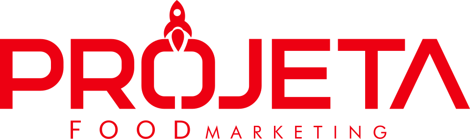
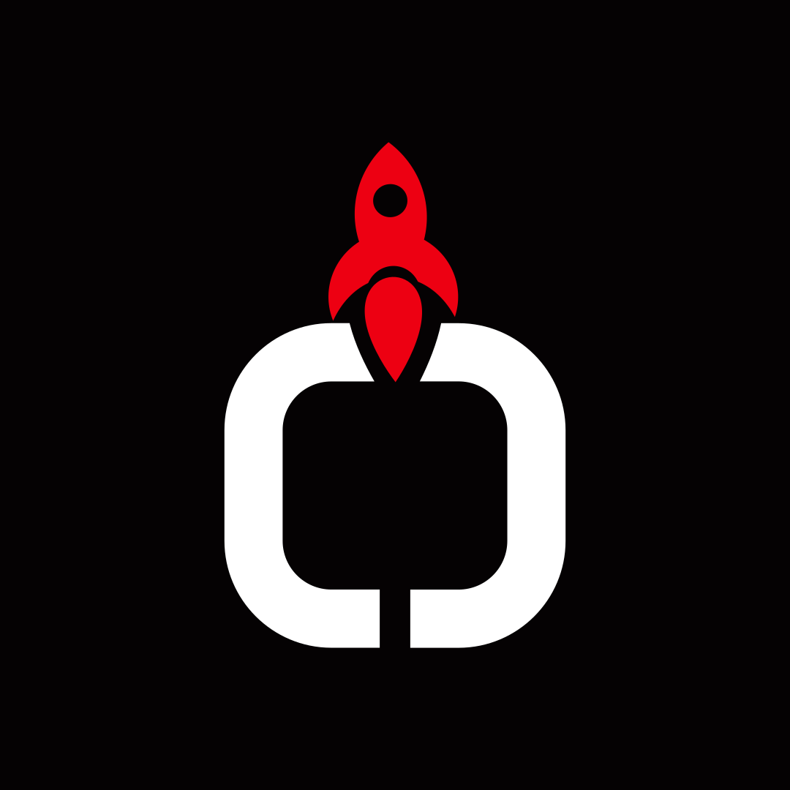

A plataforma
O campo é Noite, quase preto. É o chão firme de onde tudo sai: grade rígida, alinhamento exato, método antes de anúncio.

Manual de marca · v1 · outubro de 2026
Manual de marca · sistema visual
A identidade da Projeta Food e o kit para produzir para dezenas de restaurantes sem apagar nenhum deles: a marca, as cores, a tipografia, os recursos assinatura, a voz, a prova com régua e as regras de cada plataforma de delivery.
A gente monta a plataforma. O seu restaurante decola.
Como usar este manual
A Projeta Food produz para dezenas de restaurantes ao mesmo tempo. Este manual serve aos dois mundos: a comunicação da própria Projeta e a produção em série para os clientes, onde a marca do restaurante manda e a Projeta leva o método.
Mapa
Clique ou toque no nome para ir direto. O botão Sumário, no alto da tela, abre esta lista em qualquer ponto da leitura.
Marca
Sistema gráfico
A Projeta falando de si
Kit de produção para clientes food
Atalhos
Os blocos que resolvem as tarefas mais comuns, com o número do bloco ao lado.
Parte I de 7
A plataforma
Abertura · manifesto
A Projeta Food é a plataforma de lançamento de onde dezenas de restaurantes decolam. A base é sempre a mesma: preta, firme, com método, régua e rigor de produção. O foguete é de cada cliente, com a cor, a letra e a voz dele.
01.1
O texto que explica por que a marca é preta, por que o vermelho aparece pouco e por que cada número tem data. Leia antes de produzir a primeira peça.
Todo restaurante que vende todo dia já tem um foguete: a comida, a marca, o cliente que volta. O que falta, quase sempre, é a plataforma.
Sem ela, cada promoção é um tiro no escuro, cada post é um esforço que não volta e cada mês recomeça do zero.
A Projeta Food constrói essa plataforma. Primeiro organiza o chão: canais, cardápio próprio, rastreamento e dados. Depois acende o motor: conteúdo, anúncios e recorrência. O tráfego pago entra como combustível só quando a base aguenta a subida.
Por isso a nossa marca é preta e firme como uma rampa de lançamento, o nosso vermelho aparece só onde algo começa a subir, e cada número nosso tem data, base e fonte. E por isso, nas peças dos nossos clientes, quem brilha é o restaurante.
O campo é Noite, quase preto. É o chão firme de onde tudo sai: grade rígida, alinhamento exato, método antes de anúncio.
O vermelho acende um ponto por peça: a linha que decide, o número, o botão. No máximo 15% da área. Esta página vermelha é uma das exceções nomeadas.
Todo número público sai com período, base e fonte. Sem prova, o número fica em colchete ou vira "dado em validação". Nunca vira zero.
Como usar este manual
Feito para o time da Projeta, para quem produz junto com ela, para os restaurantes clientes e para as ferramentas de inteligência artificial (IA). Cada um entra por uma porta diferente.
Em um minuto
01.2
Dez públicos, uma rota para cada um. Os números à direita levam direto ao bloco. O "nunca" de cada cartão é o erro mais caro daquele papel.
Sócios e comercial
Apresentar a Projeta, conduzir o diagnóstico gratuito de 40 minutos, montar a proposta e o deck, mostrar cases.
Gestão de tráfego
Anúncios da Projeta e dos restaurantes, medidas por plataforma, leitura de resultado e relatório mensal.
Comece por
Social media
Calendário, posts, carrosséis, stories e legendas da Projeta e de cada restaurante, cada um na voz certa.
Comece por
Direção de arte e design
Marca, cor, tipografia, recursos assinatura, grade e modelos. É quem assina a revisão interna de cada peça.
Atendimento
Entrada de cada restaurante novo, ficha de marca, briefing e a aprovação escrita antes de publicar.
Comece por
Criadores e fotógrafos
Foto e vídeo de comida, gravação com clientes reais e conteúdo de parceria paga.
Gráfica e fornecedores
Cor de produção, tamanhos mínimos da marca e arquivos finais para impressão e brinde.
Restaurantes clientes
Entender como a sua marca entra no trabalho, o que a Projeta pede de você e como ler o relatório do mês.
GrowAI (consultoria do grupo)
Organização do sistema, dados, painéis e manutenção deste manual e da skill que ensina a marca ao Claude.
Claude e outras IAs
Ferramentas de IA que geram texto, peça ou página seguindo a skill branding-projeta-food.
01.3
O manual serve a dois mundos: a comunicação da própria Projeta e a produção em série para os restaurantes. A pergunta abaixo separa os dois antes de qualquer cor ou fonte.
Lê: o consumidor do restaurante
Manda o restaurante
Anúncio, post, story, foto de item no aplicativo, cardápio próprio, Google, WhatsApp, embalagem. Cem por cento da marca do cliente. A Projeta não aparece na arte: entra só o método invisível (grade, áreas seguras, foto-mestra, checklist).
Lê: o dono do restaurante
Divide a moldura
Relatório mensal, diagnóstico, plano de 90 dias, apresentação de resultado. O nome do restaurante é o título e o logo dele é pelo menos 1,5 vez a altura do logo da Projeta, que vai reduzido no canto.
Lê: o próximo cliente da Projeta
Manda a Projeta
Case, post de resultado, deck comercial, portfólio. A plataforma ocupa a peça e o cliente entra intacto dentro da Moldura O, com autorização escrita e resultado com régua.
01.4
Os sinais que se repetem nas 30 seções. Cada um responde a uma pergunta prática: isto já está aprovado? de onde veio este número? posso usar este exemplo como está?
| Sinal | O que quer dizer | O que você faz |
|---|---|---|
| [valor aprovado] | Informação que existe, mas ainda não foi confirmada pela Projeta: número de porte, razão social, telefone, selo de parceiro. | Mantenha o colchete na peça até a resposta. Nunca preencha com o número do site ou com um número "parecido". |
| OficialPadrão ProjetaA confirmar | Selo de confiança de uma medida de plataforma: veio da documentação oficial, do blog oficial, de terceiros, é uma regra da casa ou precisa de confirmação. | Use "Oficial" sem medo. "A confirmar" pede checagem na plataforma no dia da produção. |
| medidoestimado | Marca de origem de um número em relatório e case: medido, calculado, referência de mercado ou estimado. "Sem dado" nunca vira zero. | Copie a marca junto com o número. Número estimado não vai para peça pública. |
| AssimNão assim | Par de exemplos lado a lado: a forma certa e o erro que mais acontece, com o motivo escrito embaixo. | Leia o motivo, não só a imagem. É ele que resolve o caso parecido que não está no manual. |
| SimCom condiçãoNão | Veredito de uso em tabelas de regra: pode, pode com a condição escrita, não pode. Sempre com ícone e palavra, nunca só cor. | "Com condição" exige que a condição apareça na peça ou no registro de aprovação. |
| Mostrar grade | Botão fixo no canto da tela quando há peça em escala: liga margens, 12 colunas e as áreas seguras de cada plataforma. | Ligue antes de copiar uma composição. Texto e preço nunca saem da área segura. |
| Ver em tamanho realCopiar | A peça abre na medida em pixels da plataforma. Textos-modelo, códigos e pedidos para IA têm botão de copiar. | Copie pelo botão, não redigite: o texto copiado já sai sem travessão e com a régua no lugar. |
| 04.2 | Número de bloco: seção 04, bloco 2. Os atalhos da introdução e as rotas de 01.2 apontam para eles. | Cite o número no briefing e na revisão ("ajustar conforme 08.2"). Todo mundo chega no mesmo lugar. |
| Marca fictícia | Os nove restaurantes de exemplo (pizzaria, hamburgueria, japonês, parmegiana e outros) foram inventados para este manual. | Use como referência de estrutura. Em produção, entra a ficha de marca do cliente real. |
01.5
Este manual é uma página entre várias. Cada arquivo resolve um trabalho; todos leem os mesmos valores de cor, fonte e medida, então nada diverge entre eles.
| Arquivo | Para que serve | Quem mais usa |
|---|---|---|
brand-book.html | Este manual: regras, medidas, exemplos e checklists. Abre no navegador, no celular e imprime em A4. | Todos |
guia-de-uso.html | Pedidos prontos por público e por formato: o que pedir, em que ordem, com que arquivo. | Social media, tráfego, atendimento, IA |
deck-template.html | Apresentação em 1440 × 900 para diagnóstico, proposta e case, com notas do apresentador. | Sócios e comercial |
lockup.html | Trechos prontos: marca em todas as versões, avatar, co-assinatura, Etiqueta de Crédito, assinatura de e-mail. | Design, site |
assets/brand/ | A marca em desenho vetorial (SVG) e em imagem (PNG), nas versões completa, reduzida e símbolo. | Design, gráfica |
pviz.js · pforms.js | Motores que desenham gráficos com régua e as formas da casa (Moldura O, Seta A, Trajetória). | Design, GrowAI |
SKILL.md | O estilo travado escrito para o Claude seguir sem improvisar. | Claude e outras IAs |
dist/ | Versões autocontidas (um arquivo só, funciona sem internet) e os PDFs do manual e do código da marca. | Quem envia por e-mail ou WhatsApp |
01.6
Nenhum manual prevê todo caso. Siga a ordem abaixo antes de improvisar, e use o pedido-modelo quando quem vai produzir for uma IA.
Use a skill branding-projeta-food (sistema Plataforma Ignição v1). Peça: [formato e medida, ex.: post 4:5, 1080 × 1350]. Quem vai ler: [consumidor do restaurante | dono do restaurante | próximo cliente da Projeta]. Camada: [1 | 2 | 3]. Restaurante: [nome] · ficha de marca: [cores, fontes, logo aprovado]. Objetivo: [pedido no cardápio próprio | diagnóstico | relatório]. Números: só com período, base e fonte; sem prova, use [valor aprovado]. Antes de entregar, rode o teste de voz 14.10 e o checklist final 29.9 e diga o que ficou pendente.
Quem é a Projeta Food
A Projeta Food é uma agência de marketing para restaurantes e delivery. Organiza canais, cardápio próprio, rastreamento e dados antes de acelerar com anúncios. Esta seção diz o que a marca é, o que ela promete, como ela trabalha e o que ela nunca vai ser. Tudo o que vem depois no manual parte daqui.
Em um minuto
02.1
O posicionamento é o que a Projeta já publica. A essência é a ideia que o sistema visual desenha: uma plataforma de lançamento de onde dezenas de restaurantes decolam.
Marketing, tecnologia e estratégia comercial para restaurantes que querem crescer com previsibilidade.
A essência. A base é sempre a mesma: preta, firme, técnica, com método, régua e rigor de produção. O foguete é de cada cliente, com a cor, a letra e a voz dele. O vermelho não pinta a parede: acende o ponto onde algo começa a subir. O logotipo já desenha isso, com o foguete vermelho decolando de dentro de um O partido, apoiado numa fenda de base.
A tese que a Projeta defende. Muitos restaurantes vendem todos os dias, mas ainda dependem de promoções, de aplicativos de delivery e de ações isoladas. A Projeta organiza marketing, dados e canais digitais para transformar atenção em pedidos recorrentes.
A gente monta a plataforma. O seu restaurante decola.
Blindar antes de acelerar. Medir antes de prometer.
Atenção que vira pedido.
Outras assinaturas aprovadas: "Base organizada antes de acelerar." e "A moldura é nossa. A estrela é sua." Uma assinatura por peça.
Números de porte entram como [valor aprovado], com régua: base [n] restaurantes · [mês/ano] · fonte: [cadastro de clientes ativos]
02.2
São os cinco desafios que a própria Projeta nomeia. Todos têm a mesma raiz: a venda sem estrutura. Cada desafio tem uma resposta no método, e é essa resposta que a comunicação mostra.
Taxa alta, pouco controle sobre o cliente e margem cada vez menor.
Equilibrar canais: cardápio próprio e cliente que volta.
Posts bonitos nas redes, sem venda real no fim.
Conteúdo com chamada para o pedido e rastreio.
O canal sem comissão existe, mas ninguém lembra dele.
Cardápio otimizado e divulgado como canal principal.
Dinheiro investido sem saber quanto voltou.
Rastreamento antes do anúncio; relatório mensal com régua.
Mês bom, mês ruim, sem estrutura de atração e de recorrência.
Plano com metas, cronograma e melhoria contínua.
02.3
O método é o produto. Ele aparece sempre com as mesmas quatro etapas, na mesma ordem, desenhado com a Trajetória: tracejada no começo, contínua e em Ignição até a Seta A. A descrição em itálico é a do site; abaixo dela, o que cada etapa entrega e qual recurso gráfico a representa.
Diagnóstico
"Raio-X completo dos canais digitais, vendas e processos do restaurante."
Na peçaMira de Diagnóstico enquadrando o ponto em análise.
Estratégia
"Plano personalizado com metas claras, cronograma e canais prioritários."
Na peçaLinha do tempo e meta tracejada nos gráficos.
Execução
"Implementação de conteúdo, tráfego pago, cardápio próprio e rastreamento."
Na peçaChama de Status com o rótulo "no ar".
Otimização
"Análise de dados, relatórios mensais e melhoria contínua dos resultados."
Na peçaContador com régua e marca de origem.
02.4
Os serviços nunca aparecem soltos, como cardápio de agência. Cada um mora numa etapa do método. Ícones Lucide, traço 2, na cor de ênfase do campo.
Tráfego pago
Anúncios no Meta (Instagram e Facebook) e no Google, ligados ao cardápio e ao rastreamento.
Estratégia de conteúdo
Conteúdo que leva ao pedido, incluindo vídeos gravados por clientes e criadores.
Google Meu Negócio
Perfil completo, fotos reais e respostas às avaliações, para quem procura comida perto de casa.
Cardápio digital próprio
O canal sem comissão, otimizado e divulgado para o cliente pedir de novo.
Relatórios e dados
Relatório mensal com período, base e fonte em cada número, na moldura co-assinada.
Acompanhamento mensal
Reunião de estratégia todo mês: o que subiu, o que caiu, o que muda no plano.
Na comunicação pública, escreva "conteúdo gravado por clientes e criadores", não a sigla em inglês. "Retorno" substitui a sigla de retorno sobre investimento. Tabela completa de traduções na seção de voz.
02.5
Uma casa de muitas marcas food: segmentos diferentes, portes diferentes, quatro frentes de venda. O sistema da Projeta tem de ser forte para assinar e discreto para não apagar nenhum cliente.
Segmentos que este manual cobre
Dois públicos, duas vozes
A porta de entrada
Diagnóstico gratuito de 40 minutos.
O formulário pergunta o principal desafio atual, com sete opções. Elas são o mapa de dores que a Projeta enxerga e servem de pauta para conteúdo:
Quem está à frente
Cargos conforme o site; confirmação pendente. A Projeta é uma agência com estrutura completa (tráfego, conteúdo, social media, direção de arte, design, processos e atendimento): o argumento é o time e o processo, nunca um gestor sozinho.
02.6
O posicionamento só existe se a peça fala como ele. Três trocas que mostram a diferença entre vender método e vender barulho.
Primeiro a base. Depois a subida.
Cardápio próprio, rastreamento e dados no lugar. Aí o anúncio entra.
Exploda suas vendas em 30 dias
Anúncio que vende sozinho, faturamento garantido.
Seu cardápio próprio vende sem comissão. A gente faz ele ser lembrado.
Fuja do aplicativo de vez
Cada número tem data, base e fonte.
[valor aprovado] restaurantes acompanhados · [mês/ano] · fonte: [relatórios mensais]
+80% de pedidos
Sem período, sem base, sem fonte.
02.7
O caráter da marca em seis palavras, para conferir qualquer peça em dez segundos. As cinco leis da casa, com o que cada uma exige de quem monta a peça, estão na seção 03, com Assim e Não assim; o que cada lei pede dos recursos gráficos está no bloco Leis da casa da seção 10.
A Projeta Food nunca é
As cinco leis
Tudo o que vem depois neste manual é uma aplicação destas cinco frases. Quando uma peça cair num caso que nenhuma seção prevê, são elas que decidem. Cada lei aparece com o porquê, o teste de cinco segundos e a mesma peça feita do jeito certo e do jeito errado.
Em um minuto
03.1
Uma pergunta por lei. Faça as cinco antes de enviar qualquer peça para aprovação, seja um post da Projeta, um relatório co-assinado ou um story de restaurante.
03.2
Na peça que fala com o consumidor do restaurante, a marca do restaurante manda e a Projeta não aparece na arte.
Nos documentos de gestão (relatório, diagnóstico, proposta personalizada), o nome do restaurante é o título e o logo dele é maior que o da Projeta. Só nas peças sobre a própria Projeta a plataforma ocupa o centro. A assinatura da Projeta na peça do cliente é a qualidade do trabalho, não o logo.
Aplicação completa: as três camadas em 22.5 · Como a Projeta assina, a co-assinatura no código da marca (lockup.html) e o modo neutro em 13.5 · A cor do cliente e o modo neutro.
Smash duplo
R$39,90
Peça jáSmash duplo
R$39,90
Peça já
03.3
O campo é Noite. A Ignição acende uma informação por peça e ocupa no máximo 15% da área.
O vermelho marca a linha que decide, o número ou o botão. Exceções com nome: a Faixa de Telemetria e o campo de evento, uma por peça. Seta A, Pavio, arco do Anel e trecho cheio da Trajetória entram na conta dos 15%.
Medida e exceções em 07.3 · Orçamento de cor: 15%; vermelho de texto pequeno e de texto no claro em 08.2 · Pares de leitura calculados.
Cardápio próprio
Seu cardápio, sua margem.
Pedido direto, sem taxa por pedido, com o cliente na sua lista para voltar a comprar.
Cardápio próprio
Seu cardápio, sua margem.
03.4
Trajetória, Seta A, gráfico de evolução e ordem de leitura vão de baixo para cima e da esquerda para a direita, e terminam numa ação.
A Seta A aponta para cima ou, girada, para a direita. A Trajetória nunca desce nem faz laço. Quando um dado cai, a queda aparece honestamente, com o ícone de tendência para baixo na cor semântica e a palavra ao lado, nunca com uma Seta A invertida e nunca em Ignição.
Desenho da Trajetória em 10.3 · Trajetória; queda num gráfico em 13.4 · O título conclui.
Delivery Blindado
Primeiro a base. Depois a subida.
Delivery Blindado
Suas vendas estão caindo?
03.5
Nenhum número público sai sem período, base e fonte. Sem prova, entra o Contador vazio com "dado em validação".
A régua é uma linha curta embaixo do número: "em [n] restaurantes acompanhados de [mês/ano] a [mês/ano], segundo os relatórios mensais". Em relatório, cada número traz a marca de origem (medido, calculado, referência ou estimado). Resultado de um cliente nunca é vendido como típico.
Como escrever cada número em 15.1 · A frase do número; a régua visual em 08.4 · Régua de prova.
Case · Forno Vivo
Pedidos no cardápio próprio
38%
dos pedidos do mês vieram do cardápio próprio, contra 21% no mês anterior ao trabalho.
Forno Vivo, uma unidade · set/2026 contra jun/2026 · base: todos os pedidos do mês · fonte: painel do cardápio próprio. Resultado desta operação; não é promessa.
Resultado
+200%
de vendas no seu delivery
Resultado garantido03.6
Foto real do prato, na porção, no acompanhamento e na embalagem que o cliente recebe, como maior elemento da tela.
Nada de banco de imagem, de prato inventado ou aumentado por inteligência artificial, de ingrediente que o prato não tem. Gente real, com autorização por escrito. O fogo é do sistema gráfico da Projeta, nunca efeito colado na comida.
Direção completa em 23.2 · A foto-mestra: uma foto, seis recortes; regras de oferta e foto em 27.2 · Oferta, foto e prova.
Frango grelhado com arroz e feijão
R$24,90
Porção de 450 gFrango grelhado com arroz e feijão
R$24,90
Porção de 450 gMarcas fictícias criadas para este manual. Preços e percentuais dos exemplos são forma, não dado real. Foto-mestra desenhada: em produção, entra a foto aprovada do prato do cliente.
03.7
Os seis conflitos que mais aparecem no dia a dia de uma agência que atende muitos restaurantes, já decididos. Se o caso não está aqui, vale a lei de número menor.
| Situação | Leis | O que vence |
|---|---|---|
| Relatório da Projeta para um restaurante de marca vermelha, vinho ou laranja | 1 e 2 | Modo neutro: campo Branco, a Ignição sai e o vermelho da Projeta fica só no logo reduzido. A série do cliente segue na cor dele (13.5). |
| O dono pede o logo da Projeta no post do restaurante | 1 | Não entra na arte. Com autorização escrita, o crédito vai na legenda ou na bio: "Gestão de marketing: @projetafood" (22.5). |
| Case com resultado de um cliente num anúncio da Projeta | 1 e 4 | Camada 3: logo do cliente intacto, autorização escrita, régua completa e a frase "resultado desta operação; não é promessa" (19.3). |
| Promoção do restaurante com desconto ou preço riscado | 4 | Preço final com centavos e condição inteira na própria peça: período, canal e área de entrega. Desconto sobre preço praticado de verdade (27.2). |
| Gráfico de relatório em que o mês caiu | 3 e 4 | A queda aparece, com o ícone de tendência para baixo, a cor semântica e a palavra. O título diz o que fazer a seguir; a Trajetória da casa não entra no gráfico (13.4). |
| Post para hoje e o prato ainda sem foto aprovada | 5 | Foto de bastidor real feita no celular ou adiar o prato. Nunca banco de imagem nem prato gerado; o espaço de foto-mestra desenhado é só para rascunho interno (23.2). |
Parte II de 7
Marca
Logotipo · anatomia
O logotipo é um sistema de quatro peças medidas no vetor oficial: a palavra PROJETA, o foguete que decola do O partido, o A em forma de seta de topo chato e a linha FOOD MARKETING. Todos os recursos gráficos da casa nascem destas medidas.
Status versão mestra a partir do vetor oficial · cor unificada em #ED0012 · aguarda aprovação
Em um minuto
04.1
Cotas medidas no vetor oficial, em unidades do arquivo. A cor azul é de ferramenta (cota e guia), não é cor de marca.
Deslize a prancha para os lados para ver o logotipo inteiro.
PROJETA em letras largas de traço único (T), cantos arredondados com raio R e espaçamento próprio. É o que se lê primeiro e é a única parte que aparece em todas as versões com nome.
Corpo, aletas, janela vazada e chama. A chama desce pela cunha do O partido: o foguete decola de dentro da letra. Junto com o O, forma o símbolo.
O A final não tem barra: é um chevron vermelho de topo chato que aponta para cima. É a Seta A, recurso gráfico que a casa usa para indicar subida e direção.
FOOD em vermelho, geométrico e muito espaçado; MARKETING em branco, menor. Diz o nicho. Sai do logotipo na versão reduzida, quando o tamanho não permite ler.
04.2
O O não é só aberto em cima. São duas metades espelhadas: uma cunha em cima, onde entra a chama, e uma fenda reta embaixo, como a base de uma plataforma de lançamento.
O restaurante no centro
04.3
O A final é um chevron sem barra, com topo plano. A inclinação das pernas é de cerca de 64,6 graus. Qualquer seta da casa reproduz este polígono, nunca uma ponta aguda.
<svg viewBox="0 0 41.12 35.75"><polygon points="0,35.75 16.99,0 24.13,0 41.12,35.75 34.02,35.75 20.56,7.43 7.1,35.75"/></svg>O pé esquerdo do A encaixa sob o braço do T (há 7,92 u de sobreposição na horizontal). Essa junção é do desenho e não deve ser afastada.
04.4
O foguete tem geometria oficial: corpo com aletas e janela vazada, mais uma chama que entra pela cunha do O. Ele ergue-se 19,93 u acima das maiúsculas, mais da metade da altura das letras.
projeta-foguete-ignicao.svg, também em branco e Noite). Ele é elemento de construção para desenhar recursos e ícones do sistema. Não é marca e nunca assina peça sozinho.04.5
A linha de baixo diz o nicho e amarra a largura da palavra. Entre as letras de PROJETA, o espaço varia de 1,94 a 5,24 u. É o desenho registrado: preservar, nunca corrigir.
Deslize a prancha para os lados para ver o logotipo inteiro.
assets/brand/.#ED0012. Nenhuma outra combinação de duas cores existe.04.6
A regra de decisão é a largura que o logotipo vai ter na tela ou no papel. Abaixo de 240 px a linha FOOD MARKETING deixa de ter folga: troque pela reduzida.
| Aplicação | Versão | Tamanho de referência | Observação |
|---|---|---|---|
| Cabeçalho do site no computador | Completa negativa | 240 a 280 px de largura | Sobre Noite; no rodapé, a mesma ou a reduzida |
| Cabeçalho do site no celular | Reduzida negativa | 120 a 160 px | O nicho aparece no texto da página |
| Capa de deck, proposta e diagnóstico | Completa negativa ou positiva | Um terço da largura da capa, no máximo | Positiva quando a capa for Branco |
| Rodapé de slide e de relatório | Reduzida | 110 a 140 px | Sempre na mesma posição, em todas as páginas |
| Post e story da Projeta | Reduzida ou completa negativa | 300 u na peça de 1080 u | Fora da área segura da plataforma |
| Co-assinatura com cliente | Reduzida | Nunca abaixo de 96 px | Logo do cliente 1,5 vez a altura do PROJETA |
| Perfil de rede social e WhatsApp | Avatar | Arquivo de 1080 ou 640 px | O recorte circular não corta o símbolo |
| Aba do navegador | Favicon | SVG mais PNG de 32 px | Trecho pronto para o site na seção de tokens |
| Anúncio de imagem do Google | Completa negativa aplicada sobre Preto dentro da imagem | Conforme o formato | Nunca PNG branco com fundo transparente |
| Vídeo e foto | Uma cor branca | Canto inferior, dentro da área segura | Sobre área escurecida da imagem |
| Carimbo, gravação, bordado | Uma cor Noite ou branca | Completa a partir de 60 mm | Abaixo disso, reduzida ou símbolo |
Logotipo · versões, respiro e mínimos
Quatro decisões resolvem quase todo uso do logotipo: qual versão, sobre qual fundo, com quanto espaço em volta e a partir de que tamanho. Esta seção dá a medida de cada uma e mostra, desenhado de verdade, o que não se faz.
Em um minuto
05.1
São três desenhos (completa, reduzida e símbolo) em cinco cores (negativa, positiva, branca, noite e ignição), mais avatar e favicon. A versão se escolhe pelo fundo e pelo tamanho, nunca pelo gosto do dia.
projeta-completa-negativa
projeta-completa-positivaprojeta-reduzida-negativa
projeta-reduzida-positiva
projeta-simbolo-negativaprojeta-avatar
projeta-completa-branca
projeta-completa-noite
projeta-completa-ignicao 32 px
16 px
32 px
16 px
 SVG
SVG
projeta-faviconStatus dos arquivosversão mestra a partir do vetor oficial · cor unificada em #ED0012 · aguarda aprovação
O fundo decide a versão. Os números ao lado são razões de contraste calculadas (quanto maior, mais o elemento se separa do fundo). Para o vermelho do logo, valem os pares da tabela de cor da seção 08.
Simulação de foto| Fundo | Negativa | Positiva | Branca | Noite | Ignição |
|---|---|---|---|---|---|
| Noite, Preto, Superfície, Superfície Alta, Grafite Brasa | Oficial | Não | Só peça de uma cor | Não | Não |
| Vinho Noite | Com cautela | Não | Só peça de uma cor | Não | Não |
| Foto escurecida (véu de 70 a 75%) | Sim | Não | Sim | Não | Não |
| Branco, Bancada | Não | Sim | Não | Só peça de uma cor | Raro: brinde e gravação |
| Rosado | Não | Sim | Não | Só peça de uma cor | Não |
| Campo Ignição | Não | Não | Única | Não | Não |
| Cor de outra marca | Não | Não | Se for a de mais contraste | Se for a de mais contraste | Não |
| Foto movimentada sem véu | Não | Não | Não | Não | Não |
assets/brand/. Nunca redesenhar, redigitar PROJETA em fonte, girar, esticar, contornar, aplicar sombra, brilho, relevo ou degradê, nem mudar o espaçamento irregular entre as letras: ele é do desenho original.05.2
x é o raio externo das curvas do P, do R e do O: 11,78 unidades do desenho, cerca de um terço da altura das maiúsculas (35,75). Nada entra nessa faixa: texto, borda de foto, selo, botão, outra marca.
/* x = 4,91% da largura (completa e reduzida) */
.marca-projeta{
--l: 240px; /* largura do arquivo */
width: var(--l);
padding: calc(var(--l) * .0491);
box-sizing: content-box;
}
/* símbolo: x = 31,35% da largura */
.marca-projeta--simbolo{
padding: calc(var(--l) * .3135);
}05.3
Os mínimos foram testados renderizando os arquivos a 1 pixel de tela por 1 pixel. Os logos abaixo estão em tamanho real: o que fica ruim aqui fica pior numa imagem comprimida ou sobre foto.
Completa · sobre Noite · tamanho real
240 pxMínimo de uso180 pxAinda lê, sem folgaCompleta · sobre Branco · tamanho real
240 pxMínimo de uso180 pxAinda lê, sem folgaReduzida e símbolo · tamanho real
| Versão | Mínimo em tela | Mínimo impresso | Abaixo disso |
|---|---|---|---|
| Completa | 240 px de largura (MARKETING com 7 px de altura) | 60 mm de largura (MARKETING com 1,75 mm) | Troque pela reduzida |
| Reduzida | 96 px de largura (a janela do foguete ainda aparece) | 25 mm de largura (maiúsculas com 3,7 mm) | Troque pelo símbolo |
| Símbolo | 24 px de altura (fenda e janela aparecem) | 8 mm de altura | Só o favicon, em placa Noite |
| Avatar | 40 px | Não se aplica | Não use |
Capa, post, story, assinatura de e-mail grande, cabeçalho do site no computador.
Cabeçalho de celular, rodapé de slide e de relatório, co-assinatura com cliente.
Etiqueta de Crédito, marca-d'água, carimbo. Em espaço quadrado de perfil, use o avatar.
Aba do navegador e atalhos. Abaixo de 24 px, só com a placa Noite.
05.4
Cada erro abaixo foi aplicado de verdade sobre o arquivo oficial, para ninguém precisar imaginar. Embaixo de cada um, o que fazer no lugar.
assets/brand/; em texto corrido, escreva Projeta Food.Fale agoraSimulação de foto[selo oficial vigente]Pizza de fermentação longa

05.5
Antes de soltar qualquer peça com o logo da Projeta Food, cinco perguntas. Um não em qualquer uma devolve a peça.
| Preciso de | Arquivo |
|---|---|
| Peça, site, documento | projeta-<layout>-<cor>.svg |
| Programa que não aceita SVG | .png (2400 px) ou -web.png (800 px) |
| Perfil em rede social | projeta-avatar-1080.png |
| Aba do navegador | projeta-favicon.svg e -32.png |
| Medidas exatas | marca.json |
Arquitetura de marcas
A Projeta Food é a marca de marketing para delivery e restaurantes do Grupo Projeta. Divide o desenho da palavra com o grupo e com a irmã de clínicas, mas tem cor, assinatura e sistema próprios. O método se chama Delivery Blindado e aparece como nome, não como logotipo.
06.1
Mesma palavra, papéis diferentes. A cor e a linha de assinatura dizem de qual Projeta se trata.
Assina "Marketing & Tech", usa laranja e foguete solto. Aparece em documento institucional do grupo, com o arquivo oficial do próprio grupo. O laranja não entra na Plataforma Ignição.
Vermelha, assinatura FOOD MARKETING, foguete dentro do O. Atende restaurantes e operações de delivery.
Marketing para clínicas, com sistema próprio. Nunca divide peça com a Projeta Food sem que o assunto seja o grupo.
Nome do método de quatro etapas: Diagnóstico, Estratégia, Execução e Otimização. Escrito em texto, com iniciais maiúsculas, sem símbolo de marca registrada até a confirmação do registro.
06.2
Em frase, legenda, e-mail, contrato e site, a marca é escrita, nunca desenhada. Duas palavras, iniciais maiúsculas.
| Situação | Escreva | Evite |
|---|---|---|
| Primeira menção | Projeta Food | Projeta, PF, a agência |
| Método | método Delivery Blindado | DELIVERY BLINDADO®, Delivery-Blindado |
| Domínio e redes | projetafood.com.br · @projetafood | www.ProjetaFood.com.br |
| Rodapé jurídico | Projeta Food · [razão social] · CNPJ [nº] | razão social inventada ou incompleta |
06.3
O Grupo Projeta também tem operações de comida com marca própria. Para a Projeta Food, elas são clientes: entram com o próprio sistema visual, nunca com o vermelho da Projeta.
06.4
Selo de plataforma é prova, não decoração. Entra só com status vigente confirmado e arquivo oficial do programa. Neste manual público, aparece como espaço reservado.
[selo oficial vigente] e o método sai sem símbolo de registro.Cor · campos, escala e orçamento
Sete campos, uma escala vermelha de onze tons, uma família de cinzas quentes e um orçamento que impede o vermelho de virar parede. Cada cor tem HEX, RGB, nome de variável e uso; os valores saem do arquivo de sistema da marca e não se arredondam.
Em um minuto
07.1
Campo é a cor de fundo de uma peça, seção ou cartão. Ele decide a cor do texto, do vermelho e dos fios. Embaixo de cada ficha estão os pares de leitura que já foram calculados para aquele fundo.
--noite
O campo da marca: capa, post, story, deck, site e abertura de relatório. É a plataforma de onde tudo decola, por isso ocupa a maior parte de qualquer conjunto.
--ignicao
A cor oficial. Botão, Faixa de Telemetria, Seta A e FOOD do logotipo, foguete, uma palavra ou linha por título grande, numeral grande. Como campo inteiro, só em evento: manifesto, abertura de capítulo, página de virada.
--grafite
Faixa alternada, bloco de diagnóstico, perguntas frequentes, rodapé de deck.
--superficie
Cartão e painel sobre Noite: o primeiro nível de elevação.
--superficie-alta
Cartão em destaque, item ativo, menu aberto, campo de formulário escuro.
--preto
Vídeo, foto de estúdio, mídia exterior e logotipo em imagem para anúncio e perfil. Nunca campo de documento longo.
--branco
Relatório, proposta e diagnóstico impressos; o campo que mostra a cor do restaurante cliente com fidelidade. Fundo de prato recortado.
--bancada
Cartão e painel sobre Branco, zebra de tabela, mockup claro e a placa do logotipo do cliente (raio 12 px).
Razões de contraste calculadas pela norma internacional de acessibilidade da web (WCAG 2): 4,5 : 1 é o mínimo para texto comum, 3 : 1 para texto grande (24 px, ou 19 px em negrito). Pílula verde: liberado; amarela: com condição.
07.2
Todos os tons já estavam no código do site; a escala só os organiza do mais claro (50) ao mais escuro (950). Os três destacados são os que mais aparecem: Chama para texto no escuro, Ignição para área e Rubro para texto no claro.
| Tom | HEX | Papel | Nunca |
|---|---|---|---|
| 50 · Rosado | #FEDADE | Fundo de nota e de aviso em documento claro; texto sobre Vinho Noite. | Texto sobre Branco (some no fundo). |
| 100 · Faísca Clara | #FA949D | Quarta série de gráfico no escuro; texto sobre vinhos muito escuros. | Área grande; texto sobre claro. |
| 200 · Faísca | #FF7A85 | Destaque vermelho em texto pequeno sobre Noite quando a Chama parecer forte demais. | Título (perde força perto da Ignição). |
| 300 · Chama | #FF5A67 | O vermelho de TEXTO PEQUENO no escuro: link, rótulo, número de 14 a 23 px sobre Noite, Superfície, Superfície Alta e Grafite Brasa. | Texto sobre Branco ou Bancada; área de fundo. |
| 400 · Brilho | #FF2638 | Só luz em tela: reflexo do botão, ponto ativo, arco do Anel de Ignição. Nunca área, nunca texto branco em cima, nunca impressão. | Área, impressão, texto branco em cima (3,76). |
| 500 · Ignição | #ED0012 | A cor oficial. Botão, Faixa de Telemetria, Seta A e FOOD do logo, foguete, uma palavra ou linha por título grande, numeral grande. Área máxima: 15% da peça. | Texto abaixo de 18 px no escuro e no claro; erro ou perigo; mais de 15% da peça. |
| 600 · Rubro | #AD000D | O vermelho de TEXTO no claro (link, palavra de destaque, rótulo sobre Branco e Bancada); cartão sobre campo Ignição; borda de campo de formulário. | Texto pequeno sobre Noite (escuro sobre escuro). |
| 700 · Brasa Funda | #7E000A | Cartão profundo sobre vermelho, sombra de faixa, quarta série de gráfico no claro. | Texto sobre Noite. |
| 800 · Vinho | #560007 | Fundo de cartão de método, parada escura do gradiente. | Fundo de texto Ignição pequeno (3,30). |
| 900 · Vinho Noite | #300008 | Degradê de retrato da equipe, base de gradiente. | Campo de documento inteiro. |
| 950 · Carvão Rubro | #120002 | Transição entre vermelho e Noite em gradiente e vídeo. | Campo chapado (lê como Noite suja). |
| fio · Divisa | #650008 | Fio de 2 px entre colunas da Faixa de Telemetria. Só fio, nunca texto. | Texto (2,96 com Ignição); qualquer uso fora da Telemetria. |
Cinzas levemente quentes, puxados para o vermelho, para conviver com Noite e Grafite Brasa sem esfriar a peça. Fumaça 200 e 400 servem ao escuro; 600 e 800, ao claro. Fios são decoração: contorno de cartão e divisória, nunca texto.
07.3
Lei 2: vermelho é ignição, não parede. A conta é feita em duas escalas: no conjunto das peças da Projeta (o feed, o deck, o site inteiro) e dentro de cada peça.
A foto de comida fica fora da conta: ela é a estrela e não disputa orçamento com a marca.
Seu cardápio, sua margem.
Pedido direto, com o cliente na sua lista.
DiagnósticoSeu cardápio, sua margem.
Pedido direto, com o cliente na sua lista.
DiagnósticoEscuro é a regra, com Noite e Grafite Brasa alternando. Branco entra para leitura longa e para a marca do cliente. Ignição é batida, nunca sequência. Exemplo com um deck de doze telas:
Assim
Não assim
No exemplo errado, seis das doze telas são vermelhas (o limite seria duas) e duas vêm coladas a outra vermelha (contorno rosa). O certo tem duas telas em Ignição, separadas por seis telas escuras ou claras.
07.4
O site usa #ED0012 e o vetor do logotipo usava #FF0013. O sistema fica com um vermelho só, para que tela, impressão e arquivo de marca mostrem a mesma cor.
Por que #ED0012. É o único dos vermelhos da marca que aceita texto branco em tamanho comum: 4,56 : 1, contra 3,99 : 1 do #FF0013. Também é a cor que o site inteiro já usa e que o público já vê. Na versão mestra do logotipo, o #FF0013 é trocado por #ED0012 sem mexer em forma, letra ou espaçamento.
Na gráfica. Quadricromia e Pantone da ficha desta seção são pontos de partida. A cor final sai de uma prova física aprovada, no papel e no acabamento reais da peça. Toda gráfica nova recebe a prova aprovada como referência.
--ignicao · também --ignicao-50007.5
Para site, página de captura, relatório e qualquer HTML da marca. Cole no :root e use os nomes, nunca o HEX solto.
:root{
/* campos */
--noite:#050203; --preto:#000000; --superficie:#10090B; --superficie-alta:#1A0D10;
--grafite:#221E1E; --branco:#FFFFFF; --bancada:#F7F7F7;
/* escala Ignição */
--ignicao-50:#FEDADE; --ignicao-100:#FA949D; --ignicao-200:#FF7A85; --ignicao-300:#FF5A67;
--ignicao-400:#FF2638; --ignicao-500:#ED0012; --ignicao-600:#AD000D; --ignicao-700:#7E000A;
--ignicao-800:#560007; --ignicao-900:#300008; --ignicao-950:#120002; --divisa:#650008;
--ignicao:var(--ignicao-500); --chama:var(--ignicao-300); --rubro:var(--ignicao-600);
/* fumaça e fios */
--fumaca-50:#F0EEEE; --fumaca-200:#BDB8B8; --fumaca-400:#8C8686; --fumaca-600:#5E5858; --fumaca-800:#3A3434;
--fio-escuro:#FFFFFF24; --fio-claro:#E2DEDE;
/* estados: sempre com ícone e palavra */
--positivo:#75DC91; --positivo-claro:#1E7B45; --atencao:#FFC145; --atencao-claro:#8A5A00;
--negativo:#FF8FB0; --negativo-claro:#A3175A; --informacao:#8FB8FF; --informacao-claro:#1F5FBF;
}Cor · contraste, estados e dados
Cada par de cor desta página tem a razão de contraste medida pela norma internacional de acessibilidade da web (WCAG 2). Se o par não está aqui, ele não está liberado: peça o cálculo antes de usar.
Em um minuto
08.1
Três frases resolvem nove em cada dez dúvidas sobre vermelho. O resto está nos pares abaixo.
Os pedidos diretos cresceram no fim de semana. Ver o detalhe por canal.
O plano começa pelo diagnóstico gratuito de 40 minutos. Ver as etapas.
Pedido direto
Diagnóstico08.2
Cada cartão mostra a cor do texto sobre a cor do fundo, na vida real, com a razão de contraste e o veredito. Os pares vêm do arquivo de sistema; ninguém recalcula à mão.
| Texto | Fundo | Razão | Situação | Uso |
|---|---|---|---|---|
| Branco #FFFFFF | Noite #050203 | 20,66 | Liberado | qualquer tamanho (passa até o nível mais exigente da norma) |
| Branco #FFFFFF | Preto #000000 | 21,00 | Liberado | qualquer tamanho (passa até o nível mais exigente da norma) |
| Branco #FFFFFF | Superfície #10090B | 19,70 | Liberado | qualquer tamanho (passa até o nível mais exigente da norma) |
| Branco #FFFFFF | Superfície Alta #1A0D10 | 18,94 | Liberado | qualquer tamanho (passa até o nível mais exigente da norma) |
| Branco #FFFFFF | Grafite Brasa #221E1E | 16,50 | Liberado | qualquer tamanho (passa até o nível mais exigente da norma) |
| Fumaça 50 #F0EEEE | Noite #050203 | 17,88 | Liberado | qualquer tamanho (passa até o nível mais exigente da norma) |
| Fumaça 200 #BDB8B8 | Noite #050203 | 10,54 | Liberado | qualquer tamanho (passa até o nível mais exigente da norma) |
| Fumaça 200 #BDB8B8 | Grafite Brasa #221E1E | 8,42 | Liberado | qualquer tamanho (passa até o nível mais exigente da norma) |
| Fumaça 400 #8C8686 | Noite #050203 | 5,77 | Liberado | texto comum e grande |
| Fumaça 400 #8C8686 | Superfície #10090B | 5,51 | Liberado | texto comum e grande |
| Fumaça 400 #8C8686 | Grafite Brasa #221E1E | 4,61 | Liberado | texto comum e grande · Só a partir de 14 px; legenda menor que isso vai em Fumaça 200. |
| Branco #FFFFFF | Ignição #ED0012 | 4,56 | Liberado | texto comum e grande · Texto comum no limite: peso 600 ou mais e no mínimo 16 px (botão, rótulo e régua da Faixa de Telemetria). |
| Noite #050203 | Ignição #ED0012 | 4,54 | Liberado | texto comum e grande · Título preto em seção vermelha, como no site. Peso 600 ou mais. |
| Preto #000000 | Ignição #ED0012 | 4,61 | Liberado | texto comum e grande |
| Ignição #ED0012 | Noite #050203 | 4,54 | Liberado | texto comum e grande · Passa no limite: use a partir de 18 px; abaixo disso, Chama. |
| Ignição #ED0012 | Preto #000000 | 4,61 | Liberado | texto comum e grande · Passa no limite: use a partir de 18 px; abaixo disso, Chama. |
| Ignição #ED0012 | Superfície #10090B | 4,32 | Só grande | só texto grande (24 px ou mais, ou 19 px ou mais em negrito) e ícone |
| Ignição #ED0012 | Superfície Alta #1A0D10 | 4,16 | Só grande | só texto grande (24 px ou mais, ou 19 px ou mais em negrito) e ícone |
| Ignição #ED0012 | Grafite Brasa #221E1E | 3,62 | Só grande | só texto grande (24 px ou mais, ou 19 px ou mais em negrito) e ícone |
| Chama #FF5A67 | Noite #050203 | 6,80 | Liberado | texto comum e grande |
| Chama #FF5A67 | Superfície #10090B | 6,48 | Liberado | texto comum e grande |
| Chama #FF5A67 | Superfície Alta #1A0D10 | 6,23 | Liberado | texto comum e grande |
| Chama #FF5A67 | Grafite Brasa #221E1E | 5,43 | Liberado | texto comum e grande |
| Faísca #FF7A85 | Noite #050203 | 8,24 | Liberado | qualquer tamanho (passa até o nível mais exigente da norma) |
| Branco #FFFFFF | Rubro #AD000D | 7,55 | Liberado | qualquer tamanho (passa até o nível mais exigente da norma) |
| Branco #FFFFFF | Brasa Funda #7E000A | 11,10 | Liberado | qualquer tamanho (passa até o nível mais exigente da norma) |
| Branco #FFFFFF | Vinho #560007 | 15,01 | Liberado | qualquer tamanho (passa até o nível mais exigente da norma) |
| Noite #050203 | Branco #FFFFFF | 20,66 | Liberado | qualquer tamanho (passa até o nível mais exigente da norma) |
| Noite #050203 | Bancada #F7F7F7 | 19,28 | Liberado | qualquer tamanho (passa até o nível mais exigente da norma) |
| Fumaça 800 #3A3434 | Bancada #F7F7F7 | 11,39 | Liberado | qualquer tamanho (passa até o nível mais exigente da norma) |
| Fumaça 600 #5E5858 | Branco #FFFFFF | 6,97 | Liberado | texto comum e grande |
| Fumaça 600 #5E5858 | Bancada #F7F7F7 | 6,51 | Liberado | texto comum e grande |
| Ignição #ED0012 | Branco #FFFFFF | 4,56 | Liberado | texto comum e grande · Passa no limite: só a partir de 18 px; texto vermelho menor no claro vai em Rubro. |
| Ignição #ED0012 | Bancada #F7F7F7 | 4,25 | Só grande | só texto grande (24 px ou mais, ou 19 px ou mais em negrito) e ícone |
| Rubro #AD000D | Branco #FFFFFF | 7,55 | Liberado | qualquer tamanho (passa até o nível mais exigente da norma) |
| Rubro #AD000D | Bancada #F7F7F7 | 7,04 | Liberado | qualquer tamanho (passa até o nível mais exigente da norma) |
| Rubro #AD000D | Rosado #FEDADE | 5,86 | Liberado | texto comum e grande |
| Noite #050203 | Rosado #FEDADE | 16,03 | Liberado | qualquer tamanho (passa até o nível mais exigente da norma) |
| Rosado #FEDADE | Vinho Noite #300008 | 14,43 | Liberado | qualquer tamanho (passa até o nível mais exigente da norma) |
| Faísca Clara #FA949D | Vinho Noite #300008 | 8,67 | Liberado | qualquer tamanho (passa até o nível mais exigente da norma) |
| Positivo (escuro) #75DC91 | Noite #050203 | 12,20 | Liberado | qualquer tamanho (passa até o nível mais exigente da norma) |
| Positivo (escuro) #75DC91 | Grafite Brasa #221E1E | 9,75 | Liberado | qualquer tamanho (passa até o nível mais exigente da norma) |
| Atenção (escuro) #FFC145 | Noite #050203 | 12,76 | Liberado | qualquer tamanho (passa até o nível mais exigente da norma) |
| Atenção (escuro) #FFC145 | Grafite Brasa #221E1E | 10,19 | Liberado | qualquer tamanho (passa até o nível mais exigente da norma) |
| Negativo (escuro) #FF8FB0 | Noite #050203 | 9,65 | Liberado | qualquer tamanho (passa até o nível mais exigente da norma) |
| Negativo (escuro) #FF8FB0 | Grafite Brasa #221E1E | 7,71 | Liberado | qualquer tamanho (passa até o nível mais exigente da norma) |
| Informação (escuro) #8FB8FF | Noite #050203 | 10,30 | Liberado | qualquer tamanho (passa até o nível mais exigente da norma) |
| Positivo (claro) #1E7B45 | Branco #FFFFFF | 5,28 | Liberado | texto comum e grande |
| Positivo (claro) #1E7B45 | Bancada #F7F7F7 | 4,93 | Liberado | texto comum e grande |
| Atenção (claro) #8A5A00 | Bancada #F7F7F7 | 5,53 | Liberado | texto comum e grande |
| Negativo (claro) #A3175A | Branco #FFFFFF | 7,43 | Liberado | qualquer tamanho (passa até o nível mais exigente da norma) |
| Negativo (claro) #A3175A | Bancada #F7F7F7 | 6,93 | Liberado | texto comum e grande |
| Informação (claro) #1F5FBF | Bancada #F7F7F7 | 5,69 | Liberado | texto comum e grande |
| Branco #FFFFFF | Brilho #FF2638 | 3,76 | Proibido | só texto grande (24 px ou mais, ou 19 px ou mais em negrito) e ícone · Proibido: o Brilho é só luz. |
| Vinho Noite #300008 | Ignição #ED0012 | 4,08 | Só grande | só texto grande (24 px ou mais, ou 19 px ou mais em negrito) e ícone |
| Ignição #ED0012 | Vinho #560007 | 3,30 | Só grande | só texto grande (24 px ou mais, ou 19 px ou mais em negrito) e ícone |
| Ignição #ED0012 | Divisa #650008 | 2,96 | Proibido | nunca como texto (só fio ou decoração) · Divisa é só fio. |
| Branco a 100% (equivale a #FFFFFF) | Noite #050203 | 20,66 | Liberado | título e texto principal · qualquer tamanho (passa até o nível mais exigente da norma) |
| Branco a 100% (equivale a #FFFFFF) | Grafite Brasa #221E1E | 16,50 | Liberado | título e texto principal · qualquer tamanho (passa até o nível mais exigente da norma) |
| Branco a 86% (equivale a #DCDCDC) | Noite #050203 | 15,07 | Liberado | corpo de leitura · qualquer tamanho (passa até o nível mais exigente da norma) |
| Branco a 86% (equivale a #E0DFDF) | Grafite Brasa #221E1E | 12,41 | Liberado | corpo de leitura · qualquer tamanho (passa até o nível mais exigente da norma) |
| Branco a 68% (equivale a #AFAEAE) | Noite #050203 | 9,33 | Liberado | apoio · qualquer tamanho (passa até o nível mais exigente da norma) |
| Branco a 68% (equivale a #B8B7B7) | Grafite Brasa #221E1E | 8,25 | Liberado | apoio · qualquer tamanho (passa até o nível mais exigente da norma) |
| Branco a 55% (equivale a #8E8D8E) | Noite #050203 | 6,25 | Liberado | legenda (piso para texto) · texto comum e grande |
| Branco a 55% (equivale a #9C9A9A) | Grafite Brasa #221E1E | 5,90 | Liberado | legenda (piso para texto) · texto comum e grande |
| Branco a 45% (equivale a #767474) | Noite #050203 | 4,45 | Proibido | desativado: nunca texto · decorativo (linha, ícone desativado, marca-d'água); nunca texto |
| Branco a 45% (equivale a #858383) | Grafite Brasa #221E1E | 4,38 | Proibido | desativado: nunca texto · decorativo (linha, ícone desativado, marca-d'água); nunca texto |
08.3
No escuro, a hierarquia de texto é feita com o branco em 100, 86, 68 e 55%. Abaixo de 55% o branco vira decoração. Quando o arquivo não aceita transparência, use o HEX equivalente.
08.4
Todo número em relatório, case e diagnóstico leva a marca de origem: um traço vertical de 3 px à esquerda, com ícone e rótulo. O estilo do traço diz se o número foi medido, calculado, citado ou estimado.
| Estado | O que é | Traço e ícone | Cor |
|---|---|---|---|
| Medido | Lido no painel do cliente, com data | Traço cheio · ícone gauge | #FFFFFF no escuro #050203 no claro |
| Calculado | Derivado de dados medidos | Traço cheio fino · ícone calculator | #BDB8B8 no escuro #5E5858 no claro |
| Referência de mercado | Fonte externa citada | Traço tracejado · ícone book-open | #8FB8FF no escuro #1F5FBF no claro |
| Estimado | Hipótese, ainda sem dado | Traço pontilhado · ícone flask-conical | #FFC145 no escuro #8A5A00 no claro |
08.5
Quatro estados, cada um com um tom para o escuro e outro para o claro. Cor sozinha nunca carrega a informação: quem não distingue cores precisa ler o ícone e a palavra.
Os números do exemplo são ilustrativos.
08.6
No máximo quatro séries, sempre na mesma ordem de papel: principal, meta ou período anterior, contexto e uma quarta, se for inevitável. Projeção usa a mesma cor da série, tracejada.
No relatório, a cor do cliente pode substituir a Ignição como série principal: o dono se reconhece no próprio dado. Se a marca do cliente for vermelha, laranja, rosa ou vinho, a Ignição sai do documento inteiro, a série principal fica na cor do cliente e a comparação vai para Fumaça. O vermelho da Projeta aparece só no logotipo reduzido.
| Papel | No escuro | No claro |
|---|---|---|
| Principal | Ignição #ED0012 | Ignição #ED0012 (rótulo em Rubro) |
| Meta ou anterior | Branco #FFFFFF | Noite #050203 |
| Contexto | Fumaça 400 #8C8686 | Fumaça 600 #5E5858 |
| Quarta | Faísca Clara #FA949D | Brasa Funda #7E000A |
Marca vermelha (#C8102E): o motor de gráficos entra sozinho no modo neutro e tira a Ignição.
Marcas fictícias criadas para este manual.
Tipografia
Quatro papéis e três famílias: uma letra larga e quadrada que manda no título e no número, uma geométrica para selo e botão, e a Barlow, a mesma do site, para tudo que se lê.
Em um minuto
09.1
Cada família tem um trabalho. A Saira cobre dois papéis (título e numeral) com pesos diferentes. As três são livres (licença aberta SIL Open Font License) e vêm do Google Fonts.
Título
ABCDEFGHIJKLMNOPQRSTUVWXYZ ÇÃÕÉÊÍÓÚ
Quadrada de cantos arredondados, com O e D retos e R de perna firme: a mesma família eletrônica e humana da Transducer, que o site usa nos títulos. Sempre em caixa alta, entreletra -0,055em, entrelinha 1,0.
Numeral
0 1 2 3 4 5 6 7 8 9 · R$ · % · + · , · h
Mais leve que o título para o número respirar no tamanho grande. Entreletra -0,06em, entrelinha 0,9 e algarismos alinhados pela base. É a letra do Contador, da Faixa de Telemetria e da Contagem.
Display de apoio
Diagnóstico · Cardápio próprio · Peça já
Geométrica larga, com o mesmo espírito da Kallisto. Faz selo, botão, etiqueta e subtítulo curto, em caixa alta, entreletra de 0 a 0,02em. Nunca texto corrido e nunca mais de três palavras seguidas.
Texto
Aa Bb Cc Dd Ee Ff Gg Hh Ii Jj Kk Ll Mm Nn Oo Pp Qq Rr Ss Tt Uu Vv Ww Xx Yy Zz Çç Ãã Õõ Éé
Sem serifa de desenho levemente arredondado, livre desde a origem: não precisa de substituta. Corpo em 400, rótulo e destaque em 600, chamada curta em 700. O Pavio (sobretítulo) é Barlow 600, 12 px, caixa alta, entreletra 0,34em.
Fontes originais da marca: Transducer e Kallisto (licença comercial a cargo da Projeta). Este manual usa as substitutas livres Saira e Unbounded.
09.2
A Transducer e a Kallisto são as fontes que desenham a cara do site. Elas têm dono e licença paga. O sistema foi montado para usá-las onde a licença existe e trocar sozinho para as livres onde não existe, sem quebrar o layout.
| Fonte oficial | Quem desenhou | Onde se licencia | Substituta livre |
|---|---|---|---|
| Transducer (título e numeral) | James Todd Design (James Hultquist-Todd), 2021 | Adobe Fonts e revendas como Fontspring | Saira com largura 112,5% |
| Kallisto (display de apoio) | Rian Hughes, fundição Device, 2010 | Adobe Fonts, Fontspring e MyFonts | Unbounded |
| Barlow (texto) | Jeremy Tribby | Google Fonts, livre | é a própria |
:root{
--font-titulo:"Transducer","Transducer Projeta",
"Saira",Arial,sans-serif;
--font-display:"Kallisto","Kallisto Projeta",
"Unbounded","Arial Black",sans-serif;
--font-texto:"Barlow",Arial,sans-serif;
--largo:112.5%;
}
h1,h2,h3,.titulo{
font-family:var(--font-titulo); font-stretch:var(--largo);
font-weight:700; text-transform:uppercase;
letter-spacing:-.055em; line-height:1;
}
.numeral{
font-family:var(--font-titulo); font-stretch:var(--largo);
font-weight:500; letter-spacing:-.06em; line-height:.9;
font-variant-numeric:lining-nums tabular-nums;
}
.selo,.botao{
font-family:var(--font-display); font-weight:600;
text-transform:uppercase; letter-spacing:.01em;
}https://fonts.googleapis.com/css2?family=Saira:wdth,wght@100..125,400..800&family=Unbounded:wght@500..700&family=Barlow:ital,wght@0,400;0,500;0,600;0,700;1,400&display=swap| Ajuste | Com Saira (substituta) | Com Transducer instalada |
|---|---|---|
| Largura | font-stretch:112.5%, ou a Saira Larga Projeta (09.7) | Nenhum ajuste: a fonte é larga de nascença e ignora o font-stretch |
| Entreletra do título no CSS | -0,055em | -0,055em (a pilha usa o mesmo valor; a diferença é mínima na tela) |
| Entreletra no Illustrator e no InDesign (milésimos de eme) | -55 | -75 |
| Entreletra no Figma (porcentagem) | -5,5% | -7,5% |
A situação da licença das fontes oficiais está na pendência 04 da seção de pendências. Até a resposta, todo material público sai com as substitutas livres.
09.3
Para tudo que se lê na tela ou no papel: este manual, site, proposta, diagnóstico, relatório, e-mail. Cada amostra está no tamanho real da tela em que você lê. Entre 390 e 1440 px de largura, títulos e numerais crescem de forma contínua do valor do celular ao do computador.
Delivery blindado
Atenção que vira pedido.
Cardápio próprio
Google Meu Negócio
Blindar antes de acelerar. Medir antes de prometer.
O diagnóstico olha a operação inteira antes de ligar o anúncio: cardápio, avaliações, perfil no Google, tempo de entrega e o caminho até o pedido.
Nota, cartão, tabela, ficha técnica e legenda longa.
[mês/ano] a [mês/ano] · base: [n] restaurantes · fonte: relatórios mensais
Método Delivery Blindado
04
etapas do método Delivery Blindado
09.4
Valores em pixels da peça de 1080 de largura (post e story). No celular o post aparece com cerca de 36% do tamanho (390 de 1080), por isso a escala da peça é muito maior que a do documento. Ligue "Mostrar grade" para ver margens e colunas.
Cardápio próprio
Seu cardápio, sua margem.
Pedido direto
Sem taxa de marketplace e com o cliente na sua lista de contatos.
04
etapas: Diagnóstico, Estratégia, Execução e Otimização.
| Elemento | Na peça | No celular | Família e regra |
|---|---|---|---|
| Título | 88 a 128 · padrão 104 | 32 a 46 | Saira 700 ou 800, caixa alta, até 3 linhas |
| Numeral do Contador | 140 a 220 · padrão 200 | 51 a 79 | Saira 500 (600 sobre Ignição), sempre com régua |
| Subtítulo | 48 a 60 | 17 a 22 | Saira 700, caixa alta |
| Corpo e chamada | 32 a 38 | 12 a 14 | Barlow 400 ou 500 |
| Botão | 30 | 11 | Unbounded 600, caixa alta |
| Sobretítulo e régua | 26 | cerca de 9 | Barlow 600 (sobretítulo, 0,3em) e 400 (régua) |
Régua de redução · cada corpo da peça como chega ao celular
--cliente-fonte-titulo e --cliente-fonte-texto. Saira, Unbounded e Barlow aparecem só nas camadas da Projeta. O que não muda: o piso de 26 px, a margem de 60 px e o limite de 3 linhas no título.09.5
O título da Projeta é sempre em caixa alta e apertado. O português cobra um cuidado: com entrelinha curta, o cedilha de uma linha encosta no acento da linha de baixo. Teste feito no navegador com a Saira e com a Transducer original: as duas colidem nos mesmos valores.
Ação no
cardápio
Ação no
cardápio
Ação no
cardápio
Ação no
cardápio
Onde vai caixa alta
Título em duas cores
#AD000D. No campo Ignição, a palavra vai em Noite.Seu cardápio, sua margem.
Caixa alta, entreletra -0,055em, entrelinha 1,0, uma expressão em Ignição.
Seu cardápio, sua margem.
Duas palavras em Ignição, uma delas sem peso.
09.6
O número é personagem na Projeta: o site abre seções com numerais gigantes esticados. O sistema mantém esse gesto, com regra para não virar enfeite e para todo número público ter régua (bloco 08.4).
Diagnóstico
Estratégia
Execução
Otimização
lining-nums). Em tabela, coluna de valor e relatório, também com a mesma largura (tabular-nums) para as casas ficarem uma embaixo da outra.Algarismos proporcionais · não use em coluna
Algarismos tabulares · use em tabela e relatório
Valores fictícios, alinhados à esquerda de propósito: com algarismos tabulares, a vírgula cai sempre no mesmo lugar.
| O quê | Assim | Não assim |
|---|---|---|
| Dinheiro | R$ 39,90 · R$ 1.250,00 | R$39.90 · 1250 reais · R$ 39,9 |
| Porcentagem | 38% (sem espaço), com a régua ao lado | 38 % · 38 por cento solto, sem base e período |
| Horário | 18h · 18h30 · das 18h às 23h | 18:00hs · 6 da tarde |
| Data | 05/10/2026 · 5 de outubro | 10/05/2026 (ordem americana) |
| Telefone e WhatsApp | (DD) [número oficial] | número pessoal de atendente |
| Número de porte da Projeta | [valor aprovado] até a pendência 07 fechar | dois valores diferentes para a mesma coisa |
| Sinal de mais | Só quando a régua diz "a partir de" | "+" como enfeite em todo número |
09.7
Nem todo programa regula a largura da fonte variável. Para isso existe a Saira Larga Projeta: a Saira livre fixada em 112,5%, em quatro pesos, pronta para instalar. Ela fica em assets/fontes/saira-larga-projeta/, com a licença aberta junto.
| Ferramenta | Título e numeral | Selo e botão | Texto |
|---|---|---|---|
| Navegador, site, cardápio digital, este manual | Pilha do 09.2 com font-stretch:112.5% | Unbounded | Barlow |
| Figma, Illustrator, Photoshop | Saira variável do Google Fonts com largura 112,5, ou Saira Larga Projeta | Unbounded | Barlow |
| Canva com envio de fonte | Saira Larga Projeta enviada à conta da marca | Unbounded | Barlow |
| Canva sem envio, Google Slides e Docs | Saira 800 na largura normal, entreletra -2% (-20 em milésimos) | Unbounded | Barlow |
| PowerPoint, Keynote, editor de vídeo no computador | Saira Larga Projeta instalada | Unbounded instalada | Barlow instalada |
| E-mail (corpo da mensagem) | Arial Black ou Arial Bold, entreletra -0,02em | Arial Black | Arial |
| Legenda de rede social e WhatsApp | Texto padrão do aplicativo | Texto padrão do aplicativo | Texto padrão do aplicativo |
09.8
Os oito erros que mais aparecem quando a peça sai com pressa. Cada um tem a correção ao lado.
Parte III de 7
Sistema gráfico
Sistema gráfico · recursos assinatura
Nenhum enfeite da Projeta Food é inventado. Cada recurso sai de uma medida do logotipo (o O partido, a Seta A, o foguete e a chama) ou de um gesto que o site já faz. As cinco leis da casa decidem onde cada um pode entrar e onde é proibido.
Em um minuto
pforms.js ou pelas classes da base. Nunca redesenhe à mão, nunca use banco de imagem, nunca use emoji.Leis da casa
As cinco leis valem para o manual inteiro e estão completas, com Assim e Não assim, na seção 03. Aqui cada uma aparece com o que exige de quem monta uma peça com os recursos.
O restaurante é a estrela; a Projeta é a plataforma.
Na peça para o consumidor do restaurante, a marca do restaurante manda e a Projeta não aparece na arte. Nos documentos de gestão, o nome e o logo do restaurante são maiores que os da Projeta.
Moldura O, Seta A, Brasa, Grade, Mira, Chama, Telemetria e Etiqueta ficam fora de post, story, anúncio, foto de aplicativo e embalagem do cliente. No relatório, a Moldura O emoldura o logo do cliente e a Etiqueta de Crédito assina em monocromia.
Vermelho é ignição, não parede.
O campo é Noite. A Ignição acende uma informação por peça e ocupa no máximo 15% da área. Exceções nomeadas: a Faixa de Telemetria e o campo de evento, uma por peça.
Some a área vermelha antes de aprovar: Seta A, Pavio, arco do Anel e trecho contínuo da Trajetória entram na conta. Moldura O em Ignição só quando for o único vermelho da peça.
Tudo sobe.
Trajetória, Seta A, gráfico de evolução e ordem de leitura vão de baixo para cima e da esquerda para a direita, e terminam numa ação.
Seta A só para cima ou girada para a direita. Trajetória nunca desce nem faz laço. Queda num dado usa o ícone trending-down na cor semântica, nunca uma Seta A invertida e nunca Ignição.
Todo número tem régua.
Nenhum número público sai sem período, base e fonte. Sem prova, entra o Contador vazio com "dado em validação".
Contador e Faixa de Telemetria só existem com a linha de régua embaixo. Número de porte da Projeta entra como [valor aprovado] até a régua ser aprovada.
O que a peça mostra é o que chega.
Foto real do prato, na porção e na embalagem que o cliente recebe. O fogo é do sistema gráfico, nunca efeito colado na comida.
Brasa e Grade nunca passam por cima de foto de comida: mudam a cor do prato. A Moldura O pode receber a foto do prato num case, mas sem halo, sem filtro e sem chama desenhada sobre a comida.
10.1
O recurso central. O O do PROJETA ampliado como moldura: cantos com raio de um terço da altura, espessura de 1 traço, abertura em cunha em cima e a fenda reta embaixo. Dentro entra a estrela: o prato do cliente num case, o logo do cliente na capa do relatório, o resultado principal. O assunto pode vazar pela abertura de cima, como o foguete sai do O.
Use em
Limite
10.2
O A sem barra do PROJETA isolado: um chevron de topo chato, nunca pontudo. É o marcador de lista do manual, o indicador de alta numa métrica, a ponta da Trajetória, o botão de próximo passo e a escada de etapas.
10.3
A tese do método desenhada. Nasce embaixo à esquerda, quase horizontal e tracejada (a base do restaurante sendo organizada), e sobe contínua em Ignição até terminar numa Seta A girada na direção da curva. No celular, os nomes dos marcos viram legenda numerada embaixo, para nenhum rótulo cruzar a rota.
Use em
Limite
10.4
Os numerais gigantes dos cartões do site (01 a 05) viram o sistema de etapas e capítulos, inclusive o número de cada seção deste manual. Esticados 1,5 vez na horizontal, com cerca de 40% da altura acima da borda do cartão, como um foguete saindo da plataforma.
10.5
O número como personagem, sempre preso à sua prova. Numeral grande, sinal ou unidade em Ignição a 60% do corpo, rótulo em caixa alta e a linha de régua obrigatória: período, base e fonte. Em relatório, o traço de 3 px à esquerda diz a origem do número.
10.6
A faixa vermelha de números do site promovida a componente de prova. É a exceção nomeada da Lei 2: uma por peça, e esta é a única faixa vermelha desta seção.
Base: [n] restaurantes · [mês/ano] a [mês/ano] · fonte: [relatórios mensais] · valores só depois da régua aprovada
pviz tipo faixa ou pforms forma faixaA gente monta a plataforma. Seu restaurante decola.
10.7
O brilho desfocado do site, com limite. Um degradê radial que nasce num único canto (o superior direito, de onde a Trajetória chega) e cobre no máximo 30% da área. Pode haver um contra-halo em Vinho Noite no canto oposto. Em vídeo vira o "fogo lateral", entrando por uma das laterais.
radial-gradient(circle at 100% 0%, #ED001285 0%, #AD000D42 37%, transparent 70%), #05020310.8
O traço vermelho que vem antes do sobretítulo, como o pavio que vem antes da ignição. Abre toda seção e marca a categoria de um conteúdo: CARDÁPIO PRÓPRIO, TRÁFEGO PAGO, GOOGLE MEU NEGÓCIO.
.pavio (e .pavio--centro)Cardápio próprio no ar
pforms · chama · classe .status10.9
A chama do foguete, sozinha e pequena, quer dizer "em andamento": campanha no ar, etapa atual do método, item ativo num painel, o mês em que uma mudança entrou num gráfico. Em tela pode pulsar, só na opacidade.
10.10
A grade de construção com módulo de 1 traço: 8 u na peça de 1080 e 8 px no documento. Em peças quadradas e verticais, 12 colunas e margem de 60 u, que é a margem segura do feed. Como textura visível, só nas peças da própria Projeta.
modo:"construcao": colunas, margens e áreas seguras por plataforma (bloco 25.10)10.11
Quatro cantos em L enquadram o que está sendo analisado: o print do painel do cliente, a captura do aplicativo, a foto de prato que está sendo avaliada, o antes e depois de um cardápio. Em Ignição quando o enquadrado é o problema encontrado.
10.12
A forma mínima de a Projeta assinar entregas de gestão e cases: uma pílula com o símbolo à esquerda e um texto curto. É assim que a plataforma aparece quando quem manda é a marca do restaurante.
10.13
A fenda de baixo do O virando divisor: um fio horizontal interrompido no centro, onde pode pousar uma Seta A pequena ou a Chama de Status. É o trilho da plataforma: divide capítulos, fecha o rodapé da capa, separa o bloco de assinatura. Na vertical, com 1 px, é o fio da co-assinatura.
Plano escolhido
Delivery Blindado completo
Tráfego, conteúdo, Google Meu Negócio, cardápio próprio e relatório mensal. Investimento: [valor da proposta].
10.14
O contorno que gira no site, transformado em sinal de escolha: um contorno discreto com um arco de 25% do perímetro em Ignição, começando no canto superior direito. Marca o cartão ativo de uma sequência, o plano escolhido na proposta, o formulário de diagnóstico.
10.15
Consulta rápida antes de aprovar uma peça. A última coluna é a Lei 1 em forma de tabela: na arte que o restaurante publica para o consumidor dele, nenhum recurso da Projeta entra.
| Recurso | Rede e anúncio da Projeta | Diagnóstico e proposta | Relatório ao cliente | Case | Peça do restaurante |
|---|---|---|---|---|---|
| Moldura O | Sim | Sim | Logo do cliente | Foto real | Não |
| Seta A | Sim | Sim | Sim | Sim | Não |
| Trajetória | Sim | Sim | Só o método | Só o método | Não |
| Contagem | Sim | Sim | Sim | Sim | Não |
| Contador com régua | Com régua | Sim | Sim | Com régua | Não |
| Faixa de Telemetria | Com régua | Sim | Versão escura | Com régua | Não |
| Brasa Controlada | Sim | Só na capa | Não | Longe da foto | Não |
| Pavio | Sim | Sim | Sim | Sim | Não |
| Chama de Status | Com rótulo | Sim | Sim | Sim | Não |
| Grade de Lançamento | Sim | Só na capa | Não | Não | Não |
| Mira de Diagnóstico | Não | Sim | Sim | Sim | Não |
| Etiqueta de Crédito | Não | Não | Sim | Sim | Não |
| Fio com Fenda | Sim | Sim | Sim | Sim | Não |
| Anel de Ignição | Em tela | Sim | Item ativo | Não | Não |
<script src="pforms.js"></script>
<div data-pforms="moldura"><span>Resultado principal</span><strong>[valor]</strong></div>
<div data-pforms='{"forma":"trajetoria","marcos":["Diagnóstico","Estratégia","Execução","Otimização"]}'></div>
<div data-pforms="seta" data-pforms-opts='{"tamanho":24,"direcao":"direita"}'></div>
// SVG pronto para o Canva ou o Figma:
PForms.svg('moldura', { largura: 1080, proporcao: '4/5', campo: 'noite' });Construção
Toda medida da Projeta sai do traço do próprio logotipo: o espaço entre elementos, a grade de doze colunas, as margens de cada suporte e o raio das curvas. Para quem produz, isso vira duas camadas travadas em todo modelo: a grade e a área segura da plataforma.
Em um minuto
11.1
O traço das letras do PROJETA mede 6,41 u, cerca de 18% da altura das maiúsculas. Arredondado para a tela, vira o módulo de 8: a unidade de todo espaço do sistema.
--e-14 · meio T, ajuste fino--e-28 · 1 T, ícone e rótulo--e-312 · dentro do cartão--e-416 · 2 T, entre itens--e-524 · 3 T, calha--e-632 · 4 T, entre grupos--e-748 · 6 T, entre blocos--e-864 · 8 T, abertura de bloco--e-964 a 104 · entre seções--e-1080 a 168 · respiro de capa11.2
A mesma grade de doze colunas organiza este manual, o deck, o relatório e as peças. O que muda é a margem de cada suporte (bloco 11.3).
Documento na tela: largura máxima de 1240 px, calha de 16 a 24 px, margem lateral de 16 a 56 px conforme a tela. Abaixo de 1024 px as divisões viram uma coluna.
Na peça de 1080 de largura, a grade tem margem de 60 u nos quatro lados, doze colunas de 58 u e calha de 24 u. O título ocupa de 8 a 12 colunas; o texto, de 6 a 9; o botão alinha à esquerda na coluna 1; a marca da Projeta, quando a peça é da casa, fecha na coluna 12, alinhada à base.
Ligue Mostrar grade (o botão fixo no canto da tela aparece sempre que há uma peça com camadas) para ver as colunas e as áreas seguras em todas as peças do manual ao mesmo tempo.
Google Meu Negócio
Achou no mapa, pediu.
Perfil completo, fotos reais e horário certo para quem procura comida perto de casa.
11.3
As medidas que os modelos do repositório já usam. Na dúvida entre duas, vale a maior: margem apertada é o erro mais comum em peça de agência.
| Suporte | Base | Margem | Grade e raio |
|---|---|---|---|
| Post 4:5 e 1:1 | 1080 u de largura | 60 u nos quatro lados | 12 colunas de 58 u, calha 24 u · cartão com raio 48 u |
| Story, Reels, TikTok e status | 1080 × 1920 u | 60 u nas laterais e a área segura da plataforma no topo e na base | Mesma grade do post · camada de área segura travada (bloco 11.5) |
| Slide e deck | 1440 × 900 u | 96 u (64 u em tela de produto) | 12 colunas · cartão com raio 32 u |
| Documento A4 (relatório, proposta, raio-X) | 794 u de largura | 64 u, cerca de 17 mm; na impressão do navegador, 12 mm de página | 12 colunas · cartão com raio 16 u |
| 600 u | 32 u | Uma coluna, botão com 48 u de altura no mínimo | |
| Tela de celular (site, cardápio) | 390 u | 20 u | 4 colunas · cartão com raio 18 u |
| Imagem de compartilhamento | 1200 × 630 u | 64 u | Logo e título dentro dos 80% centrais |
| Página web e este manual | até 1240 px | 16 a 56 px | 12 colunas, calha 16 a 24 px · cartão com raio 26 px |
11.4
O raio externo das curvas do logotipo é de 11,78 u, cerca de um terço da altura das letras. Toda curva da casa sai dessa proporção ou de um dos tamanhos fixos abaixo. Canto vivo só em foto e em tabela.
--r-cartao. Cartão de conteúdo, painel, peça em mesa. Grande: 32 px (--r-cartao-g).--r-campo. Campo de formulário, quadro de galeria, foto dentro de documento.--r-placa. A placa clara onde entra o logo do cliente que não funciona sobre o preto.--r-pilula. Todo botão e toda etiqueta. Botão com canto reto não existe na Projeta.--r-sec, de 28 a 88 px. Só os cantos de cima, como no site: a seção sobe sobre a anterior.--pc-raio. Cartão dentro da peça: 48 u no post, 32 u no slide, 16 u no A4.11.5
Cada plataforma cobre parte da tela com nome, botões, legenda e campo de resposta. Nos modelos, essa faixa é uma camada travada: dá para ver, não dá para mexer, e nada importante entra nela.
Margherita grande
R$ 59,90
Combinado 20 peças
R$ 74,90
Açaí de 500 ml
R$ 24,90
11.6
O erro de grade que mais custa caro em delivery: preço, condição ou botão desenhados na faixa que a plataforma cobre. Na tela do cliente, a oferta some atrás do campo de resposta.
Combinado 20 peças
R$ 74,90
Combinado 20 peças
R$ 74,90
Marcas fictícias criadas para este manual. Preços são exemplos de forma, não dados reais. Interface de aplicativo desenhada de forma genérica para mostrar a área coberta.
Sistema gráfico · ícones e movimento
Uma biblioteca só (Lucide), um traço só, um mapa de nomes que todo o time usa igual. O ícone aponta (entrega, horário, cupom, avaliação) e sempre vem com palavra. Movimento segue a mesma lógica: só onde ajuda a ler, e nunca para quem pediu menos movimento.
Em um minuto
12.1
O Lucide foi escolhido porque o traço dele conversa com o logotipo: cantos arredondados como o R e o O, pontas sem serifa, desenho em contorno como a Moldura O. É livre (licença ISC) e cobre todo o vocabulário do delivery.
ic--16)stroke-linecap e stroke-linejoin em round)<svg class="ic" viewBox="0 0 24 24" aria-hidden="true"> e as classes ic--16, ic--20, ic--32, ic--48, ic--enfase12.2
No documento, de 16 a 48 px. Na peça de 1080, de 48 a 72 u, para o ícone continuar legível quando o post aparece pequeno no feed.
12.3
Cada assunto tem um ícone e só um. Social media, tráfego, atendimento e relatório usam o mesmo nome, e o cliente aprende a ler o sistema em poucas semanas. O nome técnico embaixo é o que se procura no Lucide.
message-circle sempre com a palavra "WhatsApp" ao lado, no botão ou no texto.12.4
O ícone herda a cor do texto ao lado. Destaque segue a mesma regra do texto vermelho: Chama no escuro, Rubro no claro, Ignição só a partir de 24 px. Estado (aprovado, atenção, vetado) usa a cor semântica e a palavra.
12.5
O desenho é o mesmo nas duas camadas; o que muda é a cor. Na peça da Projeta, o ícone segue os campos da casa. Na peça do restaurante, ele veste a paleta do restaurante e a Projeta some.
--cliente-*); nenhum vermelho da Projeta, nenhuma Seta A.Marcas fictícias criadas para este manual.
12.6
Tudo entra rápido e desacelera no fim, como um foguete que chega à órbita. Nada pisca, nada quica, nada gira sem motivo. Um elemento animado por vez.
cubic-bezier(.22,1,.36,1), token --curva.| Elemento | Movimento em tela |
|---|---|
| Contador | Sobe até o valor em 800 ms; o valor final já está no HTML |
| Anel de Ignição | Uma volta a cada 5,2 s, só no elemento ativo |
| Chama de Status | Pulso de opacidade em 1,6 s, uma por tela |
| Botão | Sobe 2 px em 180 ms |
| Impressão e PDF | Tudo parado, no estado final |
prefers-reduced-motion), o Anel para, a Chama para de pulsar, o contador mostra direto o valor e os blocos aparecem sem deslizar. A informação é a mesma; só o movimento sai.:root{ --dur-rapida:180ms; --dur-base:420ms; --dur-lenta:800ms; --curva:cubic-bezier(.22,1,.36,1); }
.botao{ transition:transform var(--dur-rapida) var(--curva); }
.botao:hover{ transform:translateY(-2px); }
@media (prefers-reduced-motion: reduce){ *{ animation:none !important; transition:none !important; } }Dados e gráficos · motor pviz
Todo gráfico da Projeta Food sai do motor pviz.js, que já desenha com as regras da casa. Quem monta decide quatro coisas: o que o título conclui, qual é o único destaque, de onde vem o número e de quando ele é.
Em um minuto
13.1
Seis partes, sempre na mesma ordem de leitura: de cima para baixo, da conclusão para a prova. Quem lê só o título já entendeu; quem desconfia encontra a régua no pé.
destaqueTitulo).13.2
Comece pela pergunta que o dono do restaurante faz, não pelo gráfico que parece bonito. São 14 tipos no motor; estes nove resolvem quase todo relatório, diagnóstico e post de resultado.
| Pergunta do dono | Gráfico | Tipo no pviz | Cuidado |
|---|---|---|---|
| Qual dia ou horário vende mais? | Barras verticais | barras | Base zero; no máximo 12 barras; destaque no dia que prova o título. |
| Quais pratos ou bairros puxam a venda? | Ranking horizontal | barras-h | Do maior para o menor; até 8 itens; o resto vira "outros". |
| Estamos crescendo mês a mês? | Linha (com área opcional) | linha | Marque com a Chama o mês em que a mudança entrou (ignicao). Projeção na mesma cor, tracejada. |
| De onde vêm os pedidos? | Composição em 100% | composicao | Nunca pizza. No máximo 5 partes; destaque no canal próprio. |
| Quanto da meta do mês já foi? | Cota da meta | meta | Mostre o ritmo esperado do dia de corte, não só o total. |
| Onde o cliente desiste antes de pedir? | Funil de pedidos | funil | Escala logarítmica quando a primeira etapa é 10 vezes maior que a última; taxa entre etapas visível. |
| Qual é o número do mês? | Número em destaque | numero | Variação com ícone e palavra (alta, queda, estável) e o período comparado ao lado. |
| Uma porcentagem contra uma meta | Anel | anel | Um anel por quadro. Nunca dois anéis lado a lado para comparar. |
| O que acontece nos próximos 90 dias? | Linha do tempo ou fluxo | linha-tempo · fluxo | Etapa ativa com o Anel de Ignição; no celular vira lista vertical sozinho. |
barras-h · participação no total de pedidos do mês.composicao · o aplicativo aparece como canal a equilibrar, nunca como vilão.meta · no dia 19 o ritmo esperado é 63%; o restaurante está em 68%, à frente do ritmo.linha · a Chama marca abril, o mês em que o cardápio próprio entrou no ar; a projeção continua na mesma cor, tracejada, e a régua diz onde termina o medido.funil · Atenção, Clique, Pedido, Recompra, com a taxa entre etapas.numero · "ticket médio" vira "valor médio do pedido", como manda a tabela de voz.anel · uma porcentagem só, com a meta marcada no próprio anel.fluxo · a etapa em andamento ganha o Anel de Ignição e a Chama. Use em diagnóstico, proposta e relatório.13.3
É a Lei 4 da casa aplicada ao gráfico. A régua responde às três perguntas de quem desconfia (de quando, de quantos, segundo quem) e a marca de origem diz que tipo de número é aquele.
Valores ilustrativos. A marca de origem é o traço de 3 px à esquerda do número: cheio (medido), cheio fino (calculado), tracejado azul (referência), pontilhado amarelo (estimado).
medido, calculado, referencia ou estimado. Na dúvida entre dois, escolha o mais fraco."periodo":"1 a 30/09/2026",
"base":"1 restaurante",
"fonte":"painel do cardápio próprio",
"origem":"medido",
"aviso":"Resultados variam por operação."null no valor e o motor mostra "sem dado". Um zero ali diria que o restaurante não vendeu nada na semana, e isso é falso.fonte e sem regua, o próprio motor escreve "Dado ilustrativo · sem fonte" no rodapé: esse aviso nunca pode chegar ao cliente nem ao público. Use o Contador vazio com "dado em validação" até a prova existir.13.4
Os mesmos dados, dois títulos. O primeiro obriga o dono do restaurante a descobrir sozinho o que importa; o segundo já entrega a decisão.
Fórmula 1 · comparação
Sexta vende quase o dobro da terça
[o quê] + [verbo] + [quanto, em palavras do dono] + [contra o quê].
Fórmula 2 · mudança
Depois do cardápio próprio, a curva subiu
[depois de quê] + [o que mudou]. O "depois de quê" vira o ponto de ignição no gráfico.
Fórmula 3 · alerta
A recompra caiu em setembro
Queda dita sem rodeio, com o ícone de queda na cor semântica. Nunca esconda o mês ruim.
Evite no título: "explodiu", "bombou", "recorde" sem comparação, "dobre suas vendas" e qualquer promessa. Título de gráfico afirma o que já aconteceu, nunca o que vai acontecer.
13.5
No relatório de gestão (camada 2), o restaurante se reconhece no próprio dado: a série principal vira a cor dele. Moldura, títulos, Seta A e régua continuam da Projeta. Se a marca dele é vermelha, laranja, rosa ou vinho, o motor tira a Ignição sozinho.
"cor":"#14213D" ou --cliente-cor no contêiner. A série principal fica azul; o restante segue a casa."neutro":true. A série precisa de contraste de 3 para 1 com o fundo, no mínimo.13.6
O relatório mensal (seção 18) é onde o número da Projeta é mais lido e mais cobrado. Sete regras fazem qualquer comparação aguentar a pergunta "de onde saiu isso?".
comparativo · o aviso "resultado de um restaurante, em um período, não é promessa nem média" é do motor e não sai.Valores ilustrativos · 1 a 30/09/[ano] · base: 1 restaurante · fonte: painel do cardápio próprio
| Referência | Quando usar | Como escrever na régua |
|---|---|---|
| Mês anterior | Leitura mensal do relatório; mudanças de curto prazo. | "set/2026 contra ago/2026" |
| Mesmo mês do ano anterior | Negócio com sazonalidade forte (açaí no verão, caldo no inverno, datas comemorativas). | "set/2026 contra set/2025" |
| Meta combinada | Cota do mês e plano de 90 dias. A meta precisa estar registrada antes do período. | "meta definida em [data]" |
| Média do segmento | Só com fonte externa citada; marca de origem "referência". | "referência: [fonte], consultada em [data]" |
Em [mês/ano], o [restaurante] recebeu [n] pedidos pelo cardápio próprio, [n] a mais que em [mês/ano]. Fonte: painel do cardápio próprio, lido em [data].
Régua de resultado pública (camada 3)
Base: [n] restaurantes acompanhados · [mês/ano] a [mês/ano] · fonte: [relatórios mensais]. Resultados variam por operação.13.7
O motor já bloqueia a maioria destes erros. Eles aparecem quando alguém monta o gráfico à mão numa planilha ou no Canva: aí vale esta galeria.
13.8
O mesmo gráfico serve ao manual, ao relatório, ao deck e ao post: o motor devolve o SVG pronto, com as cores em código hexadecimal por extenso, para levar ao Canva, ao Figma ou às apresentações.
<script src="pviz.js"></script>
<div data-pviz='{"tipo":"barras",
"titulo":"Sexta vende quase o dobro da terça",
"rotulos":["Seg","Ter","Qua","Qui","Sex"],
"valores":[42,34,39,48,66],
"periodo":"set/2026","base":"1 restaurante",
"fonte":"painel do cardápio próprio",
"origem":"medido"}'></div><div style="--cliente-cor:#14213D">
<div data-pviz='{"tipo":"linha", ...}'></div>
</div>
<!-- marca vermelha, laranja, rosa ou vinho:
modo neutro sozinho; "neutro":true força -->const svg = PViz.svg('barras', {
..., campo: 'noite', largura: 1080
});
const doRelatorio = PViz.svg(elemento);Parte IV de 7
Voz
Voz · personalidade e vocabulário
A Projeta fala como quem entende de cozinha e de caixa: pedido, margem, taxa, canal próprio e recorrência. Frase curta, número com régua, promessa de método e sempre um convite ao diagnóstico. Esta seção vale para tudo que a Projeta escreve em nome próprio; a peça que o restaurante publica para o consumidor dele fala com a voz do restaurante.
Em um minuto
14.1
Uma sócia de operação: firme, direta, operacional, generosa com o cliente e honesta com número. Cada traço mora entre dois excessos; a faixa vermelha mostra onde a voz fica.
Manifesto e frase do método
A gente monta a plataforma. O seu restaurante decola.
Blindar antes de acelerar. Medir antes de prometer. A frase do método resume a ordem do trabalho: primeiro a base (canais, cardápio próprio, rastreamento e dados), depois a subida (conteúdo, anúncio e recorrência).
Firme
Afirma o que sabe e diz o que não sabe. "Isso a gente mede no diagnóstico" vale mais que "com certeza vai vender".
Direta
Primeira frase com o assunto. Sem "no cenário atual" nem "é fundamental destacar". Educada, mas sem rodeio.
Operacional
Fala do que acontece na loja: pedido, horário de pico, taxa, recompra. Termo técnico entra traduzido, nunca sozinho.
Generosa
O restaurante é o sujeito da frase. "Seu cardápio vendeu" antes de "nós entregamos". Generosa não é concordar com tudo: a Projeta discorda com dado.
Honesta com número
Todo número com período, base e fonte. Mês ruim é dito com a causa e o próximo passo, sem drama e sem maquiagem.
Calor
"Você" e "seu restaurante", nunca "prezado cliente". Sem gíria de vendedor ("bora", "top demais") e sem apelido para quem ainda não é cliente.
14.2
A Projeta escreve em compasso: frases curtas que terminam em ponto e avançam como etapas. O ritmo é da marca; o conteúdo de cada batida é sempre concreto.
14.3
O dono de restaurante fala de dinheiro que escapa (taxa, comissão, repasse) e de esforço que não volta (seguidor que não pede, post que não vende). Ele não fala "funil", "conversão" nem "performance". A Projeta escreve com as palavras dele.
Como o dono descreve o próprio problema
Palavras recorrentes em relatos públicos de donos de restaurante e delivery, levantados em 05/10/2026. Servem de matéria-prima para título e roteiro; a frase de um dono real só entra numa peça com autorização dele.
| Jargão | Escrevemos | Na frase |
|---|---|---|
ROI | retorno: quanto voltou para cada real investido | "Cada real colocado no anúncio voltou como R$ [valor] em pedidos." |
ROAS | faturamento gerado por real investido em anúncio | "O anúncio de sexta gerou R$ [valor] em vendas para cada real investido." |
CAC | custo para conquistar cada cliente | "Conquistar um cliente novo custou R$ [valor] neste mês." |
CPA | custo por pedido (ou por contato, conforme o caso) | "Cada pedido vindo do anúncio custou R$ [valor]." |
CTR | taxa de clique | "De cada 100 pessoas que viram o anúncio, [n] clicaram." |
UGC | conteúdo gravado por clientes e criadores | "Vídeos gravados por quem já pediu e aprovou." |
ticket médio | valor médio do pedido | "O pedido médio subiu para R$ [valor] com o combo da noite." |
lead | contato interessado | "[n] contatos interessados pediram o cardápio pelo WhatsApp." |
funil | caminho do primeiro contato até o pedido | "Do anúncio ao pedido, o caminho perdia gente no checkout." |
LTV | quanto um cliente compra ao longo do tempo | "Quem volta três vezes compra, ao longo do tempo, R$ [valor]." |
14.4
O inimigo é a venda sem estrutura: promoção solta, ação isolada, post bonito sem pedido, anúncio sem rastreio. O aplicativo de delivery é um canal a equilibrar, e muitos clientes da Projeta vendem bem nele.
Post educativo
O aplicativo traz cliente novo. O cardápio próprio traz ele de volta.
Post educativo
Chega de taxa abusiva. Fuja do aplicativo já.
14.5
A voz é uma só; o tom muda conforme quem lê. A régua ao lado de cada público mostra quanto de firmeza e de calor a mensagem pede.
Dono de restaurante que ainda não é cliente
Redes, anúncios, site, diagnóstico e proposta. Ele já vende todo dia e quer previsibilidade; não é iniciante.
"Seu restaurante vende todo dia. Em 40 minutos, a gente mostra onde ele pode vender com mais margem."
Dono de restaurante que já é cliente
Relatório mensal, reunião de acompanhamento, pedido de aprovação, aviso de mudança de rota.
"Setembro fechou com [valor] pedidos no cardápio próprio. A sexta à noite segue como pico; a terça é a próxima frente."
Parceiro
Criadores de conteúdo, fotógrafos, gráficas, fornecedores de tecnologia e plataformas parceiras.
"Reels de 30 segundos para a Chapa Norte, entrega até [data]. O nome do restaurante aparece nos 3 primeiros segundos. Marcação de parceria paga obrigatória."
Time da Projeta
Tráfego, conteúdo, social media, direção de arte, atendimento e processos, falando entre si sobre peças de muitos clientes ao mesmo tempo.
cliente_campanha_peca_formato_versao, o que falta e quem destrava."forno-vivo_rodizio_story_1080x1920_v2 pronto para revisão. Falta a aprovação escrita do cliente: não publicar antes."
Marcas fictícias criadas para este manual.
14.6
Quatro famílias de proibido, cada uma com a troca pronta. Valem para anúncio, legenda, site, proposta, relatório e mensagem.
Promessa absoluta
Fature 10 vezes mais em 30 dias, garantido.
Um método para dar previsibilidade às vendas do seu delivery.
Promessa absoluta
O segredo que vai explodir seus pedidos.
Primeiro a base. Depois a subida.
Número sem régua
+200% de pedidos para nossos clientes.
Nos [n] restaurantes acompanhados de [mês/ano] a [mês/ano], o canal próprio cresceu [valor]. Resultados variam por operação.
Número sem régua
A agência que mais cresce no Brasil.
[valor aprovado] operações acompanhadas em [valor aprovado] estados, com régua (bloco 08.4).
Sigla solta
Foco em ROI e UGC de alta performance.
Anúncio que mostra quanto voltou para cada real, com vídeos gravados por clientes de verdade.
Ataque e gíria de vendedor
Bora bombar esse delivery e largar o app de vez!!!
Seu cardápio próprio vende sem comissão. A gente faz ele ser lembrado.
[valor aprovado].14.7
Detalhe que se repete em dezenas de peças por semana vira identidade. Estas regras valem para todo texto da Projeta e para os modelos que o time preenche.
14.8
O mesmo recado reescrito na voz da casa. Os exemplos "antes" são clichês do mercado de marketing para restaurantes, criados para este manual.
Marketing para delivery
Exploda suas vendas!!!
Fature 3x mais em 30 dias com o segredo das agências que bombam.
Diagnóstico gratuito
Sexta lota. Terça some. Dá para prever.
Em 40 minutos, a gente mostra onde seu delivery perde pedido e margem.
Legenda de carrossel
Otimizamos seu funil com estratégias de alta performance e muita sinergia para seu negócio decolar!
Legenda de carrossel
Seu cliente pediu uma vez pelo aplicativo. Como ele volta pelo seu cardápio, sem comissão? São 4 passos, e o primeiro é organizar o cardápio próprio.
Primeira mensagem no WhatsApp
Oi!!! Tudo bem??? Vamos bombar seu restaurante? Me chama que te explico tudo.
Primeira mensagem no WhatsApp
Olá, [nome]. Aqui é [pessoa], da Projeta Food. Recebemos seu pedido de diagnóstico para o [restaurante]. A conversa leva 40 minutos: fica melhor quinta às 15h ou sexta às 10h?
Relatório mensal ao cliente
O mês foi incrível, as campanhas performaram muito acima do esperado!
Relatório mensal ao cliente
Setembro fechou com [valor] pedidos no cardápio próprio, contra [valor] em agosto (fonte: painel do cardápio). A sexta à noite segue como pico. Em outubro, a frente é a terça.
Mês abaixo do esperado
Infelizmente o algoritmo não ajudou, mas logo as coisas vão melhorar.
Mês abaixo do esperado
Os pedidos do canal próprio caíram [valor] em setembro. A causa principal foi o cupom encerrado no dia 10. Proposta para outubro: oferta de recompra para quem pediu nos últimos 60 dias.
Recado interno do time
Sobe aquele story da pizzaria hoje, depois a gente vê.
Recado interno do time
Forno Vivo, story do rodízio de sexta, versão 2, pronto para revisão. Falta a aprovação escrita do cliente: não publicar antes.
Marcas fictícias criadas para este manual.
14.9
Pontos de partida na voz da casa. Troque o que está entre colchetes e confira o checklist abaixo antes de publicar.
Marketing para restaurantes e delivery. Método Delivery Blindado: base organizada antes de acelerar. Diagnóstico gratuito de 40 min.
Promoção sem rastreio é tiro no escuro. Antes de repetir um cupom, responda três perguntas: quantos pedidos ele trouxe, quanto custou cada um e quantos clientes voltaram depois. Sem essas respostas, a próxima promoção recomeça do zero. Quer ver isso no seu restaurante? O diagnóstico gratuito leva 40 minutos. Link na bio.
Olá, [nome]. Aqui é [pessoa], da Projeta Food. Recebemos seu pedido de diagnóstico para o [restaurante]. A conversa leva 40 minutos e você sai com um retrato dos seus canais, das suas vendas e do que fazer primeiro. Fica melhor [dia] às [hora] ou [dia] às [hora]?
Assunto: [restaurante] · relatório de [mês/ano] Olá, [nome]. O relatório de [mês] está pronto. Em três linhas: 1. [O que aconteceu, com número e fonte.] 2. [Por que aconteceu.] 3. [O que muda em [próximo mês].] O relatório completo está no link abaixo. Na reunião do dia [data], a gente aprofunda cada ponto. Equipe Projeta Food
14.10
Seis perguntas, trinta segundos. Uma resposta "não" segura a peça até a correção.
Voz · números
Como escrever um número em post, anúncio, proposta, case e relatório: a frase completa, o gerador da régua, o Contador vazio, os números de porte da Projeta e o resultado de um cliente contado sem virar promessa.
Em um minuto
15.1
Cinco partes, nesta ordem. A régua pode ir numa linha menor embaixo do número, mas as cinco precisam estar na peça.
"Em 3 meses, o cardápio próprio da Forno Vivo passou de 21% para 38% dos pedidos (jun/2026 a set/2026, painel do cardápio)."Comparação com o ponto de partida, período e fonte.
"Aumente 80% os pedidos no seu cardápio."Imperativo que promete ao leitor o resultado de outro restaurante.
"[valor aprovado] operações acompanhadas em [valor aprovado] estados, em [mês/ano]."Número de porte da Projeta em colchete até a régua ser aprovada (bloco 15.4).
"+100 operações em todo o Brasil."Sem data e com "todo o Brasil", que ninguém consegue comprovar.
"O custo por pedido caiu de R$ 9,40 para R$ 6,10 na campanha de setembro (pedidos atribuídos pelo gerenciador de anúncios)."Termo explicado em palavras, antes e depois, e de onde vem a contagem.
"CPA 35% menor!"Sigla sem explicação, porcentagem sem base e ponto de exclamação no lugar da prova.
"Segundo pesquisa da [instituição], [ano], com [n] consumidores, [achado]."Dado de mercado é referência: leva instituição, ano e tamanho da amostra.
"9 em cada 10 clientes preferem pedir direto."Estatística sem origem: parece pesquisa e não é.
15.2
Preencha e copie. O gerador avisa o que falta; enquanto faltar alguma parte, o número não deve ir para a peça.
38% dos pedidos vieram do cardápio próprio (Forno Vivo, uma unidade, set/2026; fonte: painel do cardápio próprio).15.3
Quando o dado ainda não existe, a peça mostra que ele não existe. Um traço no lugar do número e a frase "dado em validação". Zero é um dado; ausência não é zero.
15.4
Os números que descrevem o tamanho da própria Projeta entram em colchete em todo material até a régua de cada um ser aprovada pelos sócios, com data de corte, critério e fonte.
15.5
Um case bom é um caso, não uma média. A peça mostra o ponto de partida, o que foi feito, o período e o que pode ter influenciado, e fecha com o texto fixo.
dos pedidos no cardápio próprio em set/2026, contra 21% em jun/2026.
Forno Vivo, uma unidade · jun/2026 a set/2026 · base: todos os pedidos de cada mês · fonte: painel do cardápio próprio · houve uma promoção de aniversário em agosto. Resultado desta operação neste período; não é promessa de resultado.
15.6
Todo número publicado tem um arquivo que o prova, guardado antes da publicação. Se a plataforma de anúncio, o cliente ou um órgão de defesa do consumidor perguntar, a resposta sai em minutos.
06_provas/
2026-09_cardapio-proprio-38/
painel_set-2026.png
painel_jun-2026.png
exportacao_pedidos_set-2026.csv
regua.txt # a frase completa aprovada
autorizacao_case.pdf
2026-09_custo-por-pedido/
gerenciador_set-2026.png
regua.txtprojeta/06_provas/), uma subpasta por data de corte.Marcas fictícias criadas para este manual. Percentuais, preços e datas dos exemplos são forma, não dados reais.
Parte V de 7
A Projeta falando de si
Redes sociais da Projeta
No Instagram, a Projeta fala com donos de restaurante, não com quem come. Cada peça ensina uma coisa do método, mostra prova com régua ou convida para o diagnóstico. Abaixo, o perfil, os destaques e cada formato em tamanho real, com as áreas seguras da plataforma.
Em um minuto
16.1
O perfil é a vitrine que o dono de restaurante abre depois de ver um anúncio. Em três segundos ele precisa saber o que a Projeta faz, para quem e qual é o próximo passo.
projetafood Instagram

Projeta Food · Marketing para delivery
Agência de marketing · Pouso Alegre (MG)
Marketing para delivery e restaurantes. Método Delivery Blindado: blindar antes de acelerar. Diagnóstico gratuito de 40 minutos no link.
projetafood.com.br/[página do diagnóstico]
@projetafood, igual em todas as redes.assets/brand/projeta-avatar-1080.png (símbolo em Noite). Nunca a marca completa: no círculo de 110 px ela fica ilegível.?origem=instagram-bio) para saber quantos agendamentos vieram do perfil.Marketing para delivery e restaurantes. Método Delivery Blindado: blindar antes de acelerar. Diagnóstico gratuito de 40 minutos no link.
Três linhas: o que faz e para quem; o método em uma frase; o próximo passo. Limite da bio: 150 caracteres confirmar no app. Consulta em 05/10/2026.
[valor aprovado] com régua na página de destino.16.2
Campo Noite, ícone Lucide branco com traço 2, ocupando até 40% do círculo. Um destaque em Ignição, o que leva ao diagnóstico. O nome do destaque é digitado no app, nunca escrito na arte.
16.3
Três tipos cobrem quase tudo: a tese do método, a prova com régua e a pergunta do dono. Todos em 1080 × 1350, que a grade do perfil recorta em 3:4.
Delivery Blindado
Primeiro a base. Depois a subida.
Rastreamento, cardápio e canais organizados antes de colocar dinheiro em anúncio.
Prova com régua
[n]+
Operações de delivery acompanhadas
Cada uma com diagnóstico, plano e relatório mensal.
Base: [valor aprovado] operações ativas · [mês/ano] · fonte: [relatórios mensais]
Pergunta do dono
Vale a pena ter cardápio próprio?
Vale quando ele tem tráfego, cliente que volta e um motivo para pedir direto. Arraste para ver o passo a passo.
| Camada | Regra | Medida |
|---|---|---|
| Pavio | Categoria do conteúdo, em caixa alta | 26 u, entreletra 0,3em |
| Título | Uma ideia, até 3 linhas, uma palavra ou linha em Ignição | 88 a 128 u |
| Texto | Até 2 linhas que explicam a tese | 32 a 38 u |
| Régua | Obrigatória quando há número | 26 u, Fumaça |
| Rodapé | Chamada à esquerda, marca reduzida à direita | marca de 300 u |
| Margem | Nada essencial fora dela | 60 u em volta |
Cardápio próprio
Seu cliente, sua lista.
Exploda suas vendas
Tráfego, conteúdo, cardápio, Google, relatório, acompanhamento e muito mais para o seu restaurante faturar 10 vezes.
16.4
O formato que ensina o método e é salvo. Capa que funciona sozinha na grade, uma ideia por lâmina, numeração no topo e a última lâmina como campo de evento em Ignição, a exceção nomeada da Lei 2.
Gestão do delivery
01/05Números que o dono olha toda semana.
Valor médio do pedido
Mostra se o cardápio e os combos estão puxando o pedido para cima ou para baixo.
Como calcularFaturamento da semana dividido pelo número de pedidos.
Custo por pedido
Diz quanto cada pedido vindo de anúncio custou de verdade, antes de olhar curtida.
Como calcularValor investido no anúncio dividido pelos pedidos que ele trouxe.
Cliente que volta
A parte do faturamento que não depende de anúncio novo todo mês.
Como calcularClientes que pediram de novo em 30 dias, sobre o total de clientes do mês.
Próximo passo
05/05Quer olhar os seus com a gente?
Diagnóstico gratuito de 40 minutos. Link na bio.
01/05 no canto superior direito de todas.16.5
Tudo o que precisa ser lido mora entre 270 u do topo e 670 u da base, a área que a própria Meta reserva para a interface e para o anúncio. Figurinhas nativas (enquete, link, caixa de pergunta) ganham espaço reservado na arte.
Dica da semana
Responda toda avaliação em até 24 horas.
Quem procura comida perto de casa lê as respostas antes de pedir. Resposta educada, curta e assinada pelo restaurante.
Pergunta rápida
Qual é o maior desafio do seu delivery hoje?
Diagnóstico gratuito
40 minutos de raio-X.
16.6
A capa sobe em 1080 × 1920, mas a grade do perfil mostra só o miolo de 1080 × 1440: título dentro dele. No vídeo, a legenda na tela fica na faixa central, e o nome da Projeta aparece nos primeiros 3 segundos.
Episódio [nº]
Por que o post bonito não vira pedido
E as três perguntas que resolvem.
Post bonito não paga a conta. Pedido paga.
Post bonito não paga a conta. Pedido paga. Antes de pensar na arte, responda três perguntas: 1. Para quem é este post? 2. Qual pedido ele quer gerar? 3. Como você vai saber se gerou? Sem essas respostas, o post vira esforço que não volta. Quer olhar o seu perfil com a gente? Diagnóstico gratuito de 40 minutos: link na bio. #marketingparadelivery #delivery #restaurante
16.7
Vista de longe, a grade do perfil precisa parecer uma plataforma escura com faíscas, não uma parede vermelha. O orçamento de cor vale para o conjunto das peças, não só para cada uma.
| Linha | O que entrega | A cada 9 |
|---|---|---|
| Método | Uma ideia do Delivery Blindado que o dono aplica sozinho | 4 |
| Prova com régua | Case autorizado ou número com período, base e fonte | 2 |
| Bastidor | Como a operação trabalha: rotina, reunião, relatório | 2 |
| Convite | Diagnóstico gratuito de 40 minutos | 1 |
16.8
A última palavra é sempre o aviso que o próprio aplicativo mostra na hora de publicar. Medidas consultadas em 05/10/2026.
| Peça | Tamanho | Área segura | Selo |
|---|---|---|---|
| Post e carrossel | 1080 × 1350 (4:5) | 60 u em volta; a grade 3:4 corta cerca de 34 u de cada lado | terceiro padrão Projeta |
| Story | 1080 × 1920 (9:16) | Entre 270 u do topo e 670 u da base; 60 u nas laterais | terceiro |
| Reels (vídeo) | 1080 × 1920 (9:16) | A mesma do story; legenda na tela entre 900 e 1250 u | terceiro padrão Projeta |
| Capa do Reels | 1080 × 1920 | Título no miolo de 1080 × 1440 (recorte da grade) | terceiro |
| Capa de destaque | 1080 × 1920 | Ícone no quadrado central de 1080 × 1080, até 40% do círculo | terceiro padrão Projeta |
| Foto de perfil | 320 × 320 ou maior (use a de 1080) | Círculo de cerca de 110 px no celular | terceiro |
| Bio | Até 150 caracteres | Três linhas: o quê, método, próximo passo | confirmar |
projeta_[tema]_[peca]_[formato]_v[n]
projeta_metodo_carrossel_4x5_v1
projeta_diagnostico_story_9x16_v2
projeta_postbonito_reels-capa_9x16_v1Diagnóstico · proposta · deck
O dono do restaurante lê o raio-X e a proposta à noite, depois do fechamento, e encaminha ao sócio. Por isso cada documento precisa se explicar sozinho: o que foi visto, o que será feito, como vamos medir e quanto custa, nessa ordem.
Em um minuto
17.1
Cinco documentos cobrem a venda e a gestão. Todos são camada 2, exceto o deck: o restaurante é o título e a Projeta é a moldura.
| Documento | Para quem e quando | Camada e assinatura | Formato |
|---|---|---|---|
| Raio-X do diagnóstico | Dono que pediu o diagnóstico gratuito. Enviado até [prazo padrão] depois da conversa. | Camada 2. Restaurante no título, Projeta completa na capa e reduzida nas páginas. | A4 retrato, PDF, 4 páginas |
| Proposta comercial | Dono e sócios, depois do raio-X. Validade de [n] dias escrita na capa. | Camada 2, com co-assinatura na capa. | A4 retrato, PDF, 7 páginas |
| Deck comercial | Reunião presencial ou por vídeo, apresentação de tela. | Camada 3. A Projeta ocupa a peça; caso de cliente só com autorização escrita. | 1440 × 900, 10 a 14 telas |
| Plano de 90 dias | Restaurante que fechou. Primeira entrega da etapa Estratégia. | Camada 2. | A4, 2 a 4 páginas |
| Relatório mensal | Restaurante cliente, todo mês, no mesmo dia útil. | Camada 2. Regras completas na seção 18. | A4 retrato, 8 páginas |
projeta_<documento>_<restaurante>_<aaaa-mm>_v<n>.pdf. Exemplo: projeta_raio-x_forno-vivo_2026-10_v1.pdf. A versão sobe a cada envio; o PDF enviado fica na pasta do cliente com a data do envio.17.2
O site promete 40 minutos e um raio-X dos canais, das vendas e dos processos. A conversa segue um roteiro fixo, e o documento escrito repete a mesma ordem para o dono reconhecer o que ouviu.
Roteiro dos 40 minutos
| Frente | O que olhamos | Evidência no documento | Desafio do formulário |
|---|---|---|---|
| 01 Aplicativos de delivery | Posição na busca, nota, fotos dos itens, peso no total de pedidos | Print da loja com data; peso só se o dono informar | Dependência do iFood · Margem baixa |
| 02 Cardápio próprio | Existe, abre rápido no celular, preço ao lado da foto, como o cliente chega até ele | Print e tempo de abertura medido no dia | Cardápio próprio |
| 03 Perfil da Empresa no Google | Categoria, horário, fotos, avaliações respondidas, link de pedido | Print do perfil com data | Poucas vendas |
| 04 Instagram e conteúdo | O que se publica, se o post leva a pedido, link de pedido na bio | Grade dos últimos 12 posts | Conteúdo e redes sociais |
| 05 Anúncios e rastreamento | Se há anúncio, para onde leva, se o pedido é medido | O que estiver acessível; sem acesso, Contador vazio | Tráfego e anúncios |
| 06 Recompra e processo | Lista de clientes com autorização, WhatsApp, rotina de promoção, quem cuida | Relato do dono marcado como "informado" | Organização e processo |
Cada frente recebe um estado, sempre com ícone e palavra. No máximo três frentes em Prioridade. Prioridade é rosa (negativo semântico), nunca o vermelho da marca.
As quatro páginas do raio-X
Conversa de [dd/mm/aaaa]
40 minutos · v1
Diagnóstico gratuito · raio-X
Onde o seu restaurante pode vender mais.
Seis frentes, duas prioridades.
Visto nos canais públicos do restaurante em [dd/mm/aaaa]. Peso dos pedidos por canal: informado pelo dono, não medido.
Em uma frase: o restaurante já é bem avaliado e posta com frequência; o pedido escapa no cardápio próprio sem preço visível e no Google com horário errado.
02/04O que custa deixar como está.
Achado 01 · Cardápio próprio
O preço só aparece depois de adicionar ao carrinho. Quem chega pelo Instagram compara com o aplicativo e desiste antes de ver o valor.
Medido · visto em [dd/mm/aaaa]Achado 02 · Google
O perfil mostra a casa fechada no domingo à noite, que é horário de pico. Quem busca "pizza perto de mim" nesse horário não encontra o restaurante aberto.
Medido · visto em [dd/mm/aaaa]Achado 03 · Anúncios
Há impulsionamento toda semana, mas nenhum pedido é atribuído a ele. Hoje não dá para saber quanto voltou para cada real investido.
Sem dado · dado em validação03/04O que vem primeiro.
Próximo passo: proposta até [dd/mm/aaaa], com escopo, etapas e investimento.
Falar com a ProjetaPara começar, precisamos de
Este raio-X descreve o que vimos em [dd/mm/aaaa]. Não é promessa de resultado: resultados variam por operação.
04/04Marcas fictícias criadas para este manual. Achados e estados são exemplo de preenchimento.
Olá, [nome]. Segue o raio-X do [restaurante], com o que vimos na nossa conversa de [dia]. São quatro páginas: as seis frentes, os três achados e o que faríamos primeiro. Se fizer sentido, preparo a proposta até [data]. Qualquer dúvida, é só responder aqui. [nome] · Projeta Food
17.3
A ordem faz o dono comprar o caminho antes de olhar o número. Cada página tem um recurso da casa e uma só função.
| Página | Conteúdo | Recurso da casa |
|---|---|---|
| 01 Capa | "Proposta para [restaurante]", co-assinatura com o cliente 1,5 vez maior, data e validade | Brasa, co-assinatura |
| 02 O que entendemos | O desafio declarado e o que o raio-X mostrou, em três frases, com as palavras do dono | Mira na evidência principal |
| 03 Como vamos medir | Dois ou três indicadores, cada um com ponto de partida e fonte. Meta só se o dado de partida existir | Contador com régua, Contador vazio |
| 04 Escopo | Os serviços contratados marcados, com entrega e frequência de cada um | Lista com Seta A |
| 05 Etapas | Diagnóstico, Estratégia, Execução e Otimização no calendário dos primeiros 90 dias | Trajetória |
| 06 Investimento | Até três planos; o recomendado com Anel de Ignição; valor mensal, duração e o que muda entre eles | Anel de Ignição |
| 07 Condições e aceite | Validade, pagamento, o que o restaurante fornece (acessos, fotos, aprovador), identificação da empresa | Botão, identificação |
Proposta comercial
Emitida em [dd/mm/aaaa]
Válida até [dd/mm/aaaa] · v1
Proposta para o Forno Vivo.
Base organizada antes de acelerar: cardápio próprio, Google e rastreamento nos primeiros 90 dias.
Três planos. Um recomendado.
Todos começam pelo diagnóstico já feito e pela estratégia dos primeiros 30 dias. O que muda é quanto da execução fica com a Projeta.
Por que recomendamos o Plataforma: o raio-X mostrou cardápio próprio e Google como prioridade, e o anúncio só entra quando o pedido já é medido.
Marcas fictícias criadas para este manual. Nomes e composição dos planos são ilustrativos.
17.4
O modelo vivo está em deck-template.html (1440 × 900, setas do teclado, notas do apresentador na tecla P). A ordem abaixo é a da reunião de venda.
A gente monta a plataforma. O seu restaurante decola.
Delivery Blindado · Diagnóstico, Estratégia, Execução, Otimização
Quero um diagnóstico[valor aprovado] até a régua sair.17.5
Capa em Noite com Brasa, páginas internas em Branco (leitura longa e impressão sem gastar tinta). Campo Ignição só numa página de virada por documento.
Tipo
Pavio com o nome do documento: "Diagnóstico gratuito", "Proposta comercial", "Relatório mensal".
Título
O restaurante ou a conclusão. Até três linhas, uma palavra em Ignição.
Cliente
Logo do restaurante na cor original, em Mira, Moldura O ou co-assinatura.
Data
Data de emissão, versão e, na proposta, validade. Alinhada à direita no topo.
Marca
Completa a partir de 240 u na capa; reduzida de 96 u no rodapé das internas.
Título que afirma a conclusão.
Corpo em Barlow 13 u, entrelinha 1,5, no máximo duas colunas. Frase curta, palavras do dono, nenhuma sigla solta.
Cada número ganha a régua logo abaixo: período, base e fonte. Sem dado, Contador vazio.
[mês/ano] a [mês/ano] · base: [n] · fonte: [painel]
| Elemento | Medida | Regra |
|---|---|---|
| Margem | 64 u (17 mm) | Nada essencial fora dela; 12 colunas com calha de 24 u |
| 1 · Fólio | Barlow 600, 10 u, entreletra 0,2em | Documento e restaurante à esquerda, página à direita, fio embaixo |
| 2 · Título | Saira 700 larga, 32 a 40 u | Até duas linhas; uma palavra em Ignição (só a partir de 24 px reais no Branco) |
| 3 · Corpo | Barlow 400, 12 a 13 u (cerca de 9,5 pt) | Entrelinha 1,5; no máximo duas colunas |
| 4 · Régua | Barlow 400, 10 u, Fumaça | Logo abaixo de cada número ou gráfico |
| 5 · Rodapé | Barlow 9,5 u; reduzida com 96 u (25 mm) | Identificação da empresa à esquerda, marca à direita, página |
Relatório mensal · camada 2
O relatório é a peça que o dono mais lê e a que ele mais encaminha. Ele se reconhece no nome, no logo e na cor dos próprios dados; reconhece a Projeta na ordem fixa, na régua de cada número e no próximo passo com responsável.
Em um minuto
18.1
A ordem vai do resumo para o detalhe e termina em ação. Quem só tem um minuto lê as páginas 2 e 7.
18.2
A capa diz de quem é o relatório antes de dizer quem fez. O logo do restaurante entra no arquivo do cliente, na cor original, dentro da Moldura O.
Relatório mensal
Enviado em [dd/mm/aaaa]
v1
Kaze SushiRelatório de setembro/2026
Período: 01 a 30/09/2026 · comparação com agosto/2026
Relatório de resultados
Marcas fictícias criadas para este manual.
18.3
Moldura, títulos e componentes continuam Plataforma Ignição. Só a série principal dos gráficos troca para a cor do restaurante, para ele se reconhecer no próprio dado.
O mês em uma página.
01 a 30/09/2026 · base: 1 restaurante · fonte: painel do cardápio próprio, aplicativos e Perfil da Empresa no Google. Pedidos via anúncio: dado em validação (rastreamento ligado em 22/09).
Setembro foi o primeiro mês com o cardápio próprio no QR da embalagem. A fatia do canal próprio subiu de 24% para 31% dos pedidos.
Página 6 · Etapas do método
Raio-X das seis frentes entregue e aprovado.
Plano de 90 dias com cardápio próprio primeiro.
Em andamento
QR na embalagem no ar; anúncios com pedido medido desde 22/09.
Primeira leitura com três meses de dado.
Página 7 · Próximos passos
| Ação | Responsável | Prazo | Como saberemos |
|---|---|---|---|
| Combo de quinta no cardápio próprio | Projeta (arte e anúncio) · restaurante (preço) | [dd/mm] | Pedidos de quinta no canal próprio contra setembro |
| Fotos-mestras de 6 itens sem foto | Restaurante (sessão) · Projeta (direção) | [dd/mm] | Itens com foto aprovada no cardápio |
| Responder avaliações em até 48 horas | Restaurante | Contínuo | Taxa de resposta no Perfil da Empresa |
Marcas fictícias criadas para este manual. Números ilustrativos, sem relação com operação real.
18.4
Quando a marca do restaurante é vermelha, laranja, rosa ou vinho (matiz até cerca de 40 graus do vermelho da Projeta), dois vermelhos brigam e o cliente some. O documento passa para o Branco e o vermelho fica com ele.
Relatório mensal
Enviado em [dd/mm/aaaa]
v1
Nonna RosaRelatório de setembro/2026
Série principal no vermelho da Nonna Rosa; comparação em Fumaça; títulos em Noite; Brasa, Telemetria vermelha e Anel saem.
| Elemento | Padrão | Modo neutro |
|---|---|---|
| Campo da capa | Noite com Brasa | Branco, sem Brasa |
| Palavra do título | Ignição | Noite |
| Série principal | Cor do cliente | Cor do cliente (o vermelho é dele) |
| Telemetria, Anel, Pavio | Ignição | Grafite Brasa e Noite |
| Logo da Projeta | Reduzida negativa | Reduzida positiva, só no rodapé |
PViz.pertoDoVermelho("#C8102E") devolve verdadeiro). Para forçar, use "neutro":true.Marcas fictícias criadas para este manual.
18.5
Cada número do relatório leva uma das quatro marcas de origem. O dono sabe na hora o que foi lido no painel e o que é hipótese.
Números ilustrativos.
Antes de enviar
Olá, [nome]. O relatório de [mês] do [restaurante] está pronto. Em uma linha: [frase do mês]. Na página 7 estão as três ações do mês que vem, com quem faz cada uma. Quer marcar 20 minutos para passarmos juntos? [dia e horário] [nome] · Projeta Food
Cases e prova social
O dono de restaurante já viu muita agência prometer. O que convence é resultado de outro restaurante, contado com período, base de comparação e fonte, autorizado por escrito por quem viveu. Esta seção define a ficha fixa de case, o jeito certo de escrever o resultado, os depoimentos, a faixa de logos e os números de porte da Projeta, sempre com data.
Em um minuto
19.1
A Projeta tem quatro formas de mostrar que funciona. Cada uma pede um conjunto mínimo de dados e de autorizações. Sem esse mínimo, a peça não vai ao ar, por melhor que seja o resultado.
Case de resultado
A história completa de um restaurante: o problema, o que a Projeta fez e o que mudou nos números.
Depoimento
A frase do dono, com as palavras dele, sobre como é trabalhar com a Projeta.
Logo na faixa de clientes
A prova de que restaurantes reais confiam na Projeta. Mostra presença, não resultado.
Número de porte
O tamanho da Projeta: operações ativas, estados, cidades. Fala de alcance, nunca de resultado de cliente.
19.2
Todo case da Projeta tem os mesmos campos, na mesma ordem, em qualquer formato: slide, página do site, carrossel ou aula. Quem lê aprende a ler o case uma vez e confia em todos. O restaurante é a estrela: entra intacto dentro da Moldura O, com a foto real do prato.
Resultado de um restaurante em um período. Não é média nem promessa: resultados variam por operação. Case autorizado em [data], versão [n].
| Campo | O que entra | Obrigatório |
|---|---|---|
| Segmento | Pizzaria, hamburgueria, japonês, churrasco, executivo, açaí. Uma palavra que o próximo cliente reconheça como "o meu caso". | Sim |
| Nome e logo | O arquivo do cliente, na cor original, dentro da Moldura O ou numa placa Branco. Sem nome autorizado, o case vira anônimo: "Pizzaria em cidade média de Minas". | Se autorizado |
| Cidade | Cidade e estado, só com autorização. Em cidade pequena, a cidade identifica o restaurante tanto quanto o nome. | Se autorizado |
| Período | Mês e ano de início e de fim da medição, e há quanto tempo é cliente. | Sim |
| Desafio | Uma ou duas frases, na língua do dono: pedido, comissão, horário vazio, cliente que não volta. | Sim |
| O que foi feito | Os serviços do método que entraram, em ordem. Nada que não foi feito naquele período. | Sim |
| Resultado com régua | De [A] para [B], métrica, base de comparação, fonte e marca de origem (19.3). | Sim |
| Depoimento | Frase real do dono ou sócio, aprovada por escrito (19.4). Sem depoimento, o campo some; não se escreve frase "no estilo" do cliente. | Se houver |
| Autorização | Data e versão aprovada, no rodapé do case e na pasta de comprovação. | Sim |
CASE · [segmento] Restaurante: [nome autorizado] · [cidade (UF), se autorizada] Cliente desde: [mês/ano] · canais: [delivery, salão, retirada, cardápio próprio] Desafio: [uma ou duas frases, nas palavras do dono] O que foi feito: [serviço 1], [serviço 2], [serviço 3] Resultado: [métrica] de [A] para [B] por [mês] Régua: [mês] a [mês]/[ano] contra [base de comparação] · 1 restaurante · fonte: [painel ou relatório] · [medido/calculado] Depoimento: “[frase aprovada]” · [nome], [função] · autorizado em [data] Aviso: Resultado de um restaurante em um período. Não é média nem promessa: resultados variam por operação. Autorização: [quem] · [data] · [canal] · versão [n]
19.3
Em restaurante, quase todo número sobe sozinho em dezembro e cai em janeiro. Por isso o resultado só vale com a base de comparação escrita. A régua completa de qualquer número público está em 08.4; aqui está o que muda quando o número é de um cliente.
| Base | Quando usar | Cuidado |
|---|---|---|
| Mesmo período do ano anterior | Padrão da casa. Neutraliza feriado, férias, Dia dos Namorados e fim de ano. | Exige 12 meses de histórico do cliente. Cite na régua se houve loja nova, reforma ou troca de preço. |
| 90 dias antes e 90 dias depois do início | Cliente sem histórico anual organizado. | Diga quais datas fortes caíram em cada janela. Uma janela com dezembro e outra sem não se compara. |
| Contra a meta combinada | Quando a meta foi registrada por escrito antes do início. | Meta definida depois do resultado não é base: é enfeite. |
| Mês contra o mês anterior | Só no relatório do próprio cliente. | Nunca em case público: um feriado ou uma chuva mudam o mês inteiro. |
O motor de gráficos põe o aviso de "não é média" sozinho e usa a cor do cliente na série principal (aqui, o dourado de destaque do Forno Vivo, marca fictícia, porque o verde escuro dela some no Noite). Números ilustrativos.
.regua-resultado.Base: [n] restaurantes acompanhados · [mês/ano] a [mês/ano] · fonte: [relatórios mensais]. Resultados variam por operação.
19.4
O depoimento é a voz do dono, não a da Projeta. Ele fala de rotina, de clareza e de pedido; o número, quando aparecer, segue a mesma régua do case. Ator, frase "no estilo do cliente" e avaliação inventada não existem na Projeta.
Antes eu impulsionava post e torcia. [...] Agora toda segunda chega o relatório e eu sei o que entrou em pedido.
Componente de depoimento: aspas em ícone (Lucide quote), frase em Barlow 500, logo do cliente intacto numa placa, nome com função e a linha de régua. Marca fictícia, frase ilustrativa.
Quem é cliente conta
Agora toda segunda chega o relatório e eu sei o que entrou em pedido.
[Nome], sóciacliente desde [mês/ano]
Depoimento autorizado em [data] · versão [n]
19.5
A faixa mostra presença, não hierarquia. Todos os logos na mesma cor única e na mesma altura óptica (a altura que o olho percebe, não a da caixa do arquivo), para nenhum cliente parecer mais importante que outro. Só entra quem autorizou por escrito e ainda é cliente.
No escuro: Branco a 86% sobre Noite. Altura óptica igual: a fonte larga e pesada desce (Chapa Norte a 90%), a condensada sobe (Tábua do Tião a 125%).
No claro: Noite sobre Branco, o painel de clientes do site. O logo do cliente é sempre o arquivo dele, convertido para uma cor só; nunca redigitado em outra fonte.
19.6
Operações ativas, estados e cidades mudam todo mês. Por isso cada número de porte tem uma definição escrita, uma data de corte e uma fonte, e aparece igual no site, na bio, no deck, na proposta e no LinkedIn. Um número, uma fonte, uma data.
Atualizado em [mês/ano] · data de corte: último dia de [mês/ano] · fonte: [cadastro de contratos ativos]
| Número | Definição | Fonte e data de corte | Pode aparecer em |
|---|---|---|---|
| Operações ativas | Restaurantes com contrato ativo no último dia do mês de corte. Cada unidade com operação própria conta uma vez. Se incluir empresas do grupo, a régua diz quantas. | Cadastro de contratos · último dia do trimestre | Site, bio, deck, proposta, LinkedIn |
| Estados atendidos | Estados com pelo menos uma operação ativa na data de corte. | Mesmo cadastro, mesma data | Site, deck, proposta |
| Cidades com presença | Cidades com pelo menos uma operação ativa na data de corte. | Mesmo cadastro, mesma data | Site, deck |
| Resultado médio de um serviço | Média de todos os restaurantes com aquele serviço por pelo menos [n] meses, com base e período. Nunca a média dos melhores. | Relatórios mensais · janela fechada | Deck e site, com .regua-resultado |
19.7
A marca, o nome e os números são do restaurante (Lei 9.279/1996, de propriedade industrial). A Projeta só mostra o que o cliente autorizou, onde autorizou e enquanto a autorização valer. A prova tem começo, meio e fim.
O termo de autorização diz
| Onde está | Prazo |
|---|---|
| Anúncio pago | Pausado no mesmo dia |
| Site, faixa de logos, deck e proposta | Até 5 dias úteis |
| Posts e destaques | Arquivados em até 5 dias úteis |
| Aula ou material gravado | Editado na próxima versão |
19.8
A Moldura O é a mesma para todos os segmentos. O que muda é a foto-mestra do cliente, com o ângulo certo para o prato, e o logo dele. A cor do restaurante entra só no dado dele, nunca no campo da peça da Projeta.
Case autorizado · Japonês
De [A] para [B] pedidos por mês no cardápio próprio.
[mês] a [mês]/[ano] contra o mesmo período de [ano anterior] · 1 restaurante · fonte: painel do cardápio · não é média
19.9
Cada item abaixo trava a peça na revisão. Se aparecer num material já publicado, corrige ou sai do ar.
Site, landing, formulário, e-mail e WhatsApp
Todo canal digital da Projeta Food tem um único trabalho: levar o dono de restaurante até o diagnóstico gratuito de 40 minutos, com clareza, sem barulho e com cada dado pessoal tratado como ele espera. Aqui estão as peças prontas: página, botão, campo, e-mail, assinatura, conversa de WhatsApp e papelaria de tela.
Em um minuto
20.1
A ordem conta a história do dono de restaurante: promessa, prova com régua, problema, método, serviços, resultado, gente, convite. Cada faixa tem um campo de cor fixo, para que nunca haja duas faixas vermelhas seguidas.
Alturas proporcionais à página no computador. Campo Ignição em área grande: uma faixa por página.
| Faixa | Campo | O que entra |
|---|---|---|
| 01 · Cabeçalho | Noite, fixo ao rolar | Logo completa negativa com 240 px no computador e reduzida com 120 px no celular. Menu visível no computador: Método, Serviços, Resultados, Perguntas, Contato, mais o botão "Quero um diagnóstico". |
| 02 · Topo | Noite com Brasa | Título em duas cores, três batidas ("Mais vendas diretas. Mais recorrência. Mais lucro."), botão cheio e botão de contorno. Formulário à direita (20.3). |
| 03 · Telemetria | Ignição | Até cinco números aprovados, cada um com régua. Sem número aprovado, a faixa mostra "Diagnóstico gratuito · 40 minutos" e os quatro canais: delivery, salão, retirada e cardápio próprio. |
| 04 · Estratégia | Preto | "Não existe crescimento consistente sem estratégia." Vídeo de cozinha com véu de leitura, com licença de uso guardada. |
| 05 · Desafios | Grafite Brasa | Os cinco desafios em cartões numerados com Contagem. Grafite, e não vermelho, porque a Telemetria acabou de usar o campo de evento. |
| 06 · Método | Noite com Brasa | Delivery Blindado em Trajetória e quatro cartões de método: Diagnóstico, Estratégia, Execução, Otimização. |
| 07 · Ciclo | Noite | Atrair, converter, pedir, voltar. Marketing, vendas e tecnologia trabalhando juntos. |
| 08 · Serviços | Branco | Seis cartões Bancada (20.5) e um botão de contorno no fim. |
| 09 · Resultados | Branco | Cases com Moldura O, logos de cliente só com autorização escrita e régua de resultado em cada número. |
| 10 · Equipe | Preto | Retratos apenas com termo de imagem assinado. Nome e cargo em texto, nunca dentro da foto. |
| 11 · Diagnóstico | Vinho Noite | "Seu restaurante pode ser mais lembrado, mais escolhido e mais lucrativo." e o botão cheio. |
| 12 · Perguntas | Branco | Cinco perguntas em sanfona, com respostas de até três linhas. |
| 13 · Rodapé | Preto | Identificação completa, contatos, política de privacidade, preferências de cookies e selos vigentes (20.5). |
20.2
O botão herda a pílula do site e ganha regras de medida, campo e estado. Branco sobre Ignição dá 4,56 : 1, por isso a letra do botão é sempre peso 600 e 16 px no mínimo.
Sobre Noite, Preto e Grafite
Quero um diagnóstico Conhecer o método Ver serviçosSobre Branco e Bancada
Quero um diagnóstico Conhecer o método Ver serviçosSobre campo Ignição
Quero um diagnóstico Conhecer o método Ver serviçosNo campo Ignição o botão cheio vira Noite e o contorno vira Branco: vermelho sobre vermelho some.
RepousoIgnição chapada. Sem degradê, sem brilho em volta, sem sombra.
Mouse em cimaSobe 2 px em 0,18 s. É o único movimento: nada de halo vermelho nem reflexo atravessando.
Foco pelo tecladoContorno de 2 px em Chama, afastado 3 px (Rubro no claro, Branco no campo Ignição). Nunca remover o foco.
PressionadoFundo Rubro durante o toque. Branco sobre Rubro dá 7,55 : 1.
EnviandoTexto troca para "Enviando" com a Chama de Status. O botão trava para evitar envio duplo.
DesativadoSuperfície com texto Fumaça 400 (5,51 : 1). Nunca botão vermelho a 45%: o texto ficaria abaixo do mínimo de leitura.
| Chamada | Onde | Nunca escrever |
|---|---|---|
| Quero um diagnóstico | Botão cheio do site, da faixa 11 e do rodapé | "Clique aqui", "Saiba mais" |
| Agendar diagnóstico gratuito | Landing de diagnóstico e anúncio que leva até ela | "Explodir minhas vendas", "Quero bombar" |
| Solicitar diagnóstico gratuito | Botão de envio do formulário | "Enviar", "Submeter", "OK" |
| Conhecer o método | Botão de contorno ao lado do principal | "Ver mais", "Descubra o segredo" |
| Falar com a Projeta pelo WhatsApp | Botão flutuante, assinatura, cartão digital | "Chama no zap", "Fale agora!!!" |
| Ver o relatório completo | E-mail ao cliente com o resumo do mês | "Acessar", "Link" |
20.3
Seis campos, na ordem em que o dono de restaurante responde sem pensar: quem é, como falar com ele, qual é o restaurante, onde ver o restaurante, o que trava a venda. Experimente: o formulário abaixo valida de verdade e não envia nada.
type="email", type="tel" e autocomplete em todos os campos: o celular sugere os dados e a pessoa termina em segundos.Repouso: contorno Fumaça 400, exemplo em Fumaça 400.
Foco: 2 px em Chama. Nada de brilho em volta.
Falta o @ no e-mail.
Erro: rosa do negativo com ícone e frase.
Número completo.
Conferido: verde do positivo, só depois que a pessoa sai do campo.
Marcas fictícias criadas para este manual.
20.4
A página para onde vão os anúncios da Projeta. Sem menu que leve para fora, sem rolagem obrigatória para ver o formulário no computador, e com a resposta para "o que acontece nos 40 minutos" antes da pessoa perguntar.
Diagnóstico gratuito
40 minutos para achar onde seu delivery perde pedido.
Olhamos seus canais, suas vendas e seu cardápio com você e saímos com três prioridades claras para o próximo mês.
Diagnóstico gratuito · 40 minutos · sem compromisso de contratação
Diagnóstico gratuito
40 minutos para achar onde seu delivery perde pedido.
Três prioridades claras para o próximo mês, sem compromisso.
Seu nome *
Como podemos te chamarWhatsApp com DDD *
(35) 9 0000 0000Passo 1 de 2 · seus dados só servem para agendar o diagnóstico
Endereço: projetafood.com.br/diagnostico
Título: Diagnóstico gratuito de 40 minutos | Projeta Food
Descrição: Descubra onde seu delivery perde pedido.
Três prioridades claras para o próximo mês.
Imagem: compartilhamento-diagnostico-1200x630.png20.5
As peças que se repetem no site, documentadas com medida e regra. Quem constrói uma página nova monta com elas e não inventa outra.
Tráfego pago
Anúncios no Meta e no Google com rastreamento até o pedido, para saber o que cada real investido trouxe de volta.
Cartão de serviço · Bancada, raio 32, ícone Branco em quadrado Ignição de 44 px com raio 7
Diagnóstico
Raio-X dos canais digitais, das vendas e dos processos do restaurante.
Cartão de método · Vinho Noite, contorno Ignição de 2 px, raio 32, Contagem de 72 px
[mês/ano] · critério: [definição aprovada] · fonte: [relatório interno]
Cartão flutuante de número: Preto, contorno Branco 35%, raio 22, numeral Saira 500 com 30 px em Ignição. No máximo dois por tela, sempre com régua logo abaixo ou na Faixa de Telemetria.
Base: [n] restaurantes · [mês/ano] a [mês/ano] · fonte: [relatórios mensais]
Faixa de Telemetria do site: a exceção nomeada da Lei 2. Uma por página, divisórias Divisa de 2 px, no celular duas colunas com a última em largura total.
[resposta aprovada pela Projeta, com o critério de porte que ela atende]
Sim. O trabalho cobre delivery, salão, retirada e cardápio próprio, porque o cliente que pede em casa é o mesmo que senta no restaurante.
Sim. São 40 minutos para olhar canais, vendas e cardápio com você. Você sai com as prioridades, contratando ou não.
Não. O tráfego pago é o combustível. Antes dele vêm conteúdo, Google Meu Negócio, cardápio digital próprio, relatórios e acompanhamento.
Por relatório mensal co-assinado, com cada número acompanhado de período, base e fonte, e por acompanhamento direto com a equipe.
Sanfona: Grafite no site (Superfície no manual), raio 14, sinal de mais em Ignição que gira 45 graus ao abrir. Resposta com até três linhas.
Círculo Ignição de 56 px com o ícone de conversa em Branco, a 16 px da borda. No computador pode abrir a pílula com o texto. O verde do aplicativo não entra: no site da Projeta, o botão fala a língua da marca. No celular, some enquanto o teclado do formulário está aberto.
Banner de cookies: "Aceitar" e "Recusar" do mesmo tamanho e do mesmo peso. Nunca um botão cheio contra um link apagado.
Marketing, tecnologia e estratégia comercial para restaurantes que querem crescer com previsibilidade.
20.6
O e-mail abre com a faixa Noite e a marca reduzida, e o texto corre sobre Branco: é onde a leitura longa fica confortável e onde a maioria dos programas de e-mail já mostra a mensagem. Largura de 600 px, texto de verdade (nunca uma imagem inteira) e uma chamada só.
Pré-cabeçalho: seu diagnóstico está marcado. Veja o que separar antes.
DiagnósticoConfirmação
Seu diagnóstico está marcado.
Oi, [nome]. Separamos 40 minutos para olhar o [restaurante] com você. Para aproveitar melhor o tempo, tenha à mão as vendas do último mês por canal.
Pré-cabeçalho: três ajustes de cardápio que levam menos de uma hora.
Carta do mês · [mês]Cardápio próprio
Seu cardápio vende sem comissão. Faça ele ser lembrado.
Três ajustes que qualquer restaurante faz nesta semana:
| Item | Padrão | Por quê |
|---|---|---|
| Largura | 600 px, uma coluna; recuo de 32 px | Cabe no painel de leitura do computador e encolhe sem quebrar no celular. |
| Fontes | Títulos em Saira quando o programa carregar a fonte; reserva Arial 700 em caixa alta. Texto em Arial 16 px, entrelinha 1,55 | Muitos programas de e-mail ignoram fonte da web. A reserva precisa parecer intencional. |
| Assunto | Até 45 caracteres, com o benefício no começo | No celular, a lista de e-mails corta o assunto cedo. |
| Pré-cabeçalho | 40 a 90 caracteres que completam o assunto | Sem ele, o programa mostra o primeiro texto do corpo, em geral "ver no navegador". |
| Chamada | Um botão cheio Ignição, texto em HTML (nunca botão em imagem) | Funciona com imagens desligadas e passa no leitor de tela. |
| Imagens | Marca em PNG com texto alternativo "Projeta Food"; peso total abaixo de 100 KB de código | Terceiro O Gmail corta a mensagem perto de 102 KB e esconde o rodapé, onde está o link de saída. |
| Modo escuro | Cabeçalho já em Noite, marca negativa sobre ele; corpo Branco com texto Fumaça 800 | Quando o programa inverte cores, o cabeçalho continua igual e o texto continua legível. |
| Rodapé | Por que a pessoa recebe, identificação completa e saída com um clique | Lei Geral de Proteção de Dados (LGPD): finalidade informada e consentimento revogável a qualquer momento. |
Seu diagnóstico está marcado: [dia] às [hora] Amanhã, [hora]: 40 minutos sobre o [restaurante] As 3 prioridades do [restaurante] para [mês] Cardápio próprio: 3 ajustes de menos de 1 hora Sexta à noite: o que os pedidos dizem do seu cardápio
20.7
Igual para toda a equipe, montada em tabela HTML com texto de verdade. A marca entra em PNG porque vários programas de e-mail não mostram SVG.
Oi, [nome]. Segue o resumo do diagnóstico com as três prioridades do mês. Qualquer dúvida, responda por aqui.
[Nome Sobrenome]
[Cargo] · Projeta Food
[telefone oficial] · contato@projetafood.com.br
projetafood.com.br · @projetafood
Diagnóstico gratuito de 40 minutos: projetafood.com.br/diagnostico
<table cellpadding="0" cellspacing="0" role="presentation" style="font-family:Arial,sans-serif">
<tr>
<td style="padding-right:20px;border-right:1px solid #E2DEDE">
<img src="https://projetafood.com.br/assinatura/projeta-reduzida-positiva-web.png" width="120" height="28" alt="Projeta Food" style="display:block">
</td>
<td style="padding-left:20px">
<p style="margin:0;font-size:16px;font-weight:700;color:#050203">[Nome Sobrenome]</p>
<p style="margin:2px 0 0;font-size:14px;color:#5E5858">[Cargo] · Projeta Food</p>
<p style="margin:8px 0 0;font-size:13px;line-height:1.6;color:#3A3434">[telefone oficial] · contato@projetafood.com.br<br>projetafood.com.br · @projetafood</p>
<p style="margin:6px 0 0;font-size:13px;font-weight:700;color:#AD000D">Diagnóstico gratuito de 40 minutos: projetafood.com.br/diagnostico</p>
</td>
</tr>
</table>20.8
O WhatsApp é onde o pedido de diagnóstico vira horário marcado. Perfil completo, mensagens prontas com o tom de sócia de operação e uma regra fixa: só fala com quem pediu ou autorizou, e sempre se apresenta como Projeta Food.
https://wa.me/[55DDDnúmero]?text=Ol%C3%A1%2C%20quero%20agendar%20o%20diagn%C3%B3stico%20gratuito%20da%20Projeta%20FoodO link abre a conversa com a frase pronta: "Olá, quero agendar o diagnóstico gratuito da Projeta Food". Use no botão flutuante, na bio e no cartão digital.
Oi! Aqui é a Projeta Food, marketing para delivery e restaurantes. Para agilizar, me conta o nome do seu restaurante e a cidade. Em horário comercial a gente responde em até [prazo aprovado].
Recebemos sua mensagem. Nosso horário é [horário de atendimento] e amanhã cedo alguém da Projeta Food responde. Se quiser adiantar, pode agendar o diagnóstico gratuito aqui: projetafood.com.br/diagnostico
Oi, [nome]. Amanhã, [hora], é o diagnóstico do [restaurante]. São 40 minutos. Link da chamada: [link]. Se precisar remarcar, é só responder aqui.
Obrigado pelo tempo hoje, [nome]. As três prioridades do [restaurante] para [mês] estão no seu e-mail. Quando quiser conversar sobre o próximo passo, estou por aqui.
20.9
Imagem de compartilhamento, capa de LinkedIn, cartão de visita digital e fundo de videochamada. Ligue Mostrar grade para ver as áreas que cada plataforma corta.

Diagnóstico gratuito
40 minutos para achar onde seu delivery perde pedido.
Marketing para delivery e restaurantes
Atrair. Converter. Pedir de novo.
Método Delivery Blindado · diagnóstico gratuito em projetafood.com.br
[Nome Sobrenome]
[Cargo] · Projeta Food
Pouso Alegre (MG)
Diagnóstico gratuito · projetafood.com.br
<link rel="icon" href="/projeta-favicon.svg" type="image/svg+xml">
<link rel="icon" href="/projeta-favicon-32.png" sizes="32x32">
<link rel="apple-touch-icon" href="/projeta-favicon-180.png">
<meta name="theme-color" content="#050203">
<meta property="og:image" content="https://projetafood.com.br/projeta-compartilhamento-1200x630.png">
<meta property="og:image:alt" content="Projeta Food Marketing">20.10
Quatro listas curtas. Se um item não passa, a página, o e-mail ou a mensagem não sai.
Site e landing
Formulário
Telefone e WhatsApp oficiais
Um número único para site, rodapé, assinatura, cartão digital e link de conversa.
Fica travado: rodapé, assinatura, link de WhatsApp e cartão digital.
Razão social e CNPJ
Para o rodapé do site, dos e-mails e da identificação da Projeta Food.
Fica travado: rodapé do site e dos e-mails.
Prazo de resposta e horário
Em quanto tempo a Projeta responde ao pedido de diagnóstico e em que horário atende.
Fica travado: mensagem de sucesso do formulário e saudação do WhatsApp.
Selos de parceria vigentes
Status atual de cada programa e os arquivos oficiais, com o código do selo do Google para o site.
Fica travado: faixa de selos do formulário e rodapé.
Formato do diagnóstico
Confirmar se os 40 minutos são por videochamada, presenciais ou os dois, e quem conduz.
Fica travado: landing, e-mail de confirmação e lembretes.
Deck, e-mail, papel, crachá, uniforme e perfil
Cada ponto em que o dono de restaurante encontra a Projeta Food tem medida, arquivo e regra: a apresentação na reunião, a assinatura do e-mail, o cartão na mão, o crachá no evento, a camiseta na visita e o círculo do perfil. E quando a peça é do restaurante, a marca dele ocupa tudo.
Em um minuto
21.1
O arquivo vivo é o deck-template.html (setas do teclado, notas na tecla P). A ordem da reunião de venda está no bloco 17.4; aqui estão a grade e os tipos de tela que montam qualquer apresentação: venda, plano para cliente, aula, evento.
Delivery Blindado
A gente monta a plataforma. O seu restaurante decola.
O método
Diagnóstico, Estratégia, Execução, Otimização.
Blindar antes de acelerar
Etapa ativa: onde a conversa está agora
Uma operação, três frentes
Os seis serviços completos no site: projetafood.com.br
Diagnóstico gratuito · 40 minutos
Vamos achar onde o seu delivery perde pedido.
projetafood.com.br/diagnostico
contato@projetafood.com.br · @projetafood
| Tipo | Campo | Quando usar | Regra que não muda |
|---|---|---|---|
| 01 · Capa | Noite com Brasa e Trajetória | Abertura de qualquer deck | Manifesto ou título do encontro; completa a partir de 240 u |
| 02 · Capítulo | Preto | A cada mudança de assunto | Contagem de dois dígitos e no máximo quatro palavras |
| 03 · Frase de virada | Ignição | A frase que muda a conversa | Uma a cada seis telas, nunca duas seguidas, marca branca |
| 04 · Comparação | Grafite Brasa | O que trava e o que muda com estrutura | Duas colunas paralelas, com o mesmo número de itens |
| 05 · Diagnóstico | Noite | O que o diagnóstico gratuito olha | Uma linha por frente, com o que é medido em cada uma |
| 06 · Processo | Noite | Explicar o Delivery Blindado | Ordem fixa das quatro etapas; uma etapa ativa por tela |
| 07 · Colunas | Noite | Serviços, desafios, opções | Cartões iguais, ícone Lucide, até 12 palavras cada |
| 08 · Número | Noite | Um resultado em destaque | Um número por tela, com régua de base, período e fonte |
| 09 · Dados | Branco | Prova com gráfico | Motor pviz, título que afirma, régua com origem |
| 10 · Telemetria | Noite com faixa Ignição | Porte e alcance da Projeta | [valor aprovado] até a régua sair; régua sempre visível |
| 11 · Case | Noite | Mostrar um restaurante | Só com autorização escrita, dentro da Moldura O, com régua de resultado |
| 12 · Equipe | Branco | Quem cuida da operação | Foto oficial só com termo de imagem; cargo aprovado |
| 13 · Cronograma | Grafite Brasa | Os primeiros 90 dias | Cada marco com responsável e data; prazos estimados avisados |
| 14 · Proposta | Noite | Investimento e opções | Anel de Ignição em uma opção só; valor em colchete até aprovar |
| 15 · Fechamento | Noite com Brasa | Última tela | Chamada para o diagnóstico, contato oficial e data |
21.2
Plano de 90 dias, reunião de resultado e apresentação para sócios do restaurante são camada 2: a moldura é da Projeta, o nome e o logo são dele. No deck-template.html, o modo co-assinado troca o rodapé de todas as telas de uma vez.
Forno Vivo: três frentes até [mês]
Metas em [valor] até a aprovação do restaurante
Forno Vivo
exportar_pdf.py com as fontes da casa carregadas. Quem não tem Transducer e Kallisto licenciadas usa Saira e Unbounded, nunca Arial no lugar.21.3
O código base está no bloco 20.7. Ele ganha duas variações: a curta, para respostas da mesma conversa, e a de atendimento de conta, que diz de qual restaurante a pessoa cuida. Abaixo, em tamanho real.
1 · Completa: primeira mensagem e mensagens novas
|
[Nome Sobrenome] [Cargo] · Projeta Food [telefone oficial] · contato@projetafood.com.br Diagnóstico gratuito de 40 minutos: projetafood.com.br/diagnostico |
2 · Curta: respostas na mesma conversa
[Nome] · Projeta Food · [telefone oficial]
3 · Atendimento de conta
[Nome Sobrenome]
Atendimento da conta [Restaurante] · Projeta Food
[telefone oficial] · contato@projetafood.com.br
Modo escuro do programa de e-mail
[Nome Sobrenome] [Cargo] · Projeta Food |
Alguns programas escurecem o fundo e deixam o PROJETA em Noite sumir. A versão com placa Branco de 8 px resolve: assets/aplicacoes/assinatura-reduzida-placa-web.png (272 × 88, exibida em 136 × 44).
<p style="margin:0;font-family:Arial,sans-serif;font-size:14px;line-height:1.5;color:#3A3434">
<b style="color:#050203">[Nome]</b> · Projeta Food · [telefone oficial]
</p>21.4
A Projeta imprime pouco: cartão de visita para evento e visita, papel timbrado para documento assinado e um lacre para kit de boas-vindas ao cliente novo. Medidas em milímetros; nas peças abaixo, 1 u = 0,1 mm.
[Nome]
[Sobrenome]
[Cargo]
Pouso Alegre (MG), [dia] de [mês] de [ano]
Documento [nº] · página 1 de [n]
[Destinatário]
[Restaurante]
[Nome Sobrenome]
[Cargo] · Projeta Food
Projeta Food · [razão social] · CNPJ [nº] · Pouso Alegre (MG) · contato@projetafood.com.br · projetafood.com.br
| Item | Medida | Papel e acabamento | Cor |
|---|---|---|---|
| Cartão de visita | 90 × 50 mm, sangria de 3 mm, nada essencial a menos de 4 mm do corte | Couché fosco de 300 g/m², laminação fosca nos dois lados | Frente em preto composto indicado pela gráfica; verso Branco com texto em Noite |
| Papel timbrado | A4, margem de 17 mm | Offset de 90 g/m² ou arquivo PDF para imprimir no escritório | Noite e um vermelho só, no logo |
| Lacre de kit | Círculo de 40 mm | Vinil fosco com corte especial | Fundo Noite, símbolo Branco e Ignição |
| Vermelho em qualquer item | Área de vermelho até 15% da peça | Prova impressa no papel ou tecido final, sob luz do dia | Quadricromia de partida C0 M100 Y92 K0 ou Pantone 185 C, aprovados na prova |
21.5
Formato de cartão de PVC (54 × 86 mm, vertical). O nome é o maior texto porque é o que se lê a dois metros. Três versões: equipe, visitante e evento com donos de restaurante.
[Nome]
[Sobrenome]
[Cargo]
[Nome]
[Empresa]
[data da visita]
[Nome do evento]
[Nome]
[Restaurante][Cidade]
Cordão de 20 mm
Fundo preto, PROJETA FOOD em Branco a cada 80 mm e Seta A em vermelho entre as repetições. Mosquetão preto fosco.
21.6
A roupa da equipe repete a plataforma: tecido preto e marca pequena. Medidas para camiseta tamanho M; nos outros tamanhos, a marca do peito não muda e a das costas acompanha a largura.
| Peça | Quando | Marca e posição | Técnica |
|---|---|---|---|
| Camiseta | Dia a dia, gravação de conteúdo da própria Projeta | Reduzida de 90 mm no peito; completa de 240 mm nas costas | Serigrafia em Branco e no vermelho aprovado |
| Polo | Reunião no restaurante, evento, feira | Reduzida de 80 mm no peito | Bordado; prova antes do lote, porque a janela do foguete fecha em tamanho pequeno |
| Moletom ou jaqueta | Evento e frio | Reduzida de 100 mm no peito; Seta A de 40 mm na manga esquerda | Bordado ou serigrafia |
| Boné | Gravação externa e evento | Reduzida de 90 mm na frente | Bordado em linha branca e vermelha |
| Avental e camiseta lisa | Produção de foto e vídeo na cozinha do cliente | Sem marca | Peça lisa preta |
21.7
Todo perfil da Projeta usa o mesmo arquivo. Pessoas da equipe usam a própria foto. E o perfil de cada restaurante cliente usa só a marca dele, com o desenho dentro do círculo seguro de 80%.
| Arquivo | assets/brand/projeta-avatar-1080.png (ou o de 640 onde o limite de peso for baixo) |
| Onde | Instagram, WhatsApp Business, Perfil da Empresa no Google, LinkedIn, YouTube, Facebook |
| Mínimo | 40 px exibidos; o símbolo ocupa 64% do quadro e cabe no círculo de 80% |
| Pessoa da equipe | Retrato próprio em fundo liso, sem logo sobreposto, sem moldura vermelha |
Avatares de restaurantes clientes · camada 1
21.8
As capas da própria Projeta estão no bloco 16.2. Para cada restaurante cliente, o kit tem seis capas fixas na identidade dele: o dono de restaurante procura sempre as mesmas respostas antes de pedir.
forno-vivo_destaques_cardapio_1080x1920_v1.21.9
Papel, tecido e crachá não têm botão de desfazer. Confira estes itens com a peça aberta no tamanho final.
Marcas fictícias criadas para este manual.
Parte VI de 7
Kit de produção para clientes food
Kit de produção · entrada, aprovação e arquivo
Todo restaurante novo passa pelo mesmo portão: a identidade dele entra numa ficha de uma página, vira variáveis de cor e fonte, e só então o primeiro modelo é montado. Esta seção é o roteiro do atendimento e da direção de arte do primeiro dia até o arquivo da peça publicada: os quatro casos de entrada, o mini sistema de emergência para quem não tem manual, a assinatura da Projeta, o fluxo de aprovação, os nomes de arquivo e as pastas.
Em um minuto
22.1
Todo cliente cai em um destes quatro casos. O caso define quanto trabalho de identidade vem antes da primeira peça e quem precisa aprovar o quê. Padrão Projeta
Caso A
Com manual completo
Ficha pronta no mesmo diameta de produção, sem mini guia
Caso B
Com logo e sem manual
Mini guia em 1 dia útilmais o prazo de aprovação do cliente
Caso C
Sem identidade utilizável
Mini guia provisório em 1 dia útilidentidade definitiva fora deste fluxo
Caso D
Empresa do Grupo Projeta
Ficha pronta no mesmo diaimporta os valores do manual do grupo
Triagem em três perguntas, na primeira conversa
22.2
Uma página por restaurante, preenchida no onboarding e guardada em 00_ficha-de-marca/. É ela que gera as variáveis --cliente-* dos modelos travados. Ninguém produz para um restaurante sem abrir a ficha dele antes.
| Campo | O que pedir ao cliente | Formato guardado |
|---|---|---|
| Nome em texto | Como o nome se escreve: maiúsculas, acento, "&" ou "e", com ou sem a palavra do segmento. | Texto exato, mais o identificador de arquivo (ex.: fornovivo) |
| Logos | Todas as versões que existirem: principal, horizontal, símbolo, versão para fundo escuro. | SVG, PDF ou AI quando houver; PNG transparente com 1000 px de largura no mínimo |
| Cores | 2 a 4 cores, cada uma com papel: campo, texto, destaque, apoio. | HEX, mais a razão de contraste do par texto sobre campo |
| Fontes | 1 ou 2 fontes do logo ou da comunicação, com nome e licença. | Nome oficial e substituta livre do Google Fonts |
| Tom de voz | Três palavras que o dono usaria para descrever a casa. | Três palavras e uma frase de exemplo aprovada |
| Chamadas oficiais | Frases que o restaurante já usa e quer manter: bordão, convite para pedir. | Texto exato |
| Canais de pedido | Onde o cliente final compra hoje, em ordem de prioridade. | Lista com link ou número oficial |
| Fotos-mestras | Fotos já aprovadas dos pratos que mais vendem. | Arquivo original, nomeado pelo padrão do bloco 22.6 |
| Segmento e pico | Tipo de cozinha e os dias e horários de maior movimento. | Segmento da seção 24 e horário como hipótese até haver dado |
| Proibições | O que nunca pode aparecer: palavra, prato, comparação, cor. | Lista |
| Aprovador e prazo | Quem aprova peças, por qual canal e em quanto tempo. | Nome, função, canal e prazo combinado |
| Pendências | O que ainda falta o cliente enviar ou decidir. | Lista com data do pedido |
Aa Forno
Título: Fraunces 800 (livre)Massa de longa fermentação, assada na hora.
Texto: Inter 400 (livre)Checklist de onboarding de identidade: o que receber antes da primeira peça
/* ficha de marca v2 · marca fictícia */
[data-cliente="fornovivo"]{
--cliente-cor-1:#1F3A2E; /* campo */
--cliente-cor-2:#F3E9D2; /* texto: 10,22 : 1 sobre o campo */
--cliente-cor-3:#D9A441; /* destaque: preço e botão */
--cliente-fonte-titulo:"Fraunces", Georgia, serif;
--cliente-fonte-texto:"Inter", Arial, sans-serif;
--cliente-logo:url("../01_marca/fornovivo_logo_principal_v1.svg");
}22.3
Para os casos B e C. Paleta, fonte e roteiro de foto saem do que o restaurante já usa na rua: logo, fachada, embalagem, cardápio e perfil. Nada é inventado do zero e nada vem da Projeta. Ao fim do dia, um mini guia de uma página vai para aprovação. Padrão Projeta
Juntar o que existe
Logo no maior tamanho disponível, foto de frente da fachada, da embalagem e do cardápio, e os 9 últimos posts.
01_marca/recebidos/ com a dataTrês cores, três papéis
Conta-gotas no logo em vetor ou na foto da fachada com luz do dia. Escolher campo, texto e destaque entre as cores que aparecem em pelo menos dois desses pontos.
Uma fonte livre parecida
Identificar o estilo das letras do logo ou do letreiro e escolher a substituta livre pela tabela abaixo: uma para título, uma para texto.
Cinco fotos-mestras
Os 5 pratos que mais vendem, fotografados no restaurante com celular, luz de janela e o ângulo da seção 23. Uma foto horizontal por prato.
Mini guia ao cliente
Uma página com cores, fontes, uso do logo, fotos e tom. Envio pelo canal oficial de aprovação, com a versão no nome do arquivo.
| Estilo do logo ou do letreiro | Onde aparece mais | Título + texto |
|---|---|---|
| Serifa clássica, contraste alto | Cantina, parmegiana, italiano | Playfair Display + Lato |
| Serifa suave, ar artesanal | Pizzaria de forno, padaria, café | Fraunces + Inter · DM Serif Display + DM Sans |
| Condensada de impacto | Churrasco, hamburgueria, bar | Bebas Neue + Source Sans 3 · Archivo Black + Archivo |
| Arredondada e amigável | Açaí, marmita, sobremesa | Baloo 2 + Poppins · Nunito + Nunito Sans |
| Geométrica limpa | Saudável, poke, cafeteria moderna | Outfit + Outfit |
| Traço oriental, sem serifa | Japonês, temaki, asiático | Zen Kaku Gothic New + Noto Sans |
| Manuscrita ou pincel | Doceria, açaí artesanal | A letra manuscrita fica só no logo. Título e texto saem de uma das linhas acima. |
#EF6C00 sobre o verde #2E7D32 dá 1,66 : 1 e não serve para texto. O mini guia registra: texto em creme sobre verde (4,68 : 1), laranja só em botão com texto escuro #1B1B1B (5,59 : 1) e em ícones grandes.Mini guiaVersão provisória v1
outubro de 2026
Cores e papéis
Fontes livres
Aa Prato
Título: Nunito 800Comida de casa, pesada na balança e entregue quente.
Texto: Nunito Sans 400Logo e tom
LogoEm creme sobre o verde, nunca sobre foto. Largura mínima de 120 px.
TomCaseiro, honesto, rápido. "Almoço resolvido."
Não fazerLaranja como cor de texto. Logo recolorido.
Não fazerFoto de banco de imagem ou prato que a casa não serve.
Fotos-mestras
Mini guia preparado pela Projeta Food · aprovado por [nome] em [data] pelo [canal]. Provisório até a identidade definitiva.
marmitacerta_mini-guia_provisorio_a4_v1.pdf). Quando o cliente contratar a identidade definitiva, o mini guia sai de uso e a ficha é refeita.22.4
Seis etapas, sempre na mesma ordem. A etapa 5 é a única que não pode ser pulada nem feita de cabeça: a aprovação existe quando está escrita e guardada. Padrão Projeta
Oi, [nome]. Segue a v3 do post do Dia da Pizza para o feed (arquivo fornovivo_dia-da-pizza_oferta_4x5_v3.jpg). Confere por favor: preço R$ [valor], validade de [data] a [data] e área de entrega [bairros]. Se estiver tudo certo, responda "APROVADO V3" por aqui. A peça só sobe depois da sua aprovação escrita.
Peça: fornovivo_dia-da-pizza_oferta_4x5_v3.jpg Aprovado por: [nome e função no restaurante] Data e hora: [dd/mm/aaaa hh:mm] Canal: [WhatsApp da conta ou e-mail] Versão aprovada: v3 Preço e condição conferidos com o cardápio de [data]: sim Revisão interna: [direção de arte], checklist 29.9 completo Print da aprovação: 05_aprovacoes/fornovivo_dia-da-pizza_oferta_4x5_v3_aprovacao.png
22.5
A assinatura da Projeta na peça do restaurante é a qualidade, não o logo. O crédito aparece só onde quem lê é o dono do restaurante ou o próximo cliente da Projeta, e sempre com uma das frases fixas abaixo. O desenho do lockup está no bloco 18.2 e no arquivo lockup.html.
| Onde | Forma exata | Condição |
|---|---|---|
| Arte do restaurante (anúncio, post, story, embalagem, foto de aplicativo) | Nenhuma. Nem logo, nem símbolo, nem frase. | Sempre |
| Legenda ou bio do restaurante | Gestão de marketing: @projetafood | Autorização escrita do cliente |
| Rodapé do cardápio digital ou do site do restaurante | Feito com Projeta Food em Barlow 400, 11 px, na cor neutra do layout do cliente, sem logo | Autorização escrita do cliente |
| Relatório, diagnóstico, plano e mini guia (camada 2) | Lockup de co-assinatura e a linha Relatório preparado pela Projeta Food (ou "Mini guia preparado", "Plano preparado") | Padrão em todo documento de gestão |
| Case, portfólio e deck da Projeta (camada 3) | Logo completo da Projeta; logo do cliente intacto dentro da Moldura O | Autorização escrita de uso do logo e resultado com régua |
Sexta de forno cheio
Lockup da camada 2 no campo claro: cliente 1,5 vez a altura do PROJETA, fio de 1 px, respiro de 2 R. Construção completa no bloco 18.2 e no arquivo lockup.html.
22.6
Com dezenas de restaurantes na casa, o nome do arquivo é o que impede publicar a versão errada no perfil errado. Cinco campos, sempre na mesma ordem, separados por traço baixo. Padrão Projeta
dia-da-pizza; "Açaí" vira acai.tabuadotiao), para nunca ser confundido com a campanha.producao/; só versão enviada ganha número novo.05_aprovacoes/. Nada de "final", "final2" ou "agora-vai".cliente_categoria_prato_angulo_versao, como fornovivo_pizzas_margherita_topo_v1.jpg. Ângulos: topo, 45graus, mesa.chapanorte_smash-duplo_lancamento_9x16_v1.mp4Arte story FINAL (2) novo.png| Sufixo | Tamanho | Uso principal |
|---|---|---|
_1x1 | 1200 × 1200 | Cardápio próprio, catálogo de WhatsApp e da Meta, aplicativos que pedem quadrado |
_4x3 | 1200 × 900 | Foto de item em aplicativo de delivery, Perfil da Empresa no Google |
_16x9 | 1600 × 900 | Capa do Perfil da Empresa, banner, prato no quadrado central |
_4x5 | 1080 × 1350 | Feed e anúncio de feed |
_9x16 | 1080 × 1920 | Story, Reels, TikTok, status e anúncio vertical |
_191x1 | 1200 × 628 | Anúncio horizontal do Google |
Monte o nome
fornovivo_dia-da-pizza_oferta_4x5_v2.jpg22.7
A mesma árvore para todos os clientes, criada no primeiro dia a partir de um modelo vazio. Quem entra na conta de um restaurante encontra a ficha, a marca, as fotos e as provas sempre no mesmo lugar.
clientes/fornovivo/
00_ficha-de-marca/
fornovivo_ficha_v2.pdf
fornovivo.tokens.css
fornovivo_mini-guia_provisorio_a4_v1.pdf
01_marca/
recebidos/2026-10-05/ # como chegou, sem mexer
fornovivo_logo_principal_v1.svg
fornovivo_logo_escuro_v1.png
02_fotos/
mestras/ # originais, nunca editar
recortes/ # um por formato
autorizacoes/
03_modelos/ # modelos travados
04_campanhas/
2026-10_dia-da-pizza/
briefing/
producao/ # arquivos de trabalho
enviados/ # v1, v2, v3 como foram
publicados/ # só a versão aprovada
05_aprovacoes/ # registro e print
06_provas/ # pasta de comprovação
07_relatorios/
2026-10_relatorio-mensal_v1.pdf| Pasta | O que guarda | Quem mantém |
|---|---|---|
00_ficha-de-marca | A ficha em vigor, os tokens e o mini guia. Versão antiga vai para uma subpasta antigas/, nunca é apagada. | Direção de arte |
01_marca | Logos oficiais. recebidos/ guarda o arquivo como o cliente mandou, com a data. | Direção de arte |
02_fotos | Fotos-mestras originais, recortes exportados e as autorizações de quem aparece ou fotografou. | Design |
03_modelos | Os modelos travados (bloco 26.1) já com as variáveis do restaurante. Só a direção de arte altera grade e áreas seguras. | Direção de arte |
04_campanhas | Uma pasta por campanha com ano e mês na frente (2026-10_), para ordenar sozinha. | Design e tráfego |
05_aprovacoes | Registro de cada aprovação e o print da mensagem, com o mesmo nome da peça e o final _aprovacao. | Atendimento |
06_provas | Print com data, relatório ou nota que sustenta cada número, preço ou afirmação publicada. | Atendimento e tráfego |
07_relatorios | Relatórios mensais e diagnósticos em PDF, com ano e mês na frente do nome. | Tráfego |
06_provas/, como 2026-10_dia-da-pizza_preco-cardapio.png. Leitura conservadora para o dia a dia, não um parecer jurídico.Kit de produção · foto e vídeo
Uma sessão bem dirigida abastece cardápio próprio, aplicativos, Google, anúncio e Reels de um restaurante por meses. Esta seção é o roteiro de quem dirige: o que fotografar, com que luz, de que ângulo, o que pode ser editado e o que reprova a peça antes de ela ir ao ar.
Em um minuto
23.1
Valem para qualquer segmento, qualquer orçamento e qualquer aparelho. Se uma foto fere um deles, ela não entra no cardápio.
Porção real, prato real
A mesma carne de 160 g que vai na caixa, o mesmo acompanhamento, a mesma louça ou embalagem. Promessa visual maior que a entrega vira avaliação ruim e, no aplicativo, reprovação por propaganda enganosa.
Comida em primeiro plano
Fundo, louça, toalha e acessório servem ao prato. Se o olho vai primeiro para o guardanapo estampado ou para a parede, o quadro está errado.
Um estilo por cliente
Mesmo fundo, mesma luz e mesmo ângulo por categoria no cardápio inteiro. O estilo fica registrado na ficha de marca do cliente e vale para toda sessão seguinte.
Fresco e quente
Fotografar nos primeiros 2 a 3 minutos depois de montar. Queijo endurece, folha murcha e fritura perde o brilho. Monte um prato por vez, nunca a mesa inteira de uma vez.
23.2
O mesmo prato vai para o cardápio próprio, os aplicativos, o Google, o feed, o story e o anúncio, cada um com um recorte. Fotografar para um recorte só obriga a refazer a sessão. Padrão Projeta
| Sufixo | Tamanho (px) | Uso |
|---|---|---|
_1x1 | 1200 × 1200 | 99Food (mínimo 1024), cardápio próprio, catálogo de WhatsApp e da Meta, Google 1:1 |
_4x3 | 1200 × 900 | iFood, Perfil da Empresa no Google |
_16x9 | 1600 × 900 | Goomer (prato no quadrado central), capa do Perfil da Empresa, banner |
_4x5 | 1080 × 1350 | feed, anúncio de feed na Meta, Google vertical (reduzir para 960 × 1200) |
_9x16 | 1080 × 1920 | story, Reels, TikTok, status, anúncio vertical |
_191x1 | 1200 × 628 | Google Ads horizontal |
cliente_categoria_prato_angulo_versao.jpg
nonnarosa_parmegiana_file-classica_45_limpa.jpg
nonnarosa_parmegiana_file-classica_45_contexto_4x5.jpg23.3
A luz por trás desenha o vapor, o brilho do molho e a textura do empanado. A luz de frente achata tudo. Blog oficial iFood Oficial 99Food
23.4
Prato plano e variado se mostra de cima. Prato com volume, a 45 graus. Prato com camadas, na altura da mesa. Defina o ângulo por categoria e repita no cardápio inteiro.
Mostra organização e variedade
Use quando o argumento é "quanta coisa vem". Mantenha a borda da louça inteira no quadro e a mesa limpa em volta.
Mostra volume e textura
É o ângulo da parmegiana: o empanado cobrindo o prato e o gratinado com bolhas. Foco no ponto mais próximo da câmera.
Mostra camadas e altura
Hambúrguer de cima some: vira um círculo de pão. Na altura da mesa aparecem carne, queijo e o pão inteiro, sem amassar.
23.5
Vídeo de comida vende por um gesto, não por uma panorâmica. Cada sessão de vídeo sai com pelo menos três destes momentos gravados por prato principal.
Vapor
Prato bem quente, fundo escuro, luz por trás. Se esfriou, algodão úmido aquecido escondido atrás do prato.
Queijo esticando
Pizza ou parmegiana recém-saída, puxada devagar com espátula, câmera lenta (120 ou 240 quadros por segundo), luz lateral.
Corte
Faca afiada, um corte só, limpo, mostrando o recheio: hambúrguer ao meio, espessura do filé, temaki, bolo.
Molho caindo
Calda no açaí, molho na parmegiana, cheddar no hambúrguer, de cima para baixo, em câmera lenta.
Mordida
Pessoa real, mordida grande, reação espontânea. Só com termo de imagem assinado antes de gravar.
Montagem rápida
Câmera fixa de cima, o prato montado em 5 a 8 segundos, acelerado. Bancada limpa e mãos com luva ou higienizadas.
Como chega
Campainha, sacola lacrada, caixa abrindo, comida intacta. Responde ao medo de a comida chegar fria ou revirada.
23.6
No delivery, o cliente come o que sai da caixa. A embalagem prova que a comida chega inteira e carrega a marca do restaurante até a mesa de quem pediu.
23.7
Celular atual com boa luz resolve a maior parte do cardápio. O estúdio se paga quando a mesma foto vai para anúncio, Google, site e embalagem por muito tempo.
| Situação | Produção | Como |
|---|---|---|
| Cardápio novo, troca frequente de itens, restaurante pequeno | Celular | Câmera principal (nunca zoom digital nem lente grande-angular), luz de janela, tripé simples, modo retrato desligado para não borrar o prato. |
| Cardápio estável, foto vai para anúncio, Google, site e embalagem | Estúdio | Sessão profissional com fotógrafo e produtor de alimentos; cessão de uso para todos os canais do cliente definida em contrato. |
| Reels e TikTok | Celular na vertical | Resolução 4K (3840 × 2160) a 30 quadros por segundo; câmera lenta para queijo e molho; apoio fixo ou estabilizador. |
| Conteúdo gravado por clientes e criadores | Celular da pessoa | Luz real da casa, fala espontânea, roteiro só com tópicos, nunca texto decorado. Termo de imagem e marcação de parceria quando houver vínculo. |
Parceria paga Guia do CONAR, 12/05/2026
23.8
Gancho, prova, chamada. O nome do restaurante aparece nos 3 primeiros segundos, porque a maioria das pessoas não chega ao fim do vídeo.
Gancho
Um dos sete momentos, já em movimento no primeiro quadro: molho caindo, corte, chiado da chapa. Nada de logo girando nem fachada.
Prova
Porção, recheio, como chega. Nome e preço do prato na tela, com R$ e centavos iguais aos do cardápio.
Chamada
Por onde pedir: cardápio próprio, WhatsApp ou aplicativo. Condição da oferta legível, com validade e área de entrega.
Combinado 20 peças
R$ 74,90
Marcas fictícias criadas para este manual.
23.9
Tratar é corrigir o que a câmera errou. Inventar é mostrar o que a cozinha não entrega. A fronteira é sempre a mesma pergunta: o cliente vai receber isto?
23.10
Os seis erros que mais reprovam foto de item e derrubam o anúncio. Molduras desenhadas: em produção, cada quadro é a foto-mestra do cliente.
23.11
Time, bastidor e cozinha do cliente. A foto da Projeta é escura, de luz lateral e contraste alto, como o site. O vermelho entra pelo sistema gráfico da peça, nunca por filtro na foto.
Retrato
Só os três sócios, com termo de imagem. Mesma luz e mesmo fundo para os três, para a série parecer uma só.
Bastidor
Mostra método, não segredo. Tela de painel, CRM (sistema de gestão de clientes) ou aplicativo sempre desfocada ou com dado fictício.
Cozinha
O restaurante é a estrela até no bastidor. Publicar exige autorização escrita do cliente e termo de quem aparece.
Produção
Prova que a foto do cliente é feita, não comprada. Bom para Reels de bastidor e para a proposta comercial.
Este manual não traz foto de pessoa real. Os retratos e bastidores oficiais aguardam produção e aprovação da Projeta Food.
23.12
Uso comercial de imagem de pessoa sem autorização gera indenização mesmo sem prejuízo provado (Código Civil, artigo 20, e Súmula 403 do Superior Tribunal de Justiça). Isto é um mapa de regras para o dia a dia, não um parecer jurídico.
Kit de produção · playbook por segmento
Nove segmentos, nove jeitos de vender. Para cada um: o que mostrar, como fotografar, os ganchos que seguram o primeiro segundo, o horário provável de pico e os erros que derrubam a peça. A estrutura é da Projeta; a cara de cada peça é sempre a do restaurante.
Em um minuto
24.1
Toda ficha de segmento tem os mesmos cinco campos, na mesma ordem. Quem dirige a sessão de foto, quem escreve o roteiro e quem programa a verba leem a mesma página.
Campo 01Mostrar
Os cinco planos que mais vendem aquele segmento. A sessão de foto começa por eles.
Campo 02Foto e vídeo
Ângulo, momento que vende, versão limpa para aplicativo e o detalhe de luz ou fundo que mais erra.
Campo 03Ganchos
O que segura o primeiro 1,5 segundo do vídeo ou a primeira linha do post. Estrutura reaproveitável; texto sempre na voz do restaurante.
Campo 04Pico provável
Janela de pedidos, quando publicar, quando entra o story de oferta e quando a verba de anúncio aperta. Sempre hipótese.
Campo 05Erros
O que reprova a foto no aplicativo, derruba o anúncio ou gera avaliação ruim. Entram no checklist da peça.
Regra de programação Padrão Projeta
24.2
Os nove segmentos numa régua das 6h à meia-noite. Serve para montar o calendário de quem atende vários restaurantes: almoço e jantar não competem pela mesma equipe nem pela mesma verba. Padrão Projeta
24.3
A decisão sai entre 17h e 19h de sexta. O queijo puxando no primeiro segundo decide antes da fome apertar.
Meia a meia: qual é a sua dupla?
R$ 64,90
Grande, 8 fatias, dois sabores. Preço igual ao do cardápio.
O que mostrar
Foto e vídeo
Ganchos de 1,5 segundo
Pico provável hipótese
19h a 22h
Sexta a domingo · dias de jogo
Erros que derrubam a peça
24.4
Hambúrguer se vende de lado. A altura das camadas e o som da chapa fazem o trabalho que nenhuma legenda faz.
Quantas camadas você aguenta?
R$ 39,90
Smash duplo com cheddar. Preço igual ao do cardápio.
O que mostrar
Foto e vídeo
Ganchos de 1,5 segundo
Pico provável hipótese
19h a 23h
Todos os dias, mais forte no fim de semana · lanche da tarde em alta
Erros que derrubam a peça
24.5
Japonês vende a quantidade arrumada e o frescor que brilha. Luz fria mata o apetite antes do preço aparecer.
Combinado de 40 peças
R$ 89,90
Salmão, atum e hot roll. Quinta a domingo.
O que mostrar
Foto e vídeo
Ganchos de 1,5 segundo
Pico provável hipótese
19h a 22h
Quinta a domingo · almoço executivo em região comercial
Erros que derrubam a peça
24.6
Parmegiana se compra pela espessura do filé e pelo queijo gratinado, de preferência no almoço de domingo.
Serve 2, de verdade.
R$ 69,90
Filé, arroz e fritas. Almoço de domingo, 11h às 15h.
O que mostrar
Foto e vídeo
Ganchos de 1,5 segundo
Pico provável hipótese
11h30 a 14h e 19h a 22h
Almoço forte no domingo
Erros que derrubam a peça
24.7
Marmita vende rotina. O cardápio do dia precisa chegar antes da fome, e com o preço por refeição à vista.
Cardápio de hoje
R$ 22,90
Frango grelhado, arroz, feijão e legumes. Pedidos até 10h30.
O que mostrar
Foto e vídeo
Ganchos de 1,5 segundo
Pico provável hipótese
11h a 13h30
Segunda a sexta · cardápio do dia antes das 10h30
Erros que derrubam a peça
24.8
Churrasco vende o ponto da carne e o fim de semana sem acender a churrasqueira. O corte é a foto principal.
Kit para 4, sem acender a churrasqueira
R$ 189,90
Picanha, linguiça, farofa e vinagrete. Sábado e domingo.
O que mostrar
Foto e vídeo
Ganchos de 1,5 segundo
Pico provável hipótese
11h a 15h
Sábado e domingo · véspera de feriado · dias de jogo
Erros que derrubam a peça
24.9
Açaí vende calor, camada e calda caindo. O tamanho da foto tem de ser o tamanho que chega.
Monte o seu com 5 adicionais
R$ 24,90
Copo de 500 ml. Adicionais conforme o cardápio.
O que mostrar
Foto e vídeo
Ganchos de 1,5 segundo
Pico provável hipótese
14h a 18h e 20h a 23h
Dias quentes · verão
Erros que derrubam a peça
24.10
Padaria vende hora marcada: o pão saindo às 7h e o café da tarde. A peça precisa chegar antes do despertador.
Café da manhã na sua porta
R$ 34,90
Kit para 2: pães, frios, suco e café. Das 7h às 10h.
O que mostrar
Foto e vídeo
Ganchos de 1,5 segundo
Pico provável hipótese
7h a 10h e 15h a 18h
Fim de semana de manhã
Erros que derrubam a peça
24.11
Saudável vende cor e proteína à vista. Promessa de saúde reprova o anúncio e expõe o restaurante.
Monte seu poke
R$ 36,90
Base, proteína e 4 toppings. Molho à parte.
O que mostrar
Foto e vídeo
Ganchos de 1,5 segundo
Pico provável hipótese
11h30 a 14h
Dias úteis · começo de semana e de mês
Erros que derrubam a peça
24.12
Para o briefing de sessão, o calendário editorial e a programação de verba. Imprima e deixe na mesa de quem produz.
| Segmento | Ângulo principal | Momento que vende | Pico provável | Orgânico | Story de oferta | Data forte | Cuidado obrigatório |
|---|---|---|---|---|---|---|---|
| Pizzaria | De cima (inteira) e 45 graus (fatia) | Queijo esticando | 19h a 22h Sexta a domingo · dias de jogo | 17h a 18h | 18h | Dia da Pizza (10/07) · jogos | Massa, tamanho e número de fatias iguais ao cardápio |
| Hamburgueria | Lateral, altura da mesa | Corte ao meio, chiado | 19h a 23h Todos os dias, mais forte no fim de semana · lanche da tarde em alta | 17h a 18h | 18h | Dia do Hambúrguer (28/05) | Gramatura e itens do combo iguais aos da foto |
| Japonês | De cima (barca); lateral (temaki) | Salmão fatiado, hot roll partido | 19h a 22h Quinta a domingo · almoço executivo em região comercial | 17h a 18h | 18h | Dia dos Namorados (12/06) | Número de peças anunciado igual ao entregue |
| Parmegiana e italiano | 45 graus | Corte com queijo puxando | 11h30 a 14h e 19h a 22h Almoço forte no domingo | 10h e 17h30 | 10h30 e 18h | Dia das Mães · almoço de domingo | "Serve 2" só se a porção servir dois de fato |
| Marmita e executivo | De cima, aberta | Montagem rápida | 11h a 13h30 Segunda a sexta · cardápio do dia antes das 10h30 | 9h a 10h | 10h30 | Segunda-feira · começo de mês | Prazo de entrega anunciado igual ao praticado |
| Churrasco | De cima (tábua); 45 graus (corte) | Faca na picanha | 11h a 15h Sábado e domingo · véspera de feriado · dias de jogo | Sexta à noite e 9h a 10h | 10h30 | Dia dos Pais · jogos | Kit com bebida alcoólica leva o aviso de bebida |
| Açaí e sobremesa | Lateral (copo); de cima (tigela) | Calda caindo | 14h a 18h e 20h a 23h Dias quentes · verão | 13h e 19h | 14h | Dias de calor · verão | Toppings da foto iguais aos do tamanho anunciado |
| Cafeteria e padaria | De cima (café); lateral (folhado) | Vapor e crocância | 7h a 10h e 15h a 18h Fim de semana de manhã | Véspera à noite e 14h | 7h e 15h | Dia das Mães · dias de frio e chuva | Itens do kit iguais aos da foto |
| Saudável | De cima, cores separadas | Montagem do poke | 11h30 a 14h Dias úteis · começo de semana e de mês | 10h | 10h30 | Segunda-feira · janeiro | Sem promessa de saúde; nutrição só medida |
24.13
O mapa acima é o ponto de partida para um restaurante novo. A partir do primeiro mês, quem manda é o pedido por hora daquele restaurante, naquele bairro.
O horário segue o item que mais vende. A foto-mestra de cada categoria segue o ângulo da categoria dela. As peças saem separadas por categoria: nunca dois ganchos de segmentos diferentes na mesma peça.
A estrutura, sim: ela é método. Texto, foto e identidade, não. Dois restaurantes da mesma cidade nunca recebem a mesma peça com o logo trocado.
Use a hipótese do segmento por 4 semanas, registrada como "estimado" na ficha de marca, e comece a guardar os pedidos por hora desde o primeiro dia.
Marcas fictícias criadas para este manual. Preços, prazos e horários das peças são exemplos; em produção valem os do cardápio e da ficha de marca do cliente.
Kit de produção · medidas e zonas seguras
O mesmo prato aparece no aplicativo de delivery, no cardápio próprio, no Google, no feed, no story, no anúncio e no WhatsApp. Esta seção reúne, numa só consulta, o tamanho que cada plataforma aceita, o tamanho que a Projeta exporta e a área onde texto, preço e logo nunca podem cair.
Em um minuto
25.1
As plataformas mudam regras sem aviso e muitos números que circulam na internet são cópias antigas. Por isso cada linha das tabelas abaixo diz de onde veio.
Central de ajuda ou regra publicada pela própria plataforma, com data. Vale como regra de aprovação.
Guia ou blog da própria plataforma. Indica o que ela quer, mas não é regra de reprovação.
Guia de mercado (agência, ferramenta, imprensa). Útil, pode estar desatualizado.
Decisão de produção da casa para não depender do número exato de cada plataforma.
Sem fonte pública confiável. Conferir no painel do cliente antes de produzir e completar a tabela.
_1x1, _4x3, _16x9, _4x5, _9x16 e _191x1. O enquadramento e o pacote completo estão em 23.2; aqui ficam as regras de cada vitrine.25.2
O cliente decide rolando a lista, com a foto do tamanho de um polegar. O que não cabe na foto (oferta, cupom, frete) entra no cadastro do item e nas promoções do painel, nunca escrito sobre a imagem.
| Peça | O que o iFood pede | O que a Projeta exporta | Fonte |
|---|---|---|---|
| Foto do item | JPG, JPEG, PNG ou HEIC · mínimo 300 × 275 px · até 10 MB (ou 20 MB, conforme a página) · uma foto por produto · fotografar em 4:3 | 1200 × 900 px (4:3), JPG qualidade 85, abaixo de 1 MB, prato centralizado com respiro | Blog oficial Padrão Projeta |
| Prato em destaque | Mínimo 300 × 275 px · até 10 MB · JPEG, JPG ou PNG · sem telefone, link externo ou informação promocional na imagem | O mesmo arquivo _4x3 do item, na versão limpa | Blog oficial |
| Capa da loja | 430 × 300 px · PNG, JPEG ou Bitmap · de preferência o prato mais pedido. Guias de mercado relatam corte automático e capa horizontal a partir de 1200 px de largura | 1600 px de largura, horizontal, prato-herói no centro, sem texto | Blog oficial Terceiro |
| Logo | Quadrado, mínimo 300 × 300 px, PNG. O aplicativo recorta em círculo | 800 × 800 px PNG, símbolo dentro do quadrado central de 70% | Terceiro Padrão Projeta |
| Edição | Brilho, contraste e saturação com ajuste de até cerca de 10%. Sem filtro pronto intenso, sem cor artificial, nada que torne o produto irreal | Tratamento leve e balanço de branco neutro (o prato branco parece branco) | Blog oficial |
| Imagem feita por inteligência artificial | Permitida se representar fielmente o produto (reportagem de 02/06/2025) | Só para limpar fundo ou corrigir luz de foto real. Nunca para inventar o prato | Terceiro Padrão Projeta |
_4x3 da foto-mestra.Marcas fictícias criadas para este manual.
25.3
O guia do 99Food é o material mais claro do mercado e serve de checklist de aprovação para qualquer aplicativo. A Keeta não publica especificação: até conferir no painel, segue as regras do 99Food.
| Regra | O que vale | Fonte |
|---|---|---|
| Formato | Quadrado 1:1, mínimo 1024 × 1024 px, nítido, sem distorção. A Projeta sobe o _1x1 de 1200 × 1200 px | Oficial |
| Foto real | Só foto real do prato. Imagem de inteligência artificial aparece no guia como exemplo reprovado ("aspecto plástico e cores irreais") | Oficial |
| Correspondência | O prato da foto corresponde exatamente ao nome e à porção vendidos. Porção maior ou outros pratos no quadro contam como propaganda enganosa | Oficial |
| Fundo e luz | Fundo limpo, estilo igual na loja toda, luz natural suave, sem flash, nada escuro ou acinzentado | Oficial |
| Proibido | Texto irregular, mãos, animais, conteúdo sensível, embalagem suja, com fita ou amassada | Oficial |
| Cobertura de imagem | O 99Food mede quanto do cardápio tem foto como parte da qualidade da loja. Meta da Projeta: 100% dos itens com foto | Oficial Padrão Projeta |
| Keeta | Sem medida pública. Usar o _1x1 de 1200 × 1200 px e as regras acima | A confirmar |
25.4
É o canal onde o pedido é do restaurante e o cliente entra na lista dele. Cada sistema recorta de um jeito e poucos publicam medida; o pacote da Projeta resolve com dois arquivos.
| Sistema | Foto do produto | Logo | Banner ou capa | Fonte |
|---|---|---|---|---|
| Goomer | Horizontal 16:9 ou 15:10. A foto inteira aparece no detalhe; o quadrado central vai para a lista | Sem medida publicada | Sem medida publicada | Oficial |
| Cardápio Web | Sem medida publicada | 500 × 500 px, quadrado | 1270 × 460 px, horizontal | Oficial |
| Anota AI | Sem medida na central de ajuda. O blog antigo cita 220 × 200 px (desatualizado). Painel tem "Melhoria com IA" | Sem medida publicada | Aceita capa | Oficial Blog oficial |
| Saipos | Cadastro com foto de produto e de adicional, sem medida | Sem medida | Sem medida | A confirmar |
| Neemo | Sem medida publicada | Sem medida | Sem medida | A confirmar |
| Delivery Much | Sem medida publicada | Sem medida | Sem medida | A confirmar |
_16x9. As laterais azuladas só aparecem na tela de detalhe do Goomer; a lista mostra o quadrado central. Nada de comida cortada nas faixas laterais.Padrão Projeta Peso de 200 a 300 KB segue recomendação de mercado Terceiro.
25.5
Antigo Google Meu Negócio. É onde o cliente cai quando procura "pizzaria perto de mim". Foto sem texto, nítida e recente; o Google mostra muito a foto que o próprio cliente posta na avaliação.
| Peça | O que o Google pede | O que a Projeta exporta | Fonte |
|---|---|---|---|
| Fotos | JPG ou PNG · 10 KB a 5 MB · 720 × 720 px recomendado · mínimo 250 × 250 px · sem filtro excessivo | 1200 × 900 px (4:3), o _4x3 | Oficial |
| Vídeos | Até 30 segundos · até 75 MB · resolução mínima de 720 linhas | Vídeo de 15 a 30 segundos, horizontal ou vertical, sem texto essencial na borda | Oficial |
| Logo | Tipo de foto próprio | 1200 × 1200 px | Oficial Padrão Projeta |
| Capa | 1024 × 576 px (16:9) recomendado | 1600 × 900 px, prato-herói ou fachada, sem texto | Terceiro Padrão Projeta |
| Publicação | Foto só aparece depois que o perfil é verificado | Verificação é o primeiro item do onboarding | Oficial |
No mínimo: pratos reais, ambiente, embalagem e equipe, todos com autorização de imagem.
Oferta ou novidade, com foto real e o mesmo preço do cardápio.
Padrão Projeta Ritmo mínimo de produção, não regra do Google.
25.6
Desde janeiro de 2025 a grade do perfil do Instagram mostra os posts em 3:4. Um post 4:5 perde cerca de 34 px de cada lado na grade, e no story a interface cobre o topo e a base. Por isso as margens abaixo.
| Peça | Medida | Zona segura da Projeta |
|---|---|---|
| Feed | 1080 × 1350 px (4:5); opção 1080 × 1440 (3:4) | Texto, preço e logo a 60 px do topo e da base e a 94 px das laterais (60 de margem + 34 do corte da grade) |
| Story e Reels | 1080 × 1920 px (9:16) | Conteúdo essencial entre 270 px do topo e 670 px da base; 60 px nas laterais |
| Capa do Reels | 1080 × 1920 px | Título e rosto dentro do 1080 × 1440 central (recorte da grade) |
| Capa de destaque | Moldura 1080 × 1920; o círculo mostra o centro | Ícone Lucide no quadrado central, ocupando no máximo 40% do círculo |
| Foto de perfil | 320 × 320 px ou maior; exibida em círculo de 110 px | Símbolo do restaurante, nunca foto de prato |
Terceiro medidas · Padrão Projeta zonas seguras
| Peça | Medida | Zona segura da Projeta |
|---|---|---|
| Foto de perfil | 320 × 320 px, exibida em círculo | Símbolo no centro, cantos livres |
| Capa da página | 851 × 315 px recomendado; aparece em 820 × 312 no computador e 640 × 360 no celular | Desenhar em 1640 × 720 px com tudo no miolo central de 1100 × 400 px |
| Capa de evento | 1920 × 1005 px | Texto nos 80% centrais |
| Post e story | Mesmo padrão do Instagram (4:5 e 9:16) | As mesmas margens do Instagram |
Terceiro medidas · Padrão Projeta capa em 1640 × 720
Sexta é dia de pizza.
Smash duplo
R$ 39,90
Destaque "Cupons"
Kit churrasco para 4, sábado e domingo.
Marcas fictícias criadas para este manual.
25.7
Nome do perfil, legenda e botão ocupam até 560 px de baixo; curtir, comentar e compartilhar ocupam a coluna da direita. A comida precisa estar em movimento já no primeiro segundo.
| Item | Medida | Fonte |
|---|---|---|
| Vídeo | 1080 × 1920 px (9:16); anúncio de 5 a 60 segundos, até 500 MB. No feed, 9 a 15 segundos funcionam bem, até 34 segundos | Terceiro |
| Topo | Cerca de 130 px livres | Terceiro |
| Base | De 480 a 560 px cobertos (nome, legenda, botão). A Projeta usa 560 px | Terceiro Padrão Projeta |
| Direita | Cerca de 140 px (ícones) | Terceiro |
| Esquerda | Cerca de 64 px; a Projeta usa a margem de 60 px | Terceiro |
40 peças hoje
Marcas fictícias criadas para este manual.
25.8
As duas plataformas recortam e reaproveitam a arte por conta própria. Todo criativo nasce em pares de tamanho e com uma versão sem texto, porque a melhoria automática pode cortar justamente a frase.
| Posicionamento | Medida | Zona segura |
|---|---|---|
| Feed | 1080 × 1350 px (4:5); 1:1 também aceito | Margem no topo e na base; no 1:1, conteúdo nos 80% centrais |
| Stories e Reels | 1080 × 1920 px (9:16); até 1440 × 2560 | Topo 14% (cerca de 269 px) · base 35% (cerca de 672 px) · laterais 6% (cerca de 65 px) |
| Catálogo | JPG ou PNG, até 8 MB, mínimo 500 × 500 px, recomendado 1024 × 1024 px, 1:1 | Prato centralizado, sem texto |
Terceiro
| Peça | Recomendado | Mínimo |
|---|---|---|
| Horizontal 1,91:1 | 1200 × 628 px | 600 × 314 |
| Quadrada 1:1 (obrigatória) | 1200 × 1200 px | 300 × 300 |
| Vertical 4:5 | 960 × 1200 px | 480 × 600 |
| Logo quadrado (obrigatório) | 1200 × 1200 px | 128 × 128 |
| Logo horizontal 4:1 | 1200 × 300 px | 512 × 128 |
| Geral | JPG ou PNG, conteúdo nos 80% centrais, até 20 imagens e 5 logos | até 5 MB por arquivo |
| Vídeo | 1920 × 1080 (16:9), 1080 × 1920 (9:16) ou 1:1 | 10 segundos |
Oficial imagens · Terceiro vídeo
Almoço de segunda a sexta
Ver cardápioMarcas fictícias criadas para este manual.
25.9
Na lista de conversas, a foto de perfil vira um círculo de cerca de 40 px. É o lugar onde o pedido direto acontece, então a marca precisa ser reconhecida nesse tamanho.
| Peça | Medida | Padrão Projeta | Fonte |
|---|---|---|---|
| Catálogo | Até 10 imagens por item; imagens passam por análise da Política Comercial do WhatsApp | As mesmas fotos _1x1 do cardápio próprio | Oficial |
| Imagem do catálogo | 1080 × 1080 px recomendado, até 5 MB | 1200 × 1200 px, prato centralizado, sem texto | Terceiro |
| Foto de perfil | 640 × 640 px recomendado, mínimo 192 × 192, exibida em círculo | 640 × 640 px com o símbolo do restaurante | Terceiro |
| Status | 1080 × 1920 px | Oferta do dia e link do cardápio, mesmas margens do story | Terceiro |
| Zona segura do status | Sem medida pública | Usar a do story: 270 px no topo, 670 px na base | A confirmar |
Marcas fictícias criadas para este manual.
25.10
Esta é a tabela que vai colada na parede da produção e travada nos modelos (camada de área segura, ligada pelo botão Mostrar grade). Valores na escala da peça exportada. Como a camada aparece nos modelos, com exemplos, em 11.5 · Área segura: uma camada travada.
| Vitrine | Arquivo | Tamanho | Topo | Base | Esquerda | Direita | Texto sobre a foto |
|---|---|---|---|---|---|---|---|
| iFood item e destaque | _4x3 | 1200 × 900 | centro | centro | centro | centro | Não |
| 99Food e Keeta | _1x1 | 1200 × 1200 | centro | centro | centro | centro | Não |
| Goomer | _16x9 | 1600 × 900 | 0 | 0 | 350 | 350 | Não |
| Perfil da Empresa | _4x3 · _16x9 | 1200 × 900 · 1600 × 900 | centro | centro | centro | centro | Não |
| Feed Instagram e Facebook | _4x5 | 1080 × 1350 | 60 | 60 | 94 | 94 | Sim |
| Story e Reels (Meta) | _9x16 | 1080 × 1920 | 270 | 670 | 60 | 60 | Sim |
| TikTok | _9x16 | 1080 × 1920 | 130 | 560 | 60 | 140 | Sim |
| Capa do Facebook | arte própria | 1640 × 720 | 160 | 160 | 270 | 270 | Pouco |
| Google Ads horizontal | _191x1 | 1200 × 628 | 63 | 63 | 120 | 120 | Com versão limpa |
| Google Ads quadrado | _1x1 | 1200 × 1200 | 120 | 120 | 120 | 120 | Com versão limpa |
| Catálogo Meta e WhatsApp | _1x1 | 1200 × 1200 | centro | centro | centro | centro | Não |
| Status do WhatsApp | _9x16 | 1080 × 1920 | 270 | 670 | 60 | 60 | Sim |
| Logo em círculo (iFood, redes, WhatsApp) | logo quadrado | 800 × 800 · 640 × 640 | 15% | 15% | 15% | 15% | Só o símbolo |
Saipos, Neemo, Delivery Much e Keeta
Nenhum publica medida de imagem. Conferir no painel de um cliente real e completar as linhas.
Fica travado: nada; até lá vale o pacote _1x1 e _16x9.
Área segura oficial da Meta
A ajuda da Meta bloqueou a leitura automática; os percentuais vêm de guia que cita o diagrama do Gerenciador. Conferir no próprio Gerenciador.
Fica travado: nada; 270 e 670 px coincidem com o diagrama.
Zona segura do status do WhatsApp
Sem fonte pública. Testar num aparelho Android e num iPhone e registrar.
Fica travado: nada; usa-se a do story.
Kit de produção · criativos de delivery
Doze fórmulas de criativo que vendem delivery, montadas em peça de verdade para nove restaurantes fictícios. Repare que nenhuma leva a cor, a fonte ou o logo da Projeta. O que é nosso fica por baixo: a grade, o espaço do preço, a régua da condição, a foto-mestra e o checklist.
Em um minuto
26.1
Antes de qualquer cor, o modelo já decidiu onde ficam o logo, a comida, o título, o preço, a condição e a chamada. Essa estrutura é igual para os nove restaurantes; o que muda é o que o restaurante põe dentro dela.
--cliente-cor-1, -2 e -3.--cliente-fonte-titulo e --cliente-fonte-texto.--cliente-logo, na cor original.cliente_campanha_peca_formato_versao. Exemplo: nonnarosa_semana-parmegiana_oferta_4x5_v2.jpg e, da mesma arte, nonnarosa_semana-parmegiana_oferta_9x16_v2.jpg.26.2
Cada fórmula responde a uma pergunta de quem está com fome: quanto custa, o que vem, vale a pena, é novo, é confiável, chega bem. Abaixo de cada peça, os três tempos do vídeo curto (gancho em até 1,5 segundo, prova, chamada) e o cuidado que não pode faltar.
Parmegiana para 2
De 06 a 12/10/2026, só no cardápio próprio, entrega até 5 km, 200 por dia. Não cumulativo.
Smash, fritas e refri
10% a menos no primeiro pedido
Só no nosso cardápio digital. Válido até 31/10/2026, pedido mínimo de R$ 40,00, um uso por cliente.
Hot Filadélfia trufado
8 peças com salmão, cream cheese e azeite trufado.
2.184 avaliações no iFood
Nota e total consultados no painel da loja em 01/10/2026.
"Chegou quente e com a borda crocante, igual à de comer na pizzaria."
Avaliação de cliente, publicada com autorização, sem nome nem foto.
Fornada das 6h40.
Pão de queijo com polvilho de Minas, assado em lotes de 40. Entregas a partir das 7h.
Chega fechada e quente.
Tempo médio de entrega em setembro de 2026, no painel da loja. Marmita do dia, 450 g, R$ 24,90.
Copo de 500 ml com 3 adicionais, R$ 22,90. Entrega das 14h às 23h.
Mesmo kit, dois caminhos
Picanha 800 g, linguiça 500 g, farofa, vinagrete e pão de alho. Preços consultados em 02/10/2026.
Vai chover hoje. Deixa que a gente leva.
"Corto cada peça na hora do pedido."
Dono e sushiman do Kaze, em 40 segundos de vídeo.
Qual você pede hoje?
Marcas fictícias criadas para este manual. Preços, notas e tempos são exemplos de forma, não dados reais. Foto-mestra desenhada: em produção, use a foto aprovada do prato do cliente.
26.3
O mesmo modelo de oferta, em 4:5 e 9:16. Troque o restaurante: a estrutura não se move, e nada da Projeta aparece. É assim que uma equipe produz para dezenas de clientes sem que dois deles fiquem parecidos.
Pizza grande calabresa
De 06 a 12/10/2026, só no cardápio próprio, entrega até 5 km, até 200 por dia. Não cumulativo com outras promoções.
Pizza grande calabresa
De 06 a 12/10/2026, só no cardápio próprio, entrega até 5 km, até 200 por dia. Não cumulativo com outras promoções.
Marcas fictícias criadas para este manual.
26.4
O destino decide o que pode ir na imagem. Foto de item em aplicativo de delivery é só comida: sem texto, preço, telefone, link, selo ou logo. No cardápio próprio, o preço vai ao lado da foto, fora dela. No anúncio, a chamada nomeia o canal para onde a pessoa vai.
Aberto até 22h · entrega de 35 a 50 min · pedido mínimo R$ 30,00
5% de desconto no Pix, já aplicado no fechamento do pedido.
Poke de salmão
Arroz, salmão 120 g, manga e edamame.
R$ 44,90
Poke de frango
Arroz integral, frango 140 g, pepino e milho.
R$ 36,90
Salada da casa
Folhas, grão-de-bico, tomate e molho de iogurte.
R$ 29,90
Bowl de grão-de-bico
Quinoa, grão-de-bico assado, abóbora e tahine.
R$ 34,90
Feito com Projeta Food
No comércio eletrônico, o preço à vista fica junto da imagem do item, em letra de 12 ou mais, sem precisar abrir outra tela. Desconto no Pix aparece no topo do cardápio, não só no fechamento.
O crédito "Feito com Projeta Food" só existe aqui, no rodapé do canal próprio do restaurante, com autorização escrita: Barlow 400, 11 px, na cor neutra do layout dele, sem logo.
| Para onde a peça leva | O que pode ir na imagem | Chamada certa | Formato de saída |
|---|---|---|---|
| Item no iFood, 99Food ou Keeta | Só o prato. Nada de texto, preço, telefone, link, selo, logo ou mão. | Nenhuma: a chamada é o botão do aplicativo. | 1200 × 900 (iFood) e 1200 × 1200 (99Food, Keeta) |
| Cardápio próprio | Foto limpa; nome, descrição e preço ao lado, fora da imagem. | "Adicionar ao pedido". | 1600 × 900 com o prato no quadrado central e 1200 × 1200 |
| Anúncio que leva ao cardápio próprio | Oferta, preço com centavos, condição completa, logo do restaurante. | "Peça pelo link da bio" ou "Peça pelo nosso site". | 1080 × 1350 e 1080 × 1920 da mesma arte |
| Anúncio que leva ao aplicativo | Mesmo preço que está no aplicativo naquele dia; sem logo nem cor do aplicativo. | "Peça no [nome do aplicativo]". | 1080 × 1350 e 1080 × 1920 |
| Status e catálogo de WhatsApp | Oferta do dia, preço e prazo; catálogo com as mesmas fotos 1:1 do cardápio. | "Responda com o número do item" ou link do cardápio. | 1080 × 1920 (status) e 1080 × 1080 (catálogo) |
Marcas fictícias criadas para este manual.
26.5
A pessoa decide o que vai pedir antes de abrir o aplicativo. Por isso o conteúdo vai ao ar 1 a 2 horas antes do pico, e a verba do anúncio se concentra de uma hora antes até o fim do pico. Os horários por segmento são hipóteses de partida: troque pelos pedidos por hora de cada cliente assim que houver histórico.
| Segmento | 6 | 7 | 8 | 9 | 10 | 11 | 12 | 13 | 14 | 15 | 16 | 17 | 18 | 19 | 20 | 21 | 22 | 23 | Dias fortes |
|---|---|---|---|---|---|---|---|---|---|---|---|---|---|---|---|---|---|---|---|
| Pizzaria | Divulgar das 17h às 19h; pico das 19h às 22h. | sexta a domingo, jogos | |||||||||||||||||
| Hamburgueria | Divulgar das 17h às 19h; pico das 19h às 23h. | fim de semana | |||||||||||||||||
| Japonês | Divulgar das 17h às 19h; pico das 19h às 22h. | quinta a domingo | |||||||||||||||||
| Parmegiana e italiano | Divulgar às 10h e das 17h às 19h; picos das 11h às 14h e das 19h às 22h. | domingo no almoço | |||||||||||||||||
| Marmita e executivo | Divulgar das 9h às 10h30; pico das 11h às 14h. | segunda a sexta | |||||||||||||||||
| Churrasco | Divulgar das 9h às 11h; pico das 11h às 15h. | sábado, domingo, feriado | |||||||||||||||||
| Açaí e sobremesa | Divulgar das 12h às 14h e das 18h às 20h; picos das 14h às 18h e das 20h às 23h. | dias quentes | |||||||||||||||||
| Cafeteria e padaria | Divulgar às 6h e das 13h às 15h; picos das 7h às 10h e das 15h às 18h. | fim de semana cedo | |||||||||||||||||
| Saudável | Divulgar das 9h às 11h; pico das 11h às 14h. | dias úteis, início de semana | |||||||||||||||||
Cada linha é um segmento; cada coluna, uma hora do dia, das 6h às 23h. O bloco vermelho é o pico provável. O contorno é a janela de publicar: é quando o dono do perfil sobe o post, o Reels e o story da oferta, porque a decisão de pedir acontece antes da fome apertar.
Japonês em região comercial também vende no almoço executivo; hamburgueria ganha força no lanche da tarde. Ajuste por cliente.
26.6
Este é um mapa de regras para o dia a dia, não um parecer jurídico. Leitura conservadora do Código de Defesa do Consumidor (CDC), do Conselho Nacional de Autorregulamentação Publicitária (CONAR) e das regras das plataformas.
Smash duplo
R$39,90
Kaze Sushi
Combinado 30 peças
89,90
A melhor pizza da cidade
A partir de R$ 29
Comente e concorra a um açaí!
Sorteio na sexta.
50% OFF
Combinado especial
*válido para pedidos acima de R$ 150,00 às terças, exceto feriados, só retirada
Marcas fictícias criadas para este manual. Os exemplos de Não faça são propositalmente errados.
Parte VII de 7
Garantia
Conformidade · agência e food
O mapa de regras que toda peça atravessa antes de ir ao ar, tanto a da Projeta falando de si quanto a de cada restaurante cliente. Cada regra vira uma mudança concreta na peça, com o certo e o errado lado a lado. É uma leitura conservadora para o dia a dia de criação, não um parecer jurídico.
Em um minuto
27.1
Cada regra tem uma força, que diz o que acontece se for quebrada, e vale para um ou para os dois lados do trabalho da agência.
Lei
Obrigatória. Quem quebra responde a Procon (órgão estadual ou municipal de defesa do consumidor), a ação judicial ou a sanção de um órgão do governo.
Exemplos: CDC, lei das promoções com prêmio, lei de dados pessoais, lei de bebidas.
Autorregulação
O Código do CONAR (Conselho Nacional de Autorregulamentação Publicitária), o conselho de ética do mercado. Pode mandar alterar a peça ou tirá-la do ar, e julga também restaurante pequeno de cidade média.
Exemplos: apresentação verdadeira, depoimentos, criadores, crianças, alimentos.
Plataforma
Regra de Meta, Google, WhatsApp ou aplicativo de delivery. Reprova o anúncio, recusa a foto, bloqueia a conta ou retira o selo de parceiro.
Exemplos: políticas de anúncio, avaliações no Google, fotos de item, selos.
As normas vigentes em 05/10/2026 e o ponto exato da rotina em que cada uma aparece.
| Tema | Norma | Força | Onde pega na rotina |
|---|---|---|---|
| Oferta, informação e publicidade | Código de Defesa do Consumidor (Lei 8.078/1990), artigos 30, 31, 36, 37 e 38 | Lei | Toda peça com preço, foto de prato, promessa ou condição de entrega |
| Ética publicitária | Código do CONAR: artigo 27 (apresentação verdadeira), 28 (identificação), 32 (comparação), 37 (crianças); Anexos H (alimentos), Q (testemunhos), A, P e T (bebidas), U (apelos ambientais, reformado em 24/10/2025) | Autorregulação | Criação, roteiro de vídeo, conteúdo com criador, comparação com aplicativo |
| Criadores de conteúdo | Guia de Publicidade por Influenciadores Digitais do CONAR, edição de 12/05/2026, efeitos desde 01/06/2026 | Autorregulação | Parceria paga, permuta de rodízio, conteúdo gravado por clientes, uso de inteligência artificial |
| Promoção com prêmio | Lei 5.768/1971, Decreto 70.951/1972, Portaria SEAE/ME 7.638/2022; órgão: Secretaria de Prêmios e Apostas do Ministério da Fazenda (SPA/MF); revisão aberta pela Portaria SPA/MF 230/2026 | Lei | "Comente e concorra", sorteio de rodízio, raspadinha no pedido |
| Preço | Lei 10.962/2004 (com a redação da Lei 13.543/2017 para venda pela internet), Decreto 5.903/2006, Lei 13.455/2017 | Lei | Cardápio digital, post de promoção, desconto no Pix |
| Rotulagem e alergênicos | Resoluções da ANVISA (Agência Nacional de Vigilância Sanitária) 727/2022 e 429/2020, Instrução Normativa 75/2020, Lei 10.674/2003 (glúten) | Lei | Só produto embalado sem o consumidor presente (molho, congelado, pote lacrado para revenda). Prato de restaurante segue o dever de informação do CDC |
| Dados pessoais | Lei Geral de Proteção de Dados Pessoais (LGPD, Lei 13.709/2018); Guia de Legítimo Interesse da ANPD (Autoridade Nacional de Proteção de Dados), 02/02/2024 | Lei | Lista de WhatsApp, formulário de diagnóstico, rastreamento no cardápio próprio |
| Mensagens no WhatsApp | Política de Mensagens do WhatsApp Business (atualização de novembro de 2024) | Plataforma | Disparo de campanha para a base do restaurante |
| Imagem de pessoas e direito autoral | Código Civil, artigo 20; Súmula 403 do STJ (Superior Tribunal de Justiça); Lei 9.610/1998 | Lei | Vídeo no salão, story de cliente, foto de equipe, música em vídeo |
| Crianças e adolescentes | CDC, artigo 37, parágrafo 2º; Resolução 163/2014 do Conanda (conselho nacional dos direitos da criança); Estatuto Digital da Criança e do Adolescente (ECA Digital, Lei 15.211/2025, em vigor desde 17/03/2026) | Lei | Combo infantil, brinde colecionável, segmentação de público jovem |
| Bebidas alcoólicas | Lei 9.294/1996; CONAR Anexos A, P e T; política de álcool da Meta | Lei, autorregulação e plataforma | Happy hour, chope, caipirinha, rodízio com bebida |
| Anúncios pagos | Padrões de publicidade da Meta; política de deturpação do Google Ads | Plataforma | Texto do anúncio e página de destino |
| Avaliações no Google | Política de conteúdo do Google Maps | Plataforma | Serviço de Google Meu Negócio |
| Selos de parceria | Diretrizes do selo Google Partners; recursos de marca e regras do programa Meta Business Partners | Plataforma | Site, proposta, assinatura de e-mail, deck da agência |
| Marca de terceiros | Lei de Propriedade Industrial (Lei 9.279/1996), artigos 129, 130, 132, 189 e 190 | Lei | Logo de aplicativo de delivery, comparação, portfólio com logos de clientes |
27.2
O núcleo do CDC e do artigo 27 do CONAR. É o bloco que mais aparece na rotina: toda peça com prato, preço ou promessa passa por ele.
| Regra | O que muda na peça | Certo | Errado |
|---|---|---|---|
| CDC, artigo 30A oferta publicada obriga quem anunciou a cumprir. | Toda oferta leva validade, canal, área e limite. Anúncio impulsionado é pausado no último dia da promoção. | "Parmegiana para 2 por R$ 79,90, de 06 a 12/10/2026, só no cardápio próprio, até 200 por dia." | A mesma parmegiana ainda rodando em anúncio duas semanas depois do fim da ação. |
| CDC, artigo 31Informação correta, clara, precisa, ostensiva e em português. | Tamanho, peso ou quantas pessoas o prato serve, itens inclusos, taxa e raio de entrega, principais alergênicos. | "Pizza grande, 35 cm, 8 fatias. Contém glúten e lactose." | "Pizza GIGANTE" sem medida; "chama no direct pra saber o preço" em anúncio de produto. |
| CDC, artigo 36Publicidade identificável de imediato; quem anuncia guarda a prova do que afirma. | Cada número ou afirmação objetiva ganha uma pasta de comprovação: relatório, print com data, nota. | Pasta provas/2026-10_forno-vivo_rodizio com o print do painel que sustenta "1.000 pedidos em setembro". | Número publicado sem nenhum arquivo que o sustente. |
| CDC, artigo 37, § 1ºPublicidade enganosa: induzir a erro sobre quantidade, qualidade, preço ou origem. | A foto mostra o prato como ele chega. Acompanhamento não incluso aparece como "sugestão de acompanhamento". "Imagem meramente ilustrativa" não autoriza mostrar outra coisa. | Hambúrguer fotografado com a mesma carne de 160 g que vai na caixa. | Foto com três carnes e queijo escorrendo; entrega com uma carne e o rodapé "imagem ilustrativa" como desculpa. |
| CDC, artigo 37, § 2ºPublicidade abusiva: discriminação, medo, desrespeito e aproveitamento da criança. | Humor sem preconceito, sem constranger cliente, sem mirar a criança. | "Domingo em família pede rodízio." | Piada com a aparência de um cliente; criança como alvo direto da compra. |
| CDC, artigo 37, § 3ºEsconder dado essencial também engana. | Toda condição que muda o preço final aparece junto do benefício, no mesmo tamanho de leitura. | "Entrega grátis em pedidos acima de R$ 60,00, até 5 km." | "Frete grátis!" e o pedido mínimo descoberto só no fim do pedido. |
| CDC, artigo 38 · CONAR, artigo 27Quem patrocina a publicidade prova que ela é verdadeira. | Exagero de opinião passa ("a pizza que a gente ama fazer"); afirmação que dá para medir exige base. | "A pizza mais pedida do nosso cardápio em setembro" (dado do próprio painel). | "A pizza mais pedida da cidade" sem nenhum dado; "ingredientes importados da Itália" quando só o queijo é importado. |
| CDC, artigos 37 e 38, aplicados à agênciaA promessa de resultado da Projeta é publicidade como qualquer outra. | Número de resultado vem com base, período, quantidade de restaurantes e o alerta de que resultado varia. A régua completa está no bloco 08.4. | "Nos [n] restaurantes com cardápio próprio acompanhados de [mês] a [mês/ano], o faturamento do canal cresceu em média [valor]%. Resultados variam por operação." | "Dobramos o faturamento dos nossos clientes", sem fonte, período ou base. |
Grande calabresa
R$ 59,90
35 cm, 8 fatias. Contém glúten e lactose. De 06 a 12/10/2026, no cardápio próprio, entrega até 5 km, até 200 por dia.
Pizza gigante
a partir de R$ 29 · frete grátis! · imagem meramente ilustrativa
Marcas fictícias criadas para este manual.
27.3
"Comente e marque três amigos: sorteamos uma pizza na sexta" é sorteio, mesmo grátis, e sorteio com fim de propaganda precisa de autorização federal antes de ser anunciado.
Todo pedido acima de R$ 80,00 no domingo ganha sobremesa.
Válido de [data] a [data], [canal], [área de entrega], enquanto durar o estoque de [n] unidades.
Comente e marque 3 amigos: sorteamos uma pizza.
Sem número de certificado, sem regulamento, sem prazo.
Texto fixo de sorteio autorizado: Certificado de autorização SPA/MF nº [número]. Regulamento em [link]. Esta promoção não é patrocinada pelo [rede social].
27.4
Preço é informação, não surpresa. Vale para post, anúncio e, com força dobrada, para o cardápio digital próprio que a Projeta monta para o restaurante.
| Regra | O que muda na peça | Certo | Errado |
|---|---|---|---|
| Decreto 5.903/2006, artigos 2º e 3ºPreço correto, claro, preciso, ostensivo e legível; à vista e, se parcelado, total, parcelas, juros e encargos. | Preço grande e ligado ao item. Nada de "a partir de" sem dizer o tamanho. | "Pizza média R$ 49,90 · grande R$ 59,90" ao lado da foto. | "A partir de R$ 29" escondido no canto, válido só para a broto. |
| Lei 10.962/2004, artigo 2º, inciso IIINa venda pela internet, preço à vista junto da imagem ou da descrição, em fonte de no mínimo 12. | No cardápio digital, o preço fica ao lado da foto de cada item, sem abrir outra tela. | Cartão do item com foto, nome, descrição curta e preço. | Preço que só aparece depois de adicionar ao carrinho. |
| Lei 13.455/2017Pode haver preço diferente por forma de pagamento, desde que o desconto seja informado em local visível. | O desconto no Pix aparece no cardápio e na peça, não só no fechamento. | "5% de desconto no Pix, já aplicado no fechamento" no topo do cardápio. | Preço cheio na vitrine e o desconto descoberto só no final. |
| CDC, artigo 37, aplicado ao "de/por"O preço anterior tem de ter sido praticado de verdade. | O "de" vem do histórico real do cardápio, com a data guardada na pasta da campanha. | "De R$ 69,90 por R$ 54,90 nesta terça" (o preço de segunda era R$ 69,90). | "De R$ 120 por R$ 59,90" com o "de" inventado. |
| Meta, práticas comerciais inaceitáveisPreço do anúncio igual ao da página de destino. | Antes de subir o anúncio, conferir o preço no cardápio que o link abre. | Anúncio e cardápio com o mesmo R$ 59,90. | Anúncio diz R$ 39,90 e o cardápio mostra R$ 49,90. |
Parmegiana para 2
Filé empanado, molho de tomate, muçarela, arroz e fritas. Serve 2 pessoas (900 g). Contém glúten, lactose e ovo.
R$ 79,905% de desconto no Pix, já aplicado no fechamento
Parmegiana especial
A melhor da cidade!
a partir de R$ 39
Adicionar para ver o preçoTexto fixo de promoção de cliente: Válido de [data] a [data], [canal], [área de entrega], [limite]. Não cumulativo com outras promoções.
27.5
O Guia de Influenciadores do CONAR de 12/05/2026 vale para criador pago, permutado, embaixador, afiliado e para conteúdo feito com inteligência artificial. Marca e agência respondem junto e devem monitorar e corrigir.
| Regra | O que muda na peça | Certo | Errado |
|---|---|---|---|
| CONAR, artigo 28 · Guia de InfluenciadoresQualquer vínculo comercial é identificado de forma visível, sem precisar tocar em "mais". | Preferir a ferramenta de parceria paga da plataforma e completar com #publi ou #publicidade na primeira linha. Presente sem acordo prévio: #recebido. Permuta de rodízio conta como vínculo. | Reels com a etiqueta "Parceria paga com Tábua do Tião" e "#publi" na primeira linha da legenda. | Criador que jantou de graça posta "achei esse lugar incrível" sem marcação. |
| CONAR, artigo 27, § 9º, e Anexo QDepoimento genuíno, de quem viveu a experiência, e verificável. | Depoimento real, com autorização assinada e data. Ator não se apresenta como cliente. Resultado de um cliente não é vendido como típico. | Vídeo do dono da Forno Vivo, com termo assinado: "No nosso caso, o cardápio próprio passou a responder por um terço dos pedidos." | Ator lendo "aumentei 200% minhas vendas"; avaliações inventadas em carrossel. |
| CONAR, artigo 32Comparação só para esclarecer, com dado objetivo e comprovável, sem confundir marcas nem depreciar. | Comparar preço com aplicativo de delivery é permitido quando é factual, datado e sem logo alheio. | "No nosso cardápio próprio a pizza grande custa R$ 59,90. No aplicativo, R$ 69,90 (consulta em 05/10/2026)." | "Fuja das taxas abusivas" com o logo de um aplicativo riscado. |
| CONAR, Anexo U (reforma de 24/10/2025)Afirmação ambiental precisa ser específica e comprovada. | "Sustentável" sozinho sai. Entra o fato que dá para verificar. | "Embalagem de papel com certificação FSC (selo de manejo florestal responsável)." | "Delivery 100% sustentável." |
| Decência em mídia abertaDuplo sentido sexual em mídia que alcança crianças é sustado. | Trocadilho longe de conotação sexual, principalmente em mídia exterior e anúncio aberto. | Humor com o próprio produto: "crocante até o último pedaço". | Trocadilho de duplo sentido em outdoor com foto de comida. |
Conteúdo com vínculo comercial com [restaurante] (pagamento, permuta ou presente combinado). Usar a ferramenta "parceria paga" da plataforma e escrever #publi na primeira linha da legenda, visível sem tocar em "mais". A agência pode pedir correção do post a qualquer momento enquanto ele estiver no ar. Conteúdo feito com inteligência artificial segue as mesmas regras e não inventa prato, porção ou ingrediente.
Como a marcação aparece na legenda
Parceria paga
#publi · Fui conhecer o rodízio da Tábua do Tião. A picanha chega fatiada na mesa e a costela sai às 20h.
Marcas fictícias criadas para este manual.
27.6
Lei 9.294/1996 para bebida acima de 13 graus Gay-Lussac (a medida do teor alcoólico: cachaça, vodca, gim, uísque, caipirinha e a maioria dos drinques), CONAR Anexos A, P e T para cerveja, vinho e bebida pronta, e a política de álcool da Meta.
Chope de sexta
R$ 12,90
Chope de 300 ml, das 18h às 20h no salão, de [data] a [data].
Beba com moderação. Venda proibida para menores de 18 anos. Se beber, não dirija.
Chope gelado no happy hour, com casal de 30 anos à mesa.
"Caipirinha à vontade antes do jogo", com jogador em campo.
Marcas fictícias criadas para este manual.
27.7
Combo infantil, açaí perto de escola, brinde colecionável: a comunicação é para quem decide e paga. Desde 17/03/2026, o ECA Digital também proíbe direcionar publicidade a crianças e adolescentes por perfil de comportamento.
| Regra | O que muda na peça | Certo | Errado |
|---|---|---|---|
| CONAR, artigo 37 e Anexo H · Resolução Conanda 163/2014Nada de apelo direto para a criança comprar ou pedir aos pais, nada de "colecione", nada de estímulo a comer em excesso. | Combo infantil comunicado para os pais. Brinde ligado a lanche não usa "colecione". | "Combo kids com suco natural e fruta. Para os pais pedirem sem complicação." | Personagem infantil: "Corre, pede pro papai o combo e ganha o brinquedo!" |
| CONAR, Anexo H (alimentos)Não estimular consumo excessivo nem associar o alimento a status ou popularidade. | Fartura aparece como experiência de mesa, não como comilança. Desafio de comer muito pede cautela. | "Rodízio completo para dividir com quem você gosta." | "Coma até passar mal"; "não consigo parar" repetido com criança comendo. |
| Autorização para imagem de criançaDos dois responsáveis; o Guia de Influenciadores de 2026 cita também alvará judicial com influenciadores. | Criança só entra com autorização formal e revisão jurídica. Preferir a família sem rosto infantil identificável. | Mãos de criança montando o próprio açaí, sem rosto. | Filho do dono como garoto-propaganda sem documentação. |
| ECA Digital, Lei 15.211/2025Proíbe perfilamento (classificar a pessoa por comportamento e interesses) para direcionar publicidade a crianças e adolescentes. | Nada de público por interesse jovem nem segmentação abaixo de 18 anos. Programa de fidelidade com público jovem passa por revisão. | Público 18+ e interesses gerais de gastronomia. | Público de 13 a 17 anos com interesse em jogos para promover lanche. |
27.8
A pergunta que decide a regra: o consumidor estava presente quando o alimento foi embalado? Se não estava, entra a ANVISA. Se é prato feito na hora, vale o dever de informação do CDC.
Prato de restaurante e delivery comum
A Resolução ANVISA 727/2022 não se aplica a alimento preparado e vendido pelo próprio estabelecimento. Vale o CDC (artigo 31): escrever o que é verdade sobre a receita e sobre a cozinha, inclusive os principais alergênicos.
Produto embalado para revenda
Molho, congelado, pote lacrado em mercado: entram as resoluções da ANVISA sobre rotulagem (727/2022), rotulagem nutricional e a lupa frontal de "alto em" (429/2020 e Instrução Normativa 75/2020) e a lei do glúten. A peça nunca contradiz o rótulo.
| Regra | O que muda na peça | Certo | Errado |
|---|---|---|---|
| CDC, artigo 31 (riscos à saúde)"Sem glúten" ou "sem lactose" em prato de restaurante exige controle de contaminação cruzada. | Separar o que vale para a receita do que vale para a cozinha. | "Receita sem glúten. Preparada em cozinha que manipula trigo." | "100% sem glúten, seguro para celíacos" sem controle de cozinha. |
| ANVISA 727/2022Produto embalado traz a declaração "Alérgicos: contém...". | A peça reflete o rótulo, nunca o contradiz. | Post do molho embalado mostra o rótulo com a lista de alérgicos. | Anúncio do congelado chamando de "zero lactose" quando o rótulo diz "contém leite". |
| ANVISA 429/2020 e IN 75/2020Alegação nutricional ("fonte de proteína", "zero açúcar") só se cumprir os critérios da norma. | A alegação sai do texto até haver ficha técnica que a sustente. | "Açaí sem adição de açúcar", com ficha técnica. | "Açaí fit, zero açúcar" no pote adoçado com xarope. |
| Lei 10.674/2003 (glúten)Industrializado informa "contém glúten" ou "não contém glúten" no rótulo e também em cartazes e materiais de divulgação. | Peça de produto industrializado do cliente leva a frase do glúten, com destaque. | Cartaz do pão de queijo congelado com "Não contém glúten" legível. | Panfleto do produto sem a advertência. |
| Lei 10.831/2003 (orgânicos)"Orgânico" e selo de orgânico só com certificação. | A palavra só entra com fornecedor certificado e prova na pasta. | "Salada com folhas orgânicas certificadas do nosso fornecedor." | "Cardápio orgânico" sem certificação. |
27.9
A base de clientes é o ativo mais valioso do canal próprio e o mais regulado. A LGPD pede finalidade informada, base legal e coleta mínima; o WhatsApp pede autorização com o nome da empresa explícito.
| Regra | O que muda na peça | Certo | Errado |
|---|---|---|---|
| LGPD, artigos 6º a 9ºConsentimento para marketing livre, informado, destacado e revogável. | O formulário diz para que serve cada dado. A autorização de marketing fica em caixa separada e não pré-marcada. | Caixa vazia: "Quero receber ofertas da Forno Vivo pelo WhatsApp. Posso sair a qualquer momento respondendo SAIR." | Caixa já marcada; ou nenhuma caixa e oferta disparada para todos os contatos. |
| Política do WhatsApp BusinessMensagem só para quem deu o número e autorizou receber daquela empresa. | Toda captação (cardápio, QR Code na mesa, formulário) registra a autorização com data e origem. Toda campanha oferece saída. | Base montada a partir da autorização no fechamento do cardápio próprio. | Lista comprada, números tirados de grupo ou de comentários. |
| Guia de Legítimo Interesse da ANPDLegítimo interesse só com teste de equilíbrio documentado e expectativa razoável da pessoa. | Para mensagem promocional, preferir consentimento. Legítimo interesse fica para responder quem pediu atendimento. | Retornar ao restaurante que preencheu o pedido de diagnóstico (ele pediu o contato). | Usar o contato do diagnóstico para enviar conteúdo periódico sem aviso. |
| LGPD: controlador e operadorCom os clientes do restaurante, a agência opera sob instrução dele; com os próprios contatos, decide e responde. | Contrato com cada restaurante traz cláusula de tratamento de dados, segurança e devolução ao fim. | Base de clientes guardada na conta do restaurante. | Reaproveitar a base de um restaurante em campanha de outro; base na planilha pessoal de alguém da equipe. |
| Rastreamento e cookiesFerramenta de rastreamento no cardápio próprio é tratamento de dados. | Site ou cardápio com rastreamento de anúncio ganha aviso de cookies e política que cita a ferramenta, antes de o código entrar no ar. | Aviso com "aceitar" e "recusar" do mesmo tamanho, e política que lista as ferramentas e para onde vão os dados. | Código de rastreamento instalado sem aviso, ou política que diz não usar o que está instalado. |
Marcas fictícias criadas para este manual.
27.10
Rosto de cliente no salão, música no Reels e foto tratada por inteligência artificial têm dono. A Lei 5 da casa resume: o que a peça mostra é o que chega.
| Regra | O que muda na peça | Certo | Errado |
|---|---|---|---|
| Código Civil, artigo 20 · Súmula 403 do STJUso comercial de imagem de pessoa exige autorização; sem ela, cabe indenização mesmo sem prejuízo provado. | Termo de cessão de imagem para cliente do salão, garçom, cozinheiro, entregador e equipe da agência, com canais, prazo e possibilidade de revogação. | Termo assinado antes da gravação no salão; quem não assinou fica fora de foco. | Story de cliente repostado com o rosto dele em anúncio pago, sem pedir. |
| Lei 9.610/1998 (direito autoral)Foto, vídeo e música de terceiros só com licença. | Música de vídeo comercial vem da biblioteca liberada para empresas. Foto de banco com licença guardada. Foto feita pela agência tem cessão definida em contrato. | Reels com áudio da biblioteca comercial da plataforma. | Música famosa no anúncio do restaurante; foto de prato copiada de outro restaurante. |
| Inteligência artificial em foto de pratoO CONAR aplica as mesmas regras ao conteúdo gerado por IA; o iFood aceita imagem de IA só quando representa de forma coerente o produto entregue. | Tratar luz, cor e fundo é permitido. Inventar ingrediente, porção ou textura, não. | Foto real com correção de cor e fundo limpo. | Lasanha gerada por IA com camadas que a cozinha não faz. |
| Fotos de item nos aplicativos de deliveryFoto coerente com o que é entregue, sem texto, telefone, link, preço ou logo sobre a comida. | A mesma foto real serve ao cardápio próprio, ao aplicativo e ao anúncio. O contrato garante o direito de uso das fotos que a agência produz em todos os canais do cliente. Especificações na seção 25. | Ensaio próprio do cardápio, com cessão para todos os canais do cliente. | Foto de banco de imagem de um prato genérico como foto do item. |
27.11
Anúncio fala do produto, não da condição de quem vê. Avaliação é pedida a todos, do mesmo jeito, sem troca.
| Regra | O que muda na peça | Certo | Errado |
|---|---|---|---|
| Meta, atributos pessoaisO anúncio não afirma nem insinua saúde, situação financeira, idade, religião ou outro atributo de quem vê. | Falar do produto, nunca da condição da pessoa. | "Opções com receita sem glúten no nosso cardápio." | "Você é celíaco?", "Tá de dieta?", "Apertado no fim do mês? Peça o executivo." |
| Meta, práticas comerciais inaceitáveisProíbe preço enganoso e endosso não autorizado. | Preço do anúncio igual ao da página. Nenhum selo ou marca de terceiro sem autorização. | Anúncio e página de destino com a mesma oferta e o mesmo preço. | Selo de plataforma usado para sugerir um endosso que não existe. |
| Google Ads, deturpaçãoProíbe falsa promessa de resultado provável, omissão relevante e custo pouco claro; violação grave pode suspender a conta sem aviso. | O anúncio da agência fala de método e de entrega, com resultado sempre contextualizado. | "Diagnóstico gratuito de 40 minutos para restaurantes." | "Dobre seu faturamento em 30 dias ou seu dinheiro de volta." |
| Google Maps, avaliaçõesProíbe desconto, brinde ou pagamento por avaliação, pedido só de avaliação positiva, convite seletivo e avaliação do dono ou da equipe. | O pedido de avaliação é neutro e vai para todos os pedidos. | "Gostou? Conta como foi no Google", no cartão que vai em todo pedido. | "Avalie com 5 estrelas e ganhe um refri"; link enviado só para quem elogiou. |
27.12
Selo, logo de aplicativo e logo de cliente pertencem a outra empresa. A Projeta usa só o arquivo oficial, com autorização, menor que a própria marca e sem sugerir endosso.
| Regra | O que muda na peça | Certo | Errado |
|---|---|---|---|
| Selo Google PartnerSó para parceira ativa. No site, é obrigatório o código oficial (o trecho de programação fornecido pelo Google, que valida o status e leva ao perfil público). | Selo pequeno, depois do logo da Projeta, com respiro de metade da altura do selo. Em e-mail e apresentação, o selo leva ao perfil. Nunca traduzido, alterado, maior que o logo, em logotipo, brinde ou fatura. | Rodapé do site com o código oficial, menor que o logo da Projeta. | Imagem do selo maior que o logo, acompanhada de frase que sugere endosso do Google. |
| Selo Meta Business PartnerSó parceiros aprovados, com status reavaliado de forma contínua; só arquivos oficiais, sem alteração. | Antes de exibir, conferir o status no diretório de parceiros da Meta e guardar o arquivo oficial e o e-mail de aprovação. As diretrizes detalhadas ficam no portal do parceiro. | Selo oficial, nas cores originais, com a agência listada no diretório. | Selo recolorido em vermelho para combinar com a marca. |
| Selos de natureza diferenteSelo de plataforma comprova um programa da plataforma; parceria comercial ou de consultoria é outra coisa. | Cada selo com o rótulo do que ele é. Parceria comercial fica separada dos selos de plataforma e nunca sob um título que sugira certificação igual para todos. | Grupo "Parceiros", com o selo de consultoria visualmente separado dos selos de plataforma. | Todos os selos lado a lado sob um título único, sugerindo certificação equivalente. |
| Lei 9.279/1996 · marca de aplicativo de deliveryA marca registrada é de uso exclusivo do titular; citá-la de forma informativa, sem confusão, é permitido. | "Também estamos no iFood" em texto é aceitável. O logo do iFood só entra com o kit oficial fornecido ao parceiro e conforme as regras dele. O visual da peça nunca imita o aplicativo. | "Peça pelo nosso cardápio próprio ou pelo aplicativo de sua preferência." | Peça que copia a tela e as cores de um aplicativo para parecer comunicação oficial dele. |
| Logo de cliente no portfólio da agênciaA marca é do cliente: exibir exige autorização, de preferência em cláusula de contrato. | Lista de logos só com autorização registrada, retirada quando o contrato acaba. Empresa do mesmo grupo societário aparece identificada como tal. | "Quem confia na Projeta" só com quem autorizou por escrito, e "empresa do Grupo Projeta" onde couber. | Logo de ex-cliente meses depois do fim do contrato. |
| Case e depoimento da agênciaDepoimento genuíno (CONAR, artigo 27, § 9º) e número aprovado pelo cliente, com base comprovável (CDC, artigo 38). | Case publicado com aprovação do cliente, período, métrica e fonte. A ficha completa está na seção 19. | "[Restaurante, nome autorizado]: pedidos no cardápio próprio de [A] para [B] por mês entre [mês] e [mês/ano], segundo o painel do cardápio." | "Nossos clientes faturam mais", sem nome, período, base ou fonte. |
[selo oficial vigente][selo oficial vigente]
[selo oficial vigente] até a confirmação do status no diretório de cada plataforma (seção 30). Nunca redesenhe, recolora ou exporte um selo por conta própria.27.13
Casos públicos de restaurante, lanchonete e bebida. Mostram que a lanchonete de bairro também é julgada e qual lição cada decisão deixa para a peça.
| Caso | Ano e base | Decisão | Lição para a peça |
|---|---|---|---|
| Pittsburg Sanduíches & Grelhados (Natal, RN)crianças comendo e a frase "não consigo parar" repetida | 2018 · artigo 37 e Anexo H | Alteração | Não sugerir comer sem limite, ainda mais com criança. |
| Braga Super Lanches (São José, SC)criança recusando comida caseira por um lanche | 2018 · artigo 37 e Anexo H | Sustação e advertência | Não desmerecer a comida de casa nem usar criança como argumento de venda. |
| Gua.Co (rede de restaurantes)outdoor de duplo sentido sexual com foto de taco | 2020 · artigos 19 e 22 | Sustação | Duplo sentido sexual em mídia aberta cai. |
| Giraffaslanche com brinde e o apelo "colecione e divirta-se" em programa infantil | 2018 · artigo 37 e Anexo H | Alteração | Brinde infantil ligado a sanduíche não usa "colecione". |
| Kinder Ovoembalagem mostra brinde diferente do que vem, com "imagens meramente ilustrativas" | 2019 · artigo 27 | Alteração e advertência | O aviso de imagem ilustrativa não salva a foto que não corresponde ao produto. |
| Kellogg com criadores de conteúdoposts para crianças sem identificação de publicidade | 2019 · artigos 28 e 30 | Sustação e advertência | Toda parceria com criador leva identificação, inclusive quando a marca compartilha o post. |
| Cachaça Blue Sweetpersonagens infantis e ator com aparência de menos de 25 anos | 2018 · Anexo A | Sustação e advertência | Elenco de bebida com 25 anos ou mais, que aparente 25 ou mais. |
| Cervejaria Gram Bier (Gramado, RS)campanha em site e redes questionada pelo Ministério Público | 2019 · Anexo P | Alteração | Cerveja segue o Anexo P também em rede social. |
| Loja infantilcrianças maquiadas como adultas segurando taças de vinho | 2020 · artigo 37 | Sustação | Nada de criança associada a bebida alcoólica, nem como cenário. |
27.14
Oito frases que não se reescrevem: entram como estão, com os colchetes preenchidos. Todas com 13 px no mínimo no documento e 26 u na peça, nunca escondidas, nunca em cor de leitura fraca.
.regua-resultadoBase: [n] restaurantes acompanhados · [mês/ano] a [mês/ano] · fonte: [relatórios mensais]. Resultados variam por operação.
.aviso-promoVálido de [data] a [data], [canal], [área de entrega], [limite]. Não cumulativo com outras promoções.
.aviso-sorteioCertificado de autorização SPA/MF nº [número]. Regulamento em [link]. Esta promoção não é patrocinada pelo [rede social].
.aviso-bebidaBeba com moderação. Venda proibida para menores de 18 anos. Se beber, não dirija.
.marca-publiEtiqueta da plataforma: Parceria paga com [restaurante] Primeira linha da legenda: #publi
.consentimentoQuero receber ofertas do [restaurante] pelo WhatsApp. Posso sair a qualquer momento respondendo SAIR.
.id-projetaProjeta Food · [razão social] · CNPJ [nº] · Pouso Alegre (MG) · contato@projetafood.com.br
Gostou? Conta como foi no Google. [link ou QR Code do perfil]
27.15
Resposta curta para o atendimento e para a criação, com a regra por trás. Na dúvida, a peça espera; o fluxo de aprovação completo está no bloco 22.4.
Só com autorização da SPA/MF pedida de 40 a 120 dias antes e o número do certificado na peça. Para esta semana, troque por benefício garantido a todos: "todo pedido acima de R$ 80,00 no domingo ganha sobremesa".
Não. O CONAR recusou esse argumento em 2019. A foto mostra a porção e os itens que chegam; acompanhamento não incluso vira "sugestão de acompanhamento".
Sim. Permuta é vínculo comercial: etiqueta de parceria paga e #publi na primeira linha, visível sem tocar em "mais". Presente sem acordo prévio leva #recebido.
Pode, com os dois preços reais, a data da consulta e sem o logo do aplicativo. Nada de "fuja", "abusivo" ou logo riscado.
Não. O Google proíbe qualquer troca por avaliação e o pedido só para quem elogiou. O convite é neutro e vai em todo pedido.
Nunca. Com os clientes do restaurante, a agência só trata dados por instrução dele. Cada base fica na conta do próprio restaurante.
Escreva o que é verdade sobre a receita e sobre a cozinha: "Receita sem glúten. Preparada em cozinha que manipula trigo." "Seguro para celíacos" só com controle de contaminação cruzada.
Não. Público 18+ no gerenciador, advertência na arte, elenco com 25 anos ou mais e nada de esporte, carro ou excesso. Bebida destilada passa por advogado.
Garantia
Uma lista para a peça do restaurante e outra para o que a Projeta assina: relatório, proposta, deck, case e post da casa. Marque na tela, copie o resultado e cole no registro de aprovação.
Em um minuto
28.1
O mesmo fluxo para todos os restaurantes. O fluxo completo, com prazos e o que fazer quando o cliente some, está em 22.4 · Fluxo de aprovação registrado.
| Peça | Confere | Aprova | Registro |
|---|---|---|---|
| Camada 1 · peça do restaurante | Quem produziu, com a lista do bloco 28.2 | O restaurante, por escrito | Print da aprovação e versão aprovada em publicados/ |
| Camada 2 · relatório, diagnóstico, proposta | Quem produziu, com a lista do bloco 28.3 | O responsável pela conta na Projeta | Versão enviada em 07_relatorios ou na pasta comercial |
| Camada 3 · case, deck, post e anúncio da Projeta | Quem produziu e um segundo olhar do time | Um sócio, até a direção de arte existir | Autorização do cliente mostrado e régua na pasta de comprovação |
28.2
Post, carrossel, story, Reels, anúncio, foto de item e capa nos aplicativos de delivery, cardápio próprio, perfil no Google, status de WhatsApp, cartaz e embalagem.
28.3
Documento co-assinado para o restaurante (camada 2) e peça em que a Projeta fala de si ou mostra um cliente (camada 3). Os itens de cima valem para as duas.
28.4
Itens que só valem em alguns casos. Se a peça tem o que está na primeira coluna, a conferência da segunda entra na lista.
| Se a peça tem | Confira também | Onde |
|---|---|---|
| Desconto ou preço riscado | O preço de antes foi praticado de verdade, no mesmo canal; preço final e período na peça | 27.4 |
| Sorteio, concurso ou brinde por compra | Modalidade, regulamento e o texto fixo de promoção; autorização quando a lei exigir | 27.3 |
| Bebida alcoólica | Pessoa adulta, consumo à mesa e o aviso legal com a altura mínima | 27.6 |
| Criança ou produto infantil | Fala com os pais, nunca com a criança; sem pedido direto de compra | 27.7 |
| Alegação de saúde, "sem glúten", "zero", "fit" | Rótulo e ficha técnica que comprovem; alergênicos informados | 27.8 |
| Criador de conteúdo ou parceria paga | Identificação de publicidade visível e contrato com direito de uso | 27.5 |
| Depoimento ou avaliação de cliente | Pessoa real, texto sem edição de sentido e autorização de imagem | 27.5 e 27.10 |
| Formulário, link de WhatsApp ou lista de contatos | Consentimento separado para receber oferta e política de privacidade atualizada | 27.9 |
| Selo de parceiro (Meta, Google) ou marca de terceiro | Selo vigente, arquivo oficial e uso dentro das regras do dono do selo | 27.12 |
28.5
Os erros que mais devolvem documento e peça da própria Projeta. Os erros da peça de restaurante estão na galeria da seção 26.
Relatório de setembro
A Projeta Food
+100
operações no Brasil
Resultado do mês
4x
de ROI e CAC menor
Quem confia na Projeta
Relatório · Nonna Rosa
Pedidos subiram.
Marcas fictícias criadas para este manual. Números dos exemplos são forma, não dado real.
28.6
Uma mensagem curta, sempre no mesmo formato, colada no grupo do cliente ou na tarefa. Ela é o que prova quem aprovou o quê, e em qual versão.
Aprovação · [restaurante] Peça: [campanha] · [peça] · [formato] · v[n] Arquivo: [nome no padrão de cinco campos] Checklist: [n] de [n] itens conferidos por [nome] Aprovado por: [nome e função no restaurante] Data: [dd/mm/aaaa] · Canal: [WhatsApp, e-mail ou tarefa] Publicação prevista: [data e canal]
Tokens, ferramentas, arquivos e inteligência artificial
Uma agência que produz para dezenas de restaurantes ao mesmo tempo não pode depender da memória de ninguém. A cor, a fonte, a marca e a regra moram em arquivos com nome, lugar e dono. Esta seção diz onde cada coisa está, como ela entra no Canva e no Figma, como um material sai em PDF ou em arquivo único, como nomear o que foi feito e como pedir ao Claude sem explicar o sistema de novo.
Em um minuto
cliente_campanha_peca_formato_versao, em minúsculas, sem acento e sem espaço. Quem acha o arquivo pelo nome não publica a versão errada.29.1
A skill branding-projeta-food é uma pasta. Cada arquivo tem um papel e um público. Abra o manual primeiro; os outros arquivos são o manual virando trabalho.
| Arquivo | Para que serve | Quem usa |
|---|---|---|
brand-book.html | Este manual, em 30 seções, com as peças em tamanho real. O cabeçalho e a folha de estilo dele são o modelo de qualquer documento novo. | Todo mundo, primeiro |
deck-template.html | Apresentação 1440 × 900 com os tipos de slide da casa, navegação por seta e notas na tecla P. | Sócios e comercial |
kit-cliente.html | Kit do cliente, a ferramenta de produção para restaurantes: ficha de marca editável na própria página (cores com contraste conferido, aviso de modo neutro, fontes livres por segmento, logo, tom e canais) e cinco peças de delivery com camadas travadas (post 4:5, story 9:16, capa de destaque, banner do cardápio próprio e foto do Perfil da Empresa no Google). Troca entre as nove marcas fictícias, exporta cada peça em PNG no tamanho real, guarda a ficha em arquivo e traz o checklist de aprovação resumido. Segue as seções 22, 25 e 26. | Direção de arte e social media |
relatorio-template.html | Relatório mensal co-assinado em A4 (capa com a marca do restaurante, resumo em três frases, números com Régua de prova, gráficos na cor do cliente, o que fizemos, o que aprendemos, próximos passos e anexo de criativos), com modo neutro e bloco de configuração no topo. Segue a seção 18. | Tráfego e atendimento |
lockup.html | Trechos prontos: marca em arquivo e embutida, co-assinatura, placa do cliente, Etiqueta de Crédito, Contador com régua, Faixa de Telemetria, assinatura de e-mail. | Design e quem monta página |
guia-de-uso.html | Pedidos prontos por público e por formato, com a seção do manual que manda em cada um. | Equipe inteira |
pviz.js · pforms.js | Os motores: gráficos com régua e formas da casa em SVG. Também geram o SVG que vai para o Canva e o Figma (29.2). | Quem monta documento |
SKILL.md · README.md | O sistema escrito para o Claude ler e as instruções de instalação para pessoas (29.8). | Claude e quem instala |
autocontido.py · exportar_pdf.py | Geram o arquivo único que abre sem internet e o PDF (29.6). | Quem envia material |
assets/brand/ | A marca em SVG e PNG, em todas as versões, mais avatar, favicon, imagem de compartilhamento e marca.json com medidas, respiro e mínimos. | Todo mundo |
assets/fontes/ | Só fontes livres (licença aberta). Inclui a Saira Larga Projeta, a Saira fixada em 112,5% de largura para programas que não regulam largura. | Canva, PowerPoint, Keynote |
assets/referencia-original/ | O vetor do site sem nenhuma alteração. Serve de prova de origem; não use em peça. | Conferência |
dist/ | As versões de arquivo único, prontas para mandar por e-mail, WhatsApp ou Drive. | Quem envia material |
29.2
Token é o nome fixo de um valor: --ignicao em vez de #ED0012. Quem usa o nome não erra o tom e, se um valor mudar, muda em um lugar só. Este é o bloco mínimo para qualquer HTML novo da Projeta.
/* Plataforma Ignição v1 · Projeta Food */
:root{
/* campos */
--noite:#050203; --preto:#000000;
--superficie:#10090B; --superficie-alta:#1A0D10;
--grafite:#221E1E; --branco:#FFFFFF; --bancada:#F7F7F7;
/* escala Ignição */
--ignicao:#ED0012; /* área, botão, número e título grandes */
--chama:#FF5A67; /* vermelho de texto pequeno no escuro */
--rubro:#AD000D; /* vermelho de texto no claro */
--rosado:#FEDADE; --faisca-clara:#FA949D; --faisca:#FF7A85;
--brilho:#FF2638; --brasa-funda:#7E000A; --vinho:#560007;
--vinho-noite:#300008; --carvao-rubro:#120002;
--divisa:#650008; /* só o fio da Faixa de Telemetria */
/* fumaça e fios */
--fumaca-50:#F0EEEE; --fumaca-200:#BDB8B8; --fumaca-400:#8C8686;
--fumaca-600:#5E5858; --fumaca-800:#3A3434;
--fio-escuro:#FFFFFF24; --fio-claro:#E2DEDE;
/* estados: sempre com ícone e palavra */
--positivo:#75DC91; --atencao:#FFC145;
--negativo:#FF8FB0; --informacao:#8FB8FF;
--positivo-claro:#1E7B45; --atencao-claro:#8A5A00;
--negativo-claro:#A3175A; --informacao-claro:#1F5FBF;
/* apelidos numéricos da escala (os mesmos do lockup.html) */
--ignicao-50:var(--rosado); --ignicao-100:var(--faisca-clara);
--ignicao-200:var(--faisca); --ignicao-300:var(--chama);
--ignicao-400:var(--brilho); --ignicao-600:var(--rubro);
--ignicao-700:var(--brasa-funda); --ignicao-800:var(--vinho);
--ignicao-900:var(--vinho-noite); --ignicao-950:var(--carvao-rubro);
/* fontes: a licenciada na frente, a livre atrás */
--font-titulo:"Transducer","Transducer Projeta","Saira",Arial,sans-serif;
--font-display:"Kallisto","Kallisto Projeta","Unbounded",
"Arial Black",sans-serif;
--font-texto:"Barlow",Arial,sans-serif;
--largo:112.5%; /* font-stretch da Saira */
/* raios */
--r-cartao:26px; --r-cartao-g:32px; --r-placa:12px; --r-pilula:999px;
/* marca do cliente (camada 1 e série principal dos gráficos) */
--cliente-cor-1:#[campo]; --cliente-cor-2:#[texto];
--cliente-cor-3:#[destaque];
--cliente-fonte-titulo:"[fonte do cliente]";
--cliente-fonte-texto:"[fonte do cliente]";
}
html{ color-scheme:dark; }
body{ background:var(--noite); color:var(--branco); font-family:var(--font-texto); }<link rel="preconnect" href="https://fonts.googleapis.com">
<link rel="preconnect" href="https://fonts.gstatic.com" crossorigin>
<link href="https://fonts.googleapis.com/css2?family=Saira:wdth,wght@100..125,400..800&family=Unbounded:wght@500..700&family=Barlow:ital,wght@0,400;0,500;0,600;0,700;1,400&display=swap" rel="stylesheet">assets/brand/marca.json e as razões de contraste vêm da tabela "Pares de leitura calculados", no capítulo de contraste deste livro. Nunca recalcule um contraste à mão nem "acerte o vermelho no olho": se um valor parecer errado, ele é corrigido na fonte e todos os arquivos herdam.--cliente-* saem da ficha de marca do restaurante. Trocar esses cinco valores troca a peça inteira de identidade sem mexer em grade, área segura, espaço de preço nem piso de letra. Em colchete, o modelo avisa que a ficha ainda não foi preenchida.As formas saem do motor pforms.js com as medidas tiradas do logotipo. Escolha a forma, o campo onde ela vai ficar e a largura da peça, e baixe o SVG. O arquivo entra no Canva por envio e no Figma arrastando ou colando. Use só em peça da Projeta: nenhuma destas formas entra na peça do restaurante para o consumidor.
O arquivo sai com o nome no padrão da casa, por exemplo projetafood_forma-moldura_noite_1080_v1.svg.
A prévia da forma aparece aqui quando a página carrega os motores. Sem eles, use os arquivos de assets/brand/ e peça o SVG ao Claude (29.8).
29.3
Cada ferramenta monta, mas nenhuma decide a regra. A regra vem deste manual; a ferramenta só obedece. O que importa é saber em qual camada cada uma trabalha.
Canva
Camadas 1, 2 e 3Onde vivem os modelos de redes: post, carrossel, story, capa de Reels, destaque, flyer e cartaz, um conjunto por restaurante e um da Projeta (29.4).
FazDuplicar o modelo travado e trocar foto, texto, preço e condição.
Não fazCor nova, fonte nova, logo redesenhado, peça do restaurante com o kit da Projeta.
Figma
Direção de arteOnde nasce o modelo antes de virar Canva: grade, componentes, variáveis por restaurante, protótipo de site e de landing (29.5).
FazDesenhar o modelo uma vez, com as camadas travadas, e entregar ao Canva.
Não fazSer o lugar onde o social media publica: peça final sai do Canva ou do HTML.
Modelos HTML da skill
Camadas 2 e 3Diagnóstico, proposta, deck, relatório mensal e case saem dos modelos HTML, com gráfico de verdade e régua em todo número. Viram PDF ou arquivo único (29.6).
FazDocumento de leitura e apresentação, no padrão, em minutos.
Não fazPlanilha de cliente aberta no documento: o número entra com período, base e fonte.
Editor de vídeo
Camada 1 e ProjetaCorta Reels e TikTok, põe legenda curta e o nome do restaurante nos três primeiros segundos. Exporta em 1080 × 1920.
FazRitmo, legenda, corte no momento que vende (vapor, queijo, corte, mordida).
Não fazFiltro que muda a cor do prato, comida gerada por inteligência artificial, música sem licença.
Gerenciadores de anúncio
Camada 1 e ProjetaMeta e Google recebem o arquivo pronto, no formato do pacote (29.7). O texto do anúncio segue a voz do restaurante ou a da Projeta, nunca uma mistura.
FazPublicar o que já passou pela aprovação registrada.
Não fazAjuste de arte "rapidinho" dentro do gerenciador, sem nova versão.
Claude com a skill
Todas as camadasEscreve, monta documento, desenha gráfico, revisa peça contra o checklist e devolve em colchete o que falta (29.8).
FazRascunho no padrão, conferência de régua, contraste e área segura.
Não fazInventar número, foto de prato, depoimento ou autorização de cliente.
29.4
No Canva, o kit de marca (menu Marca) guarda cores, fontes e logotipos. A Projeta monta um kit para ela e um para cada restaurante, numa conta de equipe. Quem produz escolhe o kit pelo nome antes de abrir o modelo.
Para tudo o que a Projeta fala de si e para a gestão do restaurante: post e anúncio da Projeta, capa de relatório, case, convite ao diagnóstico. Só a direção de arte da Projeta edita.
Para a camada 1, a peça que o consumidor do restaurante vê. Tudo sai da ficha de marca aprovada: 2 a 4 cores com HEX, 1 ou 2 fontes, todas as versões do logo. Nada da Projeta entra aqui, nem cor, nem fonte, nem forma.
fornovivo · kit.Os tons claros da escala (Rosado, Faísca) e as cores de estado ficam fora do kit: são de documento e de gráfico, não de post. Chama só em texto pequeno sobre escuro; Rubro só em texto sobre claro; Ignição em área, botão, número e título grandes, até 15% da peça.
| Papel | No Canva | Ajuste |
|---|---|---|
| Título e numeral | Saira Larga Projeta, enviada no kit (os quatro arquivos de assets/fontes/saira-larga-projeta/, pesos 500 a 800). O envio de fonte exige plano pago do Canva. | Caixa alta. Espaçamento entre letras -55 e entre linhas 1,0 (0,98 quando houver acento ou cedilha). A confirmar no primeiro uso |
| Display de apoio | Unbounded 600, da biblioteca do Canva. | Selo, botão, subtítulo curto. Caixa alta, até três palavras. |
| Texto | Barlow 400, 500 e 600, da biblioteca do Canva. | Corpo 400, rótulo 600. Nunca abaixo de 26 px na peça de 1080. |
| Sem plano pago | Saira da biblioteca, que sai mais estreita que a largura da marca. | Anote "título em Saira normal" no nome do modelo, para trocar quando a fonte larga for enviada. |
Sempre o PNG cheio (2400 px de largura) ou o SVG de assets/brand/. Nunca o arquivo com -web no nome, nunca um print de tela, nunca o logo tirado de um post.
Versão mestra a partir do vetor oficial · cor unificada em #ED0012 · aguarda aprovação.
No Canva, "travar" é o cadeado do elemento (Bloquear). Na regra da casa, travado é proibido mexer mesmo que alguém destrave. É assim que dezenas de restaurantes saem da mesma mesa sem perder a identidade de nenhum.
29.5
O Figma é a mesa de desenho: o modelo nasce aqui uma vez, com variáveis, e só depois vira modelo no Canva. Um arquivo da casa e, dentro dele, uma coleção de variáveis com um modo por restaurante.
noite, ignicao, chama, rubro, fumaca-400). Números para espaço (4, 8, 12, 16, 24, 32, 48, 64) e raio (12, 26, 32, 999).cliente/cor-1, cor-2, cor-3, fonte-titulo, fonte-texto. Cada restaurante é um modo; trocar o modo do quadro troca a peça inteira. O número de modos depende do plano do Figma.Projeta/Titulo 60, Projeta/Corpo 18, Peca/Titulo 104.area-segura, travada e oculta na exportação.assets/brand/. Para formas da casa, cole o SVG gerado em 29.2: o Figma converte o texto em vetor editável.Guia de layout do quadro de post 4:5. A cor azul é de ferramenta, não de marca: some na exportação.
29.6
Os documentos da skill abrem no navegador. Para mandar a alguém há dois caminhos: o PDF, que todo mundo abre, e o HTML autocontido, um arquivo só que abre sem internet e mantém gráficos e marca.
dist/, com -projeta-food no nome. Abre no celular, no e-mail e no Drive, sem a pasta assets/.file:///: ele só abre no seu computador.# uma vez, no computador
python3 -m pip install playwright
python3 -m playwright install chromium
# PDF do manual
python3 exportar_pdf.py
# PDF de outro arquivo da skill
python3 exportar_pdf.py lockup.html
# arquivos únicos em dist/
python3 autocontido.py
# um material novo feito com a skill
python3 autocontido.py diagnostico-fornovivo.html| Peça | Arquivo | Cuidado |
|---|---|---|
| Post, carrossel, anúncio estático | PNG quando há texto na arte; JPG de alta qualidade quando é só foto. | Exporte no tamanho exato do formato, sem redimensionar no gerenciador. |
| Story, capa de Reels | PNG 1080 × 1920. | Confira a área segura: nada essencial nos 270 px de cima nem nos 670 px de baixo. |
| Reels, TikTok, vídeo de anúncio | MP4 1080 × 1920. | Nome do restaurante nos três primeiros segundos; legenda dentro da área segura. |
| Foto de item no aplicativo de delivery | JPG no tamanho da plataforma. | Sem texto, preço, telefone, link ou logo sobre a foto. |
| Impresso (flyer, cartaz, cardápio) | PDF para impressão, com marcas de corte e sangria. | A cor final sai da prova de gráfica aprovada, nunca da tela. Partida do vermelho: C0 M100 Y92 K0, Pantone 185 C. |
| Documento e deck da Projeta | PDF ou HTML autocontido, saído dos modelos da skill. | Não refaça documento no Canva: o gráfico perde a régua e a fonte perde a largura. |
29.7
Com dezenas de restaurantes, "post final 2.png" vira o post errado no ar. O nome diz de quem é, para que campanha, que peça, em que formato e em que versão. Assim a busca acha, a pasta ordena sozinha e ninguém publica a versão velha.
| Campo | Regra |
|---|---|
| Cliente | O nome do restaurante sem espaço, igual ao da pasta e do kit do Canva. A Projeta é projetafood. |
| Campanha | Palavras ligadas por hífen: dia-da-pizza, combo-sexta, diagnostico. Sem data solta: a data vai na pasta do mês. |
| Peça | O que ela é: oferta, combo, cupom, bastidor, capa, lamina-03. |
| Formato | O sufixo do pacote: 1x1, 4x3, 16x9, 4x5, 9x16, 191x1, a4. |
| Versão | v1, v2, v3. A aprovada não ganha "final" no nome: a aprovação fica registrada (quem, quando, canal, versão). |
| Tudo | Minúsculas, sem acento, sem cedilha, sem espaço. Sublinhado entre campos, hífen dentro do campo. |
| Assim | Não assim |
|---|---|
fornovivo_dia-da-pizza_oferta_4x5_v2.jpg | Post Final FINAL (2).jpg |
chapanorte_combo-sexta_story_9x16_v1.png | story combo NOVO.png |
kazesushi_reels-montagem_video_9x16_v3.mp4 | video kaze editado ok.mp4 |
projetafood_diagnostico_anuncio_4x5_v1.png | anúncio diagnóstico.png |
fornovivo_relatorio_set-2026_a4_v1.pdf | Relatório Forno Vivo setembro.pdf |
cliente_categoria_prato_angulo_versao.jpg, por exemplo fornovivo_pizzas_margherita_45graus_v1.jpg. Cada foto-mestra sai no pacote abaixo, com o sufixo no lugar do ângulo quando for recorte.
| Sufixo | Tamanho | Uso principal |
|---|---|---|
_1x1 | 1200 × 1200 | 99Food, cardápio próprio, catálogo de WhatsApp e Meta |
_4x3 | 1200 × 900 | iFood, Perfil da Empresa no Google |
_16x9 | 1600 × 900 | Capa do Perfil da Empresa, banner |
_4x5 | 1080 × 1350 | Feed e anúncio de feed |
_9x16 | 1080 × 1920 | Story, Reels, TikTok, status |
_191x1 | 1200 × 628 | Google Ads horizontal |
clientes/
fornovivo/
00-ficha-de-marca/ ficha aprovada, mini guia, tokens --cliente-*
01-logos/ arquivos do cliente, na cor original
02-fotos-mestras/ fotos reais aprovadas + pacote por prato
03-modelos/ links dos modelos travados no Canva e no Figma
04-pecas/
2026-10/ tudo o que foi produzido no mês
05-aprovacoes/ quem aprovou, quando, canal, versão
06-relatorios/ relatórios mensais co-assinados
07-comprovacao/ base de cada número e de cada resultado
08-autorizacoes/ uso de logo, de imagem e de crédito29.8
Com a skill instalada, o Claude já sabe cor, fonte, marca, as cinco leis, as três camadas, os formatos e as regras de publicidade de comida. Ninguém precisa explicar o sistema de novo. Precisa dizer o que quer.
~/.claude/skills/branding-projeta-food. Abra uma sessão nova e peça "no padrão da Projeta Food" ou digite /branding-projeta-food.branding-projeta-food.git clone https://github.com/rafaelnasch/branding-projeta-food.git ~/.claude/skills/branding-projeta-foodNo padrão da Projeta Food, faça um anúncio 4:5 e um story 9:16 convidando donos de pizzaria para o diagnóstico gratuito de 40 minutos. Tom de sócia de operação, promessa de método e não de resultado. Números de porte em [valor aprovado]. Mostre as áreas seguras.
Camada 3 · usa o kit da casaPeça de camada 1 para o restaurante desta ficha de marca: [colar a ficha]. Post 4:5 da oferta "[nome do prato] por R$ [valor]", válido de [data] a [data], no cardápio próprio, [área de entrega]. Nada da Projeta na arte. Espaço de foto-mestra a 45 graus com rótulo de direção.
Camada 1 · usa só a marca do clienteMonte o relatório mensal co-assinado do [restaurante] de [mês/ano] a partir destes números: [colar]. Cada número com período, base, fonte e origem (medido, calculado, referência ou estimado). Gráficos na cor principal do cliente; se a cor dele for vermelha, use o modo neutro. Gere também o arquivo único.
Camada 2 · co-assinatura, cliente 1,5 vez maiorRevise esta peça contra o checklist de aprovação da Projeta Food: [anexar]. Diga a camada, aponte cada item que falha (contraste, área segura, régua, condição, regra da plataforma, logo, foto) e proponha a correção. Não aprove se faltar autorização registrada.
Qualquer camada · devolve a lista de correçõesEscreva a ficha de case do [restaurante], segmento [segmento], com o desafio, o que foi feito e o resultado com régua: [números, período, base, fonte]. Autorização do cliente: [sim, data e canal]. Inclua a frase de que o resultado é de um restaurante em um período e não é promessa nem média.
Camada 3 · cliente intacto dentro da Moldura OTemos um novo cliente, [restaurante], sem manual de marca. A partir do logo, da fachada e do perfil atual [anexar], monte o mini guia provisório: 2 a 4 cores com HEX e papel, fonte com substituta livre, tom em três palavras e os valores das variáveis do cliente (três cores e duas fontes) para os modelos. Marque tudo como "aguarda aprovação do cliente".
Entrada de marca · nunca preenche o vazio com a Projeta29.9
Antes dela, o conteúdo passa pelo teste de voz (14.10), pela conformidade (seção 27) e pelas medidas da plataforma (seção 25). A conferência da peça inteira, com quem aprova, está no checklist de aprovação (seção 28). Esta é a última passada, no arquivo, segundos antes de enviar ou publicar.
v2 vira v3) e passa de novo pela checklist inteira. Correção feita direto no arquivo publicado, sem nova versão, não existe na Projeta.Garantia · pendências e versões
Dezoito decisões que só a Projeta Food pode tomar, cada uma com o que fica travado e a versão permitida enquanto a resposta não chega. No fim, o histórico de versões: como cada resposta vira regra e a edição sobe de número.
Em um minuto
30.1
Toque no nome para ir ao cartão da pendência, ou no número da seção para ver a regra que ela trava.
| Pendência | Tema | Fica travado | Onde no manual |
|---|---|---|---|
| 01 · Vermelho único #ED0012 | Marca e arquivos | Troca definitiva dos arquivos de marca e envio a gráficas e fornecedores. | 07 |
| 02 · Versões novas do logotipo | Marca e arquivos | Uso das versões novas fora deste manual: site, perfis, papelaria e documentos enviados. | 05 |
| 03 · Arquivo de origem do logotipo | Marca e arquivos | Gravação, bordado, fachada e impressão de grande formato. | 04 |
| 04 · Licença das fontes Transducer e Kallisto | Marca e arquivos | Uso das fontes originais em modelos compartilhados com restaurantes, gráficas e criadores, e nas versões autocontidas do manual. | 09 |
| 05 · Cor impressa e prova de gráfica | Marca e arquivos | Papelaria impressa, brinde, uniforme, adesivo e fachada na cor final. | 07 |
| 06 · Registro do nome Delivery Blindado | Marca e arquivos | Uso de ® ou de "marca registrada" em peça, site, proposta e deck. | 06 |
| 07 · Números oficiais de porte | Números e selos | Faixa de números do site, cartões flutuantes, deck, proposta e anúncios com número de porte. | 08.4 |
| 08 · Prova dos percentuais de resultado | Números e selos | Qualquer percentual de resultado em post, site, deck, anúncio ou case. | 08.4 |
| 09 · Selos de parceria vigentes | Números e selos | Faixa de selos do site, rodapé, proposta, deck e assinatura de e-mail. | 06 |
| 10 · Autorização dos logos de clientes | Clientes e autorizações | Faixa de clientes do site, slide de clientes e case com nome e logotipo. | 19 |
| 11 · Crédito da Projeta nos perfis dos clientes | Clientes e autorizações | Crédito em bio, legenda e rodapé de cardápio digital. | 22.5 |
| 12 · Imagem da equipe, vídeos e trilhas | Clientes e autorizações | Uso de fotos e vídeos da equipe neste manual, em anúncios e em peças novas. | 23 |
| 13 · Quem aprova e em quanto tempo | Clientes e autorizações | Nome e prazo no fluxo de aprovação e no checklist de publicação. | 22 |
| 14 · Cargos dos sócios | Pessoas e contato | Assinaturas de e-mail, slide de equipe e página institucional. | 02 |
| 15 · Telefone e WhatsApp oficiais | Pessoas e contato | Rodapé do site, assinatura de e-mail, cartão digital e link de conversa. | 20 |
| 16 · Razão social e CNPJ | Pessoas e contato | Bloco de identificação completo no rodapé e nos documentos. | 20 |
| 17 · Prazo de resposta e horário | Pessoas e contato | Mensagem de sucesso do formulário e saudação automática do WhatsApp. | 20 |
| 18 · Formato do diagnóstico gratuito | Pessoas e contato | Página de inscrição, e-mail de confirmação e lembretes. | 17 |
30.2
O desenho, a cor, as fontes e o nome do método. Decidem o que pode sair da tela para o papel e para fora deste manual. 6 pendências.
projeta-* da versão mestra, com o rótulo "aguarda aprovação".assets/brand/, rotulada "versão mestra a partir do vetor oficial". Se o original chegar diferente, troca-se mantendo o mesmo nome de arquivo.30.3
Tudo o que é afirmação pública de porte, resultado ou parceria. Até a resposta, entra em colchete com a régua. 3 pendências.
[valor aprovado] com a régua em colchete: "[n] operações ativas em [mês/ano] · critério: [critério]".[selo oficial vigente], no mesmo tamanho, em caixa branca.30.4
Marca, imagem e crédito de terceiros, e quem dá o sim final em cada peça. 4 pendências.
30.5
Cargos, canais e identificação da empresa: o que aparece em rodapé, assinatura e formulário. 5 pendências.
[telefone oficial] e [WhatsApp oficial] em colchete.[formato] nos modelos de confirmação.30.6
Pergunta por escrito, resposta registrada, regra trocada, equipe avisada. Sem o registro, a decisão não existe para o manual.
Olá, [nome]. O manual de marca da Projeta Food (Plataforma Ignição v1.0, de 05/10/2026) tem decisões que só vocês podem tomar. Nenhuma impede o uso do manual: enquanto isso, as peças usam a versão permitida, com o dado entre colchetes. Para esta rodada, pedimos três respostas: 1. [nº e nome da pendência]: [pergunta direta, com as opções] 2. [nº e nome da pendência]: [pergunta direta, com as opções] 3. [nº e nome da pendência]: [pergunta direta, com as opções] Pode responder por escrito aqui mesmo. Cada resposta vira regra na próxima versão do manual, e avisamos a equipe quando ela sair.
30.7
A versão aparece no fólio, na capa e no SKILL.md. Na dúvida sobre qual regra vale, vale a versão mais recente deste histórico.
| Versão | Data | O que entrou | Situação |
|---|---|---|---|
| v1.0 | 05/10/2026 | Primeira edição do sistema Plataforma Ignição: 30 seções; marca em versão mestra a partir do vetor oficial, com o vermelho unificado em #ED0012; substitutas livres Saira e Unbounded; 14 recursos assinatura; kit de produção para restaurantes com 9 marcas fictícias; motores de gráfico e de forma; 18 pendências abertas. | Aguarda aprovação |
| v1.1 | [data] | Primeira rodada de respostas da Projeta: pendências decididas viram regra e os colchetes correspondentes viram dados. | Prevista |
v1.x Ajuste
Pendência fechada, dado novo, texto corrigido, modelo acrescentado. O desenho não muda, e peças feitas na versão anterior continuam certas.
v2 Mudança de desenho
Cor, logotipo, fonte, recurso assinatura ou lei da casa. Exige aprovação dos sócios e um prazo de troca para as peças em uso.
Data Sempre no registro
Toda versão leva data em dd/mm/aaaa e uma linha neste histórico. Sem linha no histórico, a mudança não vale.
branding-projeta-food (manual, modelos, skill e arquivos de marca)Versão: v1.[n] Data: [dd/mm/aaaa] Pendência fechada: [nº e nome] Decisão: [o que foi decidido, por quem e por qual canal] O que mudou no manual: [seções e regras alteradas] Arquivos trocados: [nomes em assets/, mantidos os nomes antigos] Quem precisa saber: [tráfego, social media, direção de arte, atendimento, gráfica]